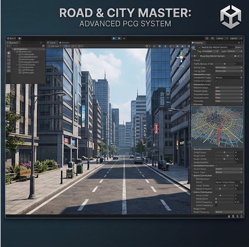

Road & City Master
A road, intersection, interchange and city builder for Unity 6, built to sit on top of a procedurally generated world and to be driven either by hand in the scene view or entirely from code.
Read this first. This tool does not only build roads. It builds roads, grade-separated interchanges, street networks, blocks, lots, building pads, streetscape furniture and whole settlements. Every building it places is your own prefab — the tool never invents a house. Where the manual says "the city layer", it means the machinery that decides where things go and what shape the ground must be so that they fit. What actually stands on those pads is content you supply.
Road & City MasterTable of contents
Every page of the manual, and every heading inside it. 19 sections, 228 headings — each entry jumps straight to the page it names.
- 5.1Create a road system
- 5.2Add a road and place nodes
- 5.3The cross-section: bands, not numbers
- 5.4Widening, narrowing and auxiliary lanes
- 5.5Road classes and their real-world defaults
- 5.6Gradient: the steepest the road is allowed to climb
- 5.7Moving the elevation of a road
- 5.8Making a divided road with opposing lanes
- 5.9Lanes
- 5.10Connecting roads: junctions, crossings and continuations
- 5.11Roundabouts
- 5.12Bridges
- 5.13Tunnels
- 5.14Culverts and roadside ditches
- 5.15Rebuilding: how a change becomes geometry
- 6.1Finding the crossing
- 6.2Which road rises
- 6.3The climb, and the refusal
- 6.4Where the bridge goes
- 6.5Why the ramp is a separate thing
- 6.6The auxiliary lane on the mainline
- 6.7Ramps between nodes that are far apart
- 6.8What a ramp refuses, and why
- 6.9The ramp's own centreline
- 6.10Creating a flyover interchange, with the code
- 6.11What is computed and what is deferred
- 7.1How to connect a prefab
- 7.2Spacing: how many objects, and where
- 7.3Offset and curves: sideways, upwards, and tapered
- 7.4Rotation, axis locks and scale
- 7.5Worked example: a lamp-post run
- 7.6Material override: when the prefab’s own material is wrong
- 7.7Sitting on the ground, and collapsing the draw calls
- 7.8Objects on a bridge, and the mid-span trick
- 7.9Groups: the presets, and why you should use them
- 7.10Extrusions: railings, kerbs, medians and barriers
- 8.1What a city is, as data
- 8.2The bake, and why its order is a correctness rule
- 8.3What an operator may and may not do
- 8.4Seeds: the same city twice, and a different one on purpose
- 8.5The street network: how the streets grow
- 8.6Blocks and lots: dividing the land the streets enclosed
- 8.7Buildings: your prefabs, placed — never generated
- 8.8The content resolver, and why it refuses instead of substituting
- 8.9Recipe: bake a settlement from nothing
- 9.1The three ways a settlement gets placed
- 9.2Count-driven scatter: spacing that is math, not luck
- 9.3The zone catalogue
- 9.4The buildable-land test: what a lot has to prove
- 9.5The footprint mask: hand-painted or imported from a real map
- 9.6Conform: the cells a settlement loses, and to what
- 9.7What is built, and what is deferred
- 10.1Two modes, and how to tell which one you are in
- 10.2Connecting the two systems, step by step
- 10.3The four link states, and what each one means for you
- 10.4The probe: proving the link before trusting it
- 10.5Holds: what the tool takes, and giving it back
- 10.6The write gateway
- 10.7When the host regenerates the ground
- 10.8Tunnels across the linker
- 10.9Linker troubleshooting
Section 1Overview
On this page
Road & City Master is two layers that share one data model.
The lower layer is a spline-based road builder: you place nodes, it lays a carriageway with lanes, shoulders, markings and a median, and it cuts the terrain to receive that carriageway. The upper layer is a city builder: it takes the road network as a skeleton, derives blocks and lots from it, flattens pads where buildings will stand, and runs furniture along the kerbs. Both layers write through one gateway so that nothing modifies the ground without a record of who asked and how to undo it.
The tool is designed to be used three ways, and all three are supported equally:
- By hand. Add a road system, ctrl-click nodes into the scene, adjust fields in the inspector. Nothing is hidden behind a generator.
- From code. Every operation a menu item performs has a public method behind it. Sections 6.10, 8.2 and 9.2 give working snippets you can paste into an editor script.
- Baked, then hand-edited. Run a generator, then treat its output as authored geometry and move it. The generators are deliberately one-shot: they produce nodes and components you own afterwards, not a runtime system that overwrites your edits.
1.1The road layer
The road layer is inherited, mature code that has been upgraded rather than replaced. It carries the geometry maths that makes a carriageway look right: spline arc-length parameterisation, corner definition, superelevation handling, lane splitting, marker plates, shoulder cuts and terrain matching. When you read the field reference in section 11.2 and find ninety fields on one component, that is why — each of them is a dial on maths that already works.
What the road layer gives you:
- Splines with per-node ease-in/ease-out, so a corner can be tightened without moving the node.
- A cross-section built from lane count, lane width, shoulder width and median width, evaluated per node rather than once per road — which is what makes widening possible at all.
- Automatic intersection construction between two roads, including corner fillets, turn lanes and marker plates.
- Bridges and tunnels driven from node flags, with the terrain response for each handled differently: a bridge leaves the ground alone and a tunnel asks for a cavity.
- Terrain conform: height matching, detail clearing and tree clearing, each independently switchable, each with a distance and a height falloff.
- Mesh output that can be saved to disk, marked static and lightmapped, or left as a runtime mesh.
1.2The city layer
The city layer is new work. It does not draw buildings and it does not draw roads; it decides where things belong and prepares the ground for them. It is organised as a set of operators — small classes with one job, run in a fixed order by a bake pipeline — rather than as a node graph. That choice is deliberate and is explained in section 8.2: an operator you can step through in a debugger is worth more than a graph you can rewire, when the output is a city that has to be reproducible.
What the city layer gives you:
- A street network derived from the road network: which roads are arterials, which are collectors, which are local streets, and where they meet.
- Blocks — the closed polygons the street network encloses — and lots subdivided from those blocks.
- Zoning: which lots are residential, commercial, industrial or civic, painted by hand or derived from distance to the centre.
- Building pads: a flat, correctly-oriented platform cut into the terrain, sized from the footprint of the prefab that will stand on it.
- Streetscape: lamp posts, poles, distribution lines, kerbs and railings, run along the road with exclusion spans so that nothing lands inside an intersection or on a bridge deck.
- Settlement placement: where towns and cities go on a continent, by hand, by count, or from a real map.
1.3Design rules the tool holds itself to
These are not aspirations. Each of them is enforced by a gate in the test suite (section 15), and the manual names the gate where it matters.
| Rule | What it means in practice |
|---|---|
| Real-world numbers, never invented ones | Lane widths, taper lengths, gradients, sight distances and spacing all come from a registry of sourced values with the source named beside each. A constant with no source is a reported defect, not a detail. |
| Baked, not runtime | The city is generated once, in the editor, into assets and GameObjects you own. Nothing regenerates behind your back at play time, so nothing can overwrite an edit you made. |
| Operators, not nodes | The pipeline is an ordered list of operator classes. You can read the order, breakpoint any step, and swap one without touching the others. |
| Your prefabs, never generated buildings | The tool measures your prefabs and plans a city around what they actually are. It does not synthesise architecture. See section 7.9. |
| One writer to the terrain | Every height, splat, detail and tree change goes through a single gateway that records the region, names the requester, and can hand the ground back. See section 10.6. |
| Determinism | The same inputs and the same seed produce byte-identical output. Two bakes of the same city are comparable in a diff. Nothing dated is written into generated files. |
| Neither product reaches into the other | The link between this tool and the world generator is one interface each way and nothing more. Neither side compiles against the other's internals. |
1.4Names you will see, and why they differ
The product is called Road & City Master. The identifier — folder, assembly, namespace root —
is RoadCityMaster, with no ampersand and no spaces. The menu root is Window ▸ Road City
Master, also with no ampersand, because Unity menu paths cannot contain &:
the character is the accelerator marker in Unity's menu parser and a path containing it renders wrongly or fails to
register. This is not an inconsistency to be tidied up; all three spellings are correct in their own place.
| Where | Spelling |
|---|---|
| Documentation, window titles, the masthead above | Road & City Master |
| Menu paths | Window ▸ Road City Master ▸ … |
| Folder, assembly definition, namespace root, repository | RoadCityMaster |
| The name the tool reports to the world generator | "Road & City Master", from
TerrainLinker.PathToolName |
The repository is https://github.com/Phoenix-229/RoadCity_Master.
Two legacy string constants remain inside the .rao readers so that libraries authored under the tool's
earlier name still load; they are reader-side only and are documented in section 14.
Section 2Requirements and layout
On this page
2.1Unity version and render pipeline
| Requirement | Value | Notes |
|---|---|---|
| Unity | 6000.4 or newer | Developed and verified on 6000.5.2f1. Earlier majors are not supported: several terrain and physics
APIs this tool relies on were renamed or had their meaning inverted in Unity 6, and the shims needed to paper over
that are exactly the kind of hidden branch this codebase refuses to carry. |
| Render pipeline | URP only | URP 17.5.0. All shipped materials and shaders are URP. There is no built-in-pipeline or HDRP variant. |
| Scripting | Managed C# | Tasks and threads. No DOTS, no Burst, no Jobs package dependency. |
| Physics material type | PhysicsMaterial |
Unity 6 renamed PhysicMaterial. Fields on Road are typed
PhysicsMaterial. |
| Terrain | Unity native Terrain |
The tool writes to real Unity terrain data. It does not require a third-party terrain system, and it does not substitute a mesh terrain of its own. |
Multithreading and the editor. RoadSystem.isMultithreaded is on by default and
road construction runs off the main thread. If you are debugging a construction problem, turn it off first: a stack
trace from a worker thread will point at the dispatcher rather than at your road.
2.2Assemblies, and what references what
There are exactly two assembly definitions. Knowing which one a file lands in is not
bookkeeping — it decides whether a MonoBehaviour can be attached at all, and it decides which
compile errors you are allowed to see.
| File | Assembly | Contains |
|---|---|---|
RoadCityMaster.asmdef (folder root) | runtime | Everything under the tool root that is not inside an Editor folder: all of
Scripts/*.cs and all of City/Runtime/**. |
Scripts/Editor/RoadCityMaster.Editor.asmdef | editor | The inspectors, windows and menu items under Scripts/Editor/. |
City/Editor/RoadCityMaster.Editor.asmref | — (a reference, not a definition) | Pulls every City/Editor/*.cs into the editor assembly above rather than creating a third
one. This is why the 100-plus gate classes live beside the city code and still compile as editor code. |
Both assemblies reference UniverseCreator (the world generator's runtime assembly) and
Unity.RenderPipelines.Core.Runtime. Neither references the world generator's editor assembly.
Two consequences follow, and both have bitten:
- Assembly references are not transitive. Adding a reference to the editor assembly does not give the runtime assembly the same reach, and vice versa. If a type resolves in one and not the other, this is the first thing to check.
- A world-generator editor utility cannot be called from here. That is deliberate. Reaching into the other product's editor code to reuse a renderer or a builder would create exactly the coupling that rule seven forbids. When both products need the same thing, each keeps its own copy.
A runtime-assembly compile error hides every editor-assembly error. The editor assembly depends on the runtime one, so if the runtime assembly does not build, Unity never attempts the editor assembly and reports nothing from it. If you fix one runtime error and a dozen editor errors appear, nothing got worse — you can now see them.
The editor-assembly trap for MonoBehaviours
Unity refuses to attach a MonoBehaviour that was compiled into an editor assembly.
AddComponent<T>() logs Can't add script behaviour 'T' because it is an editor
script. and — this is the part that costs hours — returns null instead of
throwing. Any component that must be attachable therefore lives in the runtime assembly and is wrapped in
#if UNITY_EDITOR if it is only meant for editor use. That is why the test double
FakeProviderComponent sits in City/Runtime/TestSupport/ and not in an
Editor folder, and why the socket gate now throws a named exception when the attach returns
null rather than passing the null onward.
2.3Namespaces follow folders
There is one rule and it has no exceptions worth remembering:
| Folder | Namespace |
|---|---|
Scripts/** | RoadCityMaster |
Scripts/RoadAutomation.cs | RoadCityMaster.Roads |
Scripts/Editor/** | RoadCityMaster.Editor |
City/Runtime/** | RoadCityMaster.City |
City/Editor/** | RoadCityMaster.City.Editor |
Because C# resolves an unqualified name by walking outward through enclosing namespaces, a type in
RoadCityMaster.City.Editor sees everything in RoadCityMaster.City without a
using. Moving a type from the editor namespace up into the runtime one therefore needs
no call-site edits at all — which is how the fake provider was relocated out of the editor assembly without
touching the twenty files that use it.
2.4Folder map
At the tool root:
| Folder | What is in it |
|---|---|
Scripts/ | 117 C# files. The road layer: splines, road, intersections, construction,
terrain deformation, the .rao library format, the edge- and extruded-object makers, and the editor
inspectors under Scripts/Editor/. |
City/ | 205 C# files, split into City/Runtime/ (the city layer proper) and
City/Editor/ (the gate suite and city-side editor tools). |
Editor/ | No C#. Editor-only assets. |
Prefabs/ | The shipped prefabs: signs, railings, poles, guard rails, kerbs, bridge parts. See section 7.9. |
Materials/ | URP materials for road surface, markings, shoulders, medians and furniture. |
Shaders/ | URP shaders written for this tool. See section 13. |
Textures/ | Surface, marking and detail textures, including .tga
sources. |
Mesh/ | Authored meshes used by extruded objects and end caps. |
Physics/ | PhysicsMaterial assets for road and shoulder friction. |
Flares/ | Lens flare assets for street lighting. |
ManualImages/ | The masthead and favicon this page uses. |
Docs/ | Upstream provenance notes. Transitional; see section 19. |
Inside City/Runtime/, one folder per concern:
Alignment, Blocks, Buildings, Common, Corridor,
Data, DataAssets, Editing, Hubs, Import,
Integration, Licensing, Math, Network, Packaging,
Pipeline, Rail, Runs, Scatter, Settlement,
Streaming, Streetscape, Terrain, TestSupport,
Utilities, Zoning.
Section 3The menu map
On this page
Everything the tool exposes lives under one root: Window ▸ Road City Master. There are 126 items in
total — six at the top level and the rest in six submenus.
Why Window and not Tools, and why no ampersand. One root means one place
to look; a tool split across Window and Tools teaches you to hunt. The ampersand is left
out because Unity's MenuItem string doubles as a shortcut specifier — a space followed by
%, # or & means Ctrl, Shift or Alt — so an ampersand surrounded by spaces
inside a menu path is at best ambiguous to that parser. The product keeps its ampersand everywhere else.
3.1Top level
| Item | What it does |
|---|---|
| Create road system | Creates the parent GameObject with a RoadSystem component. Everything else hangs off this. One per
scene is the normal arrangement. See 5.1. |
| Add road | Adds a child Road under the selected road system and puts you into node-placement mode. See
5.2. |
| Update All Roads | Forces every road in the scene to rebuild. Use it after changing a shared material, after a terrain edit made
outside the tool, or when isAutoUpdatingInEditor is off. See 5.10. |
| Open Manual | Opens this file in your default browser, straight off disk. It is a single self-contained HTML file with no external stylesheet, so it also survives being copied or e-mailed on its own. |
| Help | Opens the repository. |
| Report a Bug | Opens the repository's issue tracker. |
3.2Alignment (2 items)
Show / Hide the alignment handles. Toggles the horizontal- and vertical-alignment editing handles in the scene view: tangent lengths, curve radii, and the vertical profile's crest and sag control points. Off by default because on a long road the handles outnumber the road.
3.3Corridor (8 items)
The corridor tools answer one question before you place a single node: where can a road of this class actually go? They render a cost surface over the terrain.
| Item | Shows |
|---|---|
| Show / Hide the suitability overlay | The combined cost surface. |
| Show the corridor band | The band of acceptable ground between two chosen endpoints. |
| Show gradient only | Cost from slope alone. |
| Show earthwork only | Cost from cut-and-fill volume alone. |
| Show cost | The numeric total per cell. |
| Show ground this class cannot climb | Cells that exceed the selected road class's maximum gradient — hard exclusions rather than expensive ground. |
| Show which factor decided each cell | Colour-codes each cell by the factor that dominated its cost, so an unexpected corridor can be explained instead of guessed at. |
3.4Documentation (7 items)
These write generated tables to disk. They exist because some of this manual's content — and several of the project's registers — must not be retyped by hand: if a value changes in code, the table has to change with it, and a gate compares the file on disk against a freshly generated copy so that a stale table fails the suite.
| Item | Writes |
|---|---|
| Write the terrain availability table | Which terrain features (building pad, tunnel cavity, bridge deck, cut region, and the rest) are available in which mode, standalone or linked. |
| Write the geometry provenance table | Every geometry constant with its source, so an unsourced number is visible. |
| Write the shader and material inventory | Every shader and material the tool ships, with its pipeline. |
| Write the material port record | What each ported material was, and what it became. |
| Write the disposition list | The per-file disposition of inherited code: kept, rewritten, or retired. |
| Write the inspector consistency checklist | Every inspector field with its units, range and source. This is what section 11 is checked against. |
| Write the manual's generated tables | Regenerates the tables in this page that are derived rather than authored. |
3.5Export (4 items)
| Item | Result |
|---|---|
| Export whole selection to single OBJ | One file, everything selected merged into it. |
| Export each selected to single OBJ | One file per selected GameObject. |
| Export all MeshFilters in selection to separate OBJs | One file per MeshFilter, including
children. |
| Exporters by Hrafnkell Freyr Hlooversson from Unity3D wiki | An attribution item, not an action. The OBJ exporter is third-party code and this row names its author in the menu itself. |
3.6Licensing (2 items)
| Item | Result |
|---|---|
| Stamp per-file headers | Writes the licence header into every source file that is missing one. Runs in check-only mode unless explicitly told to write; see section 16. |
| Check + export package | Validates the packaging rules and produces the distributable. |
3.7Testing (99 items)
Every gate in the suite has its own menu item so that a single behaviour can be re-run in isolation without paying for the whole suite. The one you will use most is at the top:
Testing ▸ RUN ALL GATES (topic-boundary verification) — discovers and runs every
gate, then prints one aggregate line. See section 15 for the report format, the batchmode
form, and how to read a failure.
The items marked (caution) create and destroy scene objects.
Run all unit tests, the numbered Run unit test N items and Clean up tests build
fixtures in the open scene. Run them in a scratch scene, not in one you have unsaved work in.
Section 4Quick start
Six steps, from an empty scene to a road on the ground. Everything here is expanded on later; this is the shortest path that produces something you can look at.
- Have a terrain. A Unity
Terrainin the scene, or a world generated by the world generator. Roads can be built without terrain, but every terrain-conform feature will report itself unavailable and the road will float. Window ▸ Road City Master ▸ Create road system. A GameObject named for the system appears with aRoadSystemcomponent. Leave its four fields alone for now.- With that object selected,
Window ▸ Road City Master ▸ Add road. A childRoadappears, with an empty spline. - Place nodes. With the road selected, hold CTRL and left-click on the terrain. Each click appends a node to the end of the spline. Three or more nodes give you a road with a curve in it. To insert a node between two existing ones, hold SHIFT and left-click on the road.
- Watch it build. With
isAutoUpdatingInEditoron (the default) the road rebuilds after each change. The progress bar in the inspector tells you which stage it is in. - Adjust the section. Change
laneWidth,shoulderWidthor the lane counts in the road's inspector and watch the carriageway follow. This is the fastest way to get a feel for what the cross-section fields do.
| Gesture | Effect |
|---|---|
| CTRL + Left-Click on terrain | Append a node to the end of the spline. |
| SHIFT + Left-Click on the road | Insert a node at that point, between the two nodes it falls between. |
| Select a node and drag its handle | Move it. The road rebuilds around it. |
| Select a node | Its own inspector appears, including its edge objects and extruded objects. |
If nothing appears when you ctrl-click: the click has to land on a collider. Terrain has one by
default; a mesh ground plane may not. isEditorMouseHittingTerrain on the road is the flag the editor sets
when the ray hits, and it is the first thing to look at.
Section 5Building roads, step by step
On this page
- 5.1 Create a road system
- 5.2 Add a road and place nodes
- 5.3 The cross-section: bands, not numbers
- 5.4 Widening, narrowing and auxiliary lanes
- 5.5 Road classes and their real-world defaults
- Changing what a road is, after it exists
- Reading the override report before you commit
- The centre divider, and the width it really needs
- 5.6 Gradient: the steepest the road is allowed to climb
- How the ceiling is applied
- When it does not apply
- Reading the grade a node actually has
- 5.7 Moving the elevation of a road
- The transform is the authority, pos is the copy
- Raising a length of road
- Keys and handles that matter here
- Elevation against the ground, not against zero
- Nodes whose height you do not own
- 5.8 Making a divided road with opposing lanes
- The four fields that divide a road
- Turning an undivided road into a dual carriageway
- What a median of a given width can hold
- How the two carriageways are actually cut
- The depressed median, when you reach 9 m
- How a median barrier ends
- 5.9 Lanes
- The section is a list of bands, not a width
- Auxiliary lanes: the five real kinds
- How long a taper has to be
- Crossing a four-lane road with a two-lane one
- Lane anchors: where furniture belongs
- 5.10 Connecting roads: junctions, crossings and continuations
- What happens the moment you release the mouse
- Joining two roads end to end
- Creating a crossing
- Stopping a junction you do not want
- The junction inspector
- Traffic signals at a junction
- Junction surfaces
- 5.11 Roundabouts
- The sizing table
- What is derived, and the two refusals
- Why the loop is not a closed road
- 5.12 Bridges
- Marking a span as a bridge
- Which nodes cannot start a bridge, and why
- The three bridge types, and what each one's sheet says
- Where the supports land
- When a pier lands on the road below
- The two refusals before anything is built
- What is computed and what is generated
- 5.13 Tunnels
- Marking a span as a tunnel
- Connected and standalone: whether the bore is actually cut
- Why the lining is bigger than the bore
- Tunnelling under water
- The release path, and the orphaned hole
- What is computed and what is deferred
- 5.14 Culverts and roadside ditches
- Sizing the barrel from the design flow
- Barrel length, and why a shallow crossing needs a longer pipe
- The invert — the number that makes or breaks the crossing
- Roadside ditches (swales)
- The refusal: a ditch with nowhere to go
- What is computed and what is deferred
- 5.15 Rebuilding: how a change becomes geometry
- The flag, not the build
- The five update types
- One queue, and why the editor stays usable
- Dragging a slider: why only the last build survives
- The three ways a build declines
- The scene-wide switches
5.1Create a road system
The road system is the owner. It holds the four global switches, and — more importantly — it is the single object that pumps the shared build queue. Roads do not each run their own build loop; one owner drains one queue. That is why a scene wants one road system rather than one per district: two systems means two pumps competing for the same queue.
What the component actually does at runtime is short: its Update calls
City.BuildDispatch.Shared.Pump(). In the editor, where there is no Update, it subscribes
EditorPumpBuilds to an editor tick through EngineIntegration — an indirection that exists so
this runtime file names no editor type — and unsubscribes on disable.
Why that handler is a named method and not a lambda. -= on an anonymous delegate
removes a different instance than += added, so the unsubscribe silently fails and the editor
accumulates one dead subscription per domain reload. After twenty script recompiles you have twenty pumps. A named
method makes += and -= refer to the same target.
5.2Add a road and place nodes
A road is a child of the road system carrying a Road component and a spline. The spline is a separate
child object (splineObject) holding a SplineC; the nodes are SplineN components
on children of that. You rarely touch the spline object directly — you work with nodes.
What a node is
A node is a position, a rotation, a tangent and a set of flags. The flags are what turn an ordinary node into something structural:
| Flag | Turns the node into |
|---|---|
isIntersection | One half of an intersection. Set by the intersection tool, not by hand. |
isBridgeStart / isBridgeEnd | The two ends of a bridge span. See 5.12. |
isTunnelStart / isTunnelEnd | The two ends of a bore. See 5.13. |
isEndPoint | First or last node on the spline. Maintained for you. |
isNeverIntersect | Excludes this node from automatic intersection detection. Use it where two roads cross on purpose without meeting — the approach to a flyover, for instance. |
isIgnore | Node is kept in the list but takes no part in geometry. Useful for parking a node you are about to need again. |
isSpecialEndNode | An end node that belongs to an intersection or a road connection rather
than to open road. Its counterpart is tracked in specialNodeCounterpart. |
Ease, and why you should reach for it before moving a node
Each node carries easeIO alongside its tangent. Raising it tightens the curve on approach without
moving the node's position. When a corner looks wrong, the instinct is to drag the node; the result is usually a
corner that is right and a road that no longer meets the thing it was meeting. Ease changes the shape of the curve and
leaves the geometry's endpoints where the rest of the network expects them.
minSplination and maxSplination (0 to 1) bound the stretch of the segment that extruded
objects occupy — see 7.10.
5.3The cross-section: bands, not numbers
The single most important idea in the road layer is that a cross-section is a list of contiguous bands, each measured in metres from the spline centre line, and that this list is evaluated at a distance along the road rather than once for the whole road. Everything else — widening, turn bays, where a guard rail stands, where a kerb line runs — falls out of that.
A band is a LaneBand with five members:
| Member | Meaning |
|---|---|
Kind | Shoulder, Lane, Median or
Auxiliary. |
Direction | +1 forward, -1 backward, 0 for a band
that carries no traffic (shoulder, median). |
IndexFromCentre | Which lane this is within its direction, counted outward from the centre
line, 0 innermost. -1 when the band is not a lane. |
Left, Right | Lateral offsets in metres from the centre line. Width
and Centre are derived. |
The invariant that makes the list usable: no band overlaps its neighbour and none leaves a gap.
Each band starts exactly where the previous one ended. LaneModel.IsContiguous and
IsContiguousBetween prove it rather than assuming it, and the lane-section gate asserts it for every
section the tool can produce.
Getting the bands
// Whole-road section: left shoulder, backward lanes, median, forward lanes, right shoulder.
List<LaneBand> bands = road.LaneBands();
// Section at a distance along the road, with any authored auxiliary lane opened or closed.
// leftEdge / rightEdge come back as the extents the section ACTUALLY spans here, because an
// auxiliary lane grows the road on one side only and the through lanes do not move.
float leftEdge, rightEdge;
List<LaneBand> here = road.LaneBandsAt(distanceAlongMetres, out leftEdge, out rightEdge);
// Or straight from the model, if you have the numbers and not the road:
List<LaneBand> b = LaneModel.Bands(lanesForward, lanesBackward, laneWidth,
shoulderWidth, medianWidth);Four convenience readers on Road sit on top of the same model, and all four call
EnsureLaneModel() first so they are correct whichever ran first:
| Method | Returns |
|---|---|
LaneTotal() | Total lanes across both directions — what the removed
laneAmount field used to mean, so old comparisons still read the same number. |
SetLaneTotal(int) | Sets the model from a directionless total, splitting by the current
one-way setting. This is the write path that replaces assigning laneAmount. |
HasPhysicalMedian() | True when the centre divider is a thing occupying width
rather than paint. The rule itself lives in City.RoadTypeChange.IsPhysicalDivider so a section build and
a road-type change cannot disagree about which dividers are physical. |
MedianWidthEffective() | The median width that actually enters the section: zero unless there are opposing lanes to separate, the divider is physical, and a width was authored. |
CrossSectionWidth() | Lanes + median + one shoulder each side, in metres. |
Lane counts and the split
Roads carry lanesForward and lanesBackward. A road that has never had its counts split
carries lanesBackward == LaneModel.Unsplit (-1) — the marker that says this road still
stores a single total. EnsureLaneModel() splits it once, on demand, and no existing value is lost:
LaneModel.SplitTotal(total, isOneWay, out forward, out backward) puts everything forward on a one-way
road and divides evenly otherwise, with the odd lane going forward.
This matters when you set lane counts from code. Set the total and let the model split, or set both halves; do not
set lanesForward and leave lanesBackward at whatever it was.
5.4Widening, narrowing and auxiliary lanes
A lane may not appear or vanish abruptly. When a road gains a lane, the asphalt is laid over a real length and the new lane grows from zero width to full width across it. That length is a taper, and the tool computes it rather than letting a caller invent a number.
Any lane that exists over part of a road rather than all of it is an auxiliary lane. There are five real kinds and the tool models all five:
AuxLaneKind | What it is | Taper shape |
|---|---|---|
Deceleration | Speed-change lane before a diverge — a ramp exit or flyover off-slip. | Opens on a taper, holds full width to the gore, ends there because its traffic has left the road.
EndFull == End. |
Acceleration | Speed-change lane after a merge — a ramp entry. | Starts at full width where the ramp joins and tapers closed as its traffic moves across.
Start == Full. |
Climbing | A truck lane on a sustained grade. This is what an odd lane total on a two-way road usually is. | Opens, runs the length of the grade, closes. |
Widening | A permanent lane addition — two lanes becoming four part way along. | A taper opens the lane and it never closes again. |
TurnBay | The surplus lanes of a wider approach where it meets a narrower road. | Opens on a taper, holds to the stop line, ends there because its traffic has turned off. |
All four distances on an auxiliary lane are measured along the spline in metres and must be non-decreasing: the
taper opens over [Start, Full], full width holds over [Full, EndFull], the taper closes over
[EndFull, End]. The lane opens on one side of the section, outboard of that direction's
outermost through lane and inboard of its shoulder — which is where a real speed-change lane goes. The through
lanes do not move.
How long the taper is, and where the number comes from
LaneModel.TaperLengthMetres(offsetWidthM, designSpeedKPH) is the one place this relation lives. It is
MUTCD Table 6C-4 in metric form:
S <= 60 km/h : L = W * S² / 155
S >= 70 km/h : L = 0.62 * W * S
L = taper length, metres W = offset width, metres S = design speed, km/hBoth constants are exact conversions of the customary relations rather than remembered figures. The customary
high-speed rule is L(ft) = W(ft) × S(mph); substituting W(ft) = W/0.3048,
S(mph) = S/1.609344 and L = 0.3048 × L(ft) leaves L = W × S / 1.609344 = 0.6214 W S,
which is the 0.62 the metric table prints. The low-speed rule converts the same way to W × S² / 155.4.
The 61–69 km/h gap in the published table is resolved upward to the high-speed formula, that being the longer
and therefore the safer of the two.
A lateral shift that adds no lane is half a merging taper:
ShiftingTaperLengthMetres(). CrossSection.DividedRoad.MinimumTransitionLengthMetres delegates
to the same function rather than carrying its own copy, so a divided-road transition and a lane taper can never
disagree.
Worked check. A 3.6 m lane at 100 km/h gives 0.62 × 3.6 × 100 = 223 m, and the
customary row for a 12 ft lane at 60 mph gives 12 × 60 = 720 ft = 219 m. The same 3.6 m lane at 40 km/h
gives 3.6 × 1600 / 155 = 37 m, which is the order of the "roughly 30 m" an urban flyover diverge shows on
the ground. The observation and the standard agree, and the standard is what is used.
Authoring a widening
Two helpers on Road cover the common cases. Both leave the lane-count fields alone — those describe the
road before the widening — and put the extra lane in the auxiliary list, which is exactly what lets the lane
count differ from one end of a road to the other.
// Permanent widening: gain one lane on the forward side, 120 m along, tapering in
// over whatever length the design speed requires.
road.AddWidening(+1, 120f);
// Do it on both sides and a two-lane road becomes four-lane part way along:
road.AddWidening(+1, 120f);
road.AddWidening(-1, 120f);
// A turn bay ending at a stop line 240 m along, with 45 m of storage:
road.AddTurnBay(+1, 240f, 45f);
road.UpdateRoad();For the kinds those two helpers do not cover, build the struct directly and add it to
road.auxLanes:
road.auxLanes.Add(AuxiliaryLaneAuthored.From(
AuxiliaryLane.Deceleration(direction: +1,
goreM: 840f, // where the ramp leaves
fullLengthM: 180f, // full-width run before the gore
laneWidthM: road.laneWidth,
designSpeedKPH: road.DesignSpeedKPH())));AuxiliaryLaneAuthored is the serialisable face of the readonly AuxiliaryLane struct —
Unity cannot serialise readonly fields, so the authored form is a mutable class on the road and is converted to the
immutable struct whenever the section is evaluated. The model file pulls in no UnityEngine type at all,
which is what keeps the whole lane model reachable from a headless gate.
Reading the width where it varies
float leftEdge, rightEdge;
List<LaneBand> bands = road.LaneBandsAt(600f, out leftEdge, out rightEdge);
float widthHere = rightEdge - leftEdge;This is the call anything placed along a road must use. A guard rail that asks
CrossSectionWidth() once and then runs the length of the road will cut the corner across every widening;
one that asks LaneBandsAt per station follows the pavement out and back in again.
5.5Road classes and their real-world defaults
roadClass is the single field that says what a road is. Setting it and calling
ApplyRoadClassDefaults() writes a whole design profile onto the road: lane count, lane width, shoulders,
one-way split, centre divider, design speed, grade limit and whether a carriageway mesh is generated at all.
Those numbers live in one register, RoadClassDefaults, held as pure data so the lookup
is testable without a scene. Each of the four headline numbers carries a NumberAudit that either cites a
named road-design reference or states why the value is an authored selection within a real range. Nothing is left
unknown, and the inspector reads this register rather than carrying its own copy — so the applied defaults and the
audited defaults cannot drift apart.
| Class | Lanes | Lane width | Shoulder | One-way | Divider | Design speed | Max grade | Mesh |
|---|---|---|---|---|---|---|---|---|
UrbanSingleLane | 1 | 3.00 m | none | yes | None | 30 km/h | 12 % | yes |
UrbanTwoLane | 2 | 3.25 m | 1.0 m | no | Markers | 50 km/h | 10 % | yes |
OneWayStreet | 2 | 3.25 m | 1.0 m | yes | None | 50 km/h | 10 % | yes |
UrbanFourLane | 4 | 3.25 m | 1.5 m | no | K_Rail | 60 km/h | 8 % | yes |
Collector | 4 | 3.50 m | 2.0 m | no | Markers | 70 km/h | 7 % | yes |
Arterial | 6 | 3.50 m | 2.5 m | no | K_Rail | 80 km/h | 6 % | yes |
HighwayDual | 4 | 3.65 m | 3.0 m | no | K_Rail | 100 km/h | 5 % | yes |
Motorway | 6 | 3.75 m | 3.5 m | no | K_Rail | 120 km/h | 4 % | yes |
ServiceLane | 1 | 3.00 m | 0.5 m | yes | None | 20 km/h | 15 % | yes |
RailSingle | 1 | 1.435 m | 0.5 m | no | None | 120 km/h | 3.5 % | no |
RailDouble | 2 | 1.435 m | 0.5 m | no | None | 120 km/h | 3.5 % | no |
Ropeway | 1 | 1.00 m | — | no | None | 40 km/h | 60 % | no |
PedestrianPath | 1 | 2.00 m | — | no | None | 5 km/h | 12 % | no |
The 1.435 m on the two rail classes is standard gauge, not a lane width — a rail carrier's "lane" is the track. The
four bottom classes are spline-only carriers: they generate no carriageway mesh. A
RailSingle road is a centre line that rail track, sleepers and ballast are run along as extruded objects;
a Ropeway is a cable route; a PedestrianPath is a footway centre line. They exist as road
classes because everything the spline layer gives you — arc-length stations, grade limits, terrain conform, edge
objects — is exactly what those carriers need.
Changing what a road is, after it exists
A road's class is not a construction-time decision. If you lay a residential street through a valley,
spend an hour tuning its nodes to the terrain, and then decide it should have been an arterial, you change the class
and rebuild — you do not re-lay the road. The whole type-decided set is one value, RoadTypeState, so the
change is a rebuild from data rather than a hand-edit of a dozen scattered fields.
Road road = ...;
// Refresh everything from the class table, discarding your own figures:
road.roadClass = Road.RoadClassEnum.Arterial;
road.ApplyRoadClassDefaults(); // same as ApplyRoadClassDefaults(false)
road.UpdateRoad();
// Or: adopt the new class but KEEP every figure you deliberately changed:
road.roadClass = Road.RoadClassEnum.Arterial;
road.ApplyRoadClassDefaults(true); // preserveOverrides
road.UpdateRoad();preserveOverrides: true is the one to reach for on a road somebody has already tuned. The rule is
per-field and it is simple: a value you moved away from the outgoing class's default is kept; a value
still sitting at that default is refreshed to the incoming class's. So your hand-set 3.2 m lanes survive the change to
Arterial, while the design speed and grade limit you never touched follow the new class.
These are the fields the class decides, and therefore the fields the merge writes:
Member of RoadTypeState | What it settles |
|---|---|
roadClass | The class itself. |
lanesForward, lanesBackward | The split lane model — see §5.3. |
isOneWay | Whether the backward direction exists at all. |
laneWidth | One lane, in metres. |
isShouldersEnabled, shoulderWidth | Whether there is a shoulder, and how wide. |
centerDivider, medianWidth | What sits between the directions, and how much room it gets. |
speedLimitKPH | The design speed every taper length is worked from (§5.4). |
isMaxGradeEnabled, maxGrade | The grade ceiling and whether it is enforced. |
isGeneratingRoadMesh | Carriageway mesh, or spline-only carrier. |
surface | The surface — see the note below. |
Surface passes through untouched. Class and surface are two independent axes: an arterial can be sealed or gravel, and the class table has no surface column to merge from. Silently resetting a surface you chose because you changed the class would be inventing a rule nobody wrote down, so the merge leaves it alone.
Two states are equal only when every member matches exactly — == on the floats, no tolerance.
That is deliberate: a tolerance would let a lane width come back as 3.5000001 m and still call the round trip
lossless, and after a dozen class changes the road is quietly not the road it was.
Reading the override report before you commit
Before changing class on a tuned road, you can ask what the change would step on. OverrideReport
returns one line per value you have moved away from the outgoing class's default, with what the incoming class wants
instead. It corrects nothing — it is a report, and the road it describes is left exactly as it is.
string report = RoadCityMaster.City.RoadTypeChange.OverrideReport(
road.TypeState(), road.roadClass, Road.RoadClassEnum.Motorway);
if (report.Length > 0) { Debug.Log(report); }A row is flagged as a conflict only when your value falls outside the span every class in the cited table works within — that is a figure no road in the table sanctions, which is worth saying out loud. An override inside that span is just a design decision, and is reported as kept. Conflicts print first, so the thing worth reading is not underneath the thing that is merely worth knowing. The spans are read off the table rather than typed in: the low end is whichever class asks least of that field and the high end whichever asks most, so adding a class widens the span by itself and no figure in the report can fall out of date. Where the table carries no citation for a field — shoulder width, and the three choice fields — no span is stated at all, because a band nobody cited would be a number invented on the spot.
The centre divider, and the width it really needs
centerDivider takes one of five values, and the choice decides whether the median is a physical object
in the cross-section or paint on it:
| Value | Physical? | Base footprint | What it is |
|---|---|---|---|
None | no | 0 m | Nothing between the directions. |
Markers | no | 0 m | Paint. A centre line, not an object. |
K_Rail | yes | 0.61 m | Precast concrete barrier. |
KRail_Blinds | yes | 0.61 m | The same barrier with a glare screen on top. |
Wire | yes | 0 m | Wire rope barrier. |
0.61 m is a 24 in base — a Caltrans Type K precast barrier, which is also what the F-shape and single-slope permanent barriers it stands in for measure. The glare-screen variant adds height, not base width, so it has the same footprint. Wire rope reports 0 m on purpose: its posts are too slim to set a median width, and such a barrier is installed in a median that is already wide enough for it rather than one sized around it. Paint has no footprint at all.
Ask these questions through the road, not by testing the enum yourself:
bool physical = road.HasPhysicalMedian(); // → RoadTypeChange.IsPhysicalDivider
float median = road.MedianWidthEffective(); // 0 unless there IS a backward direction
// AND the divider is physical
// AND medianWidth > 0Both delegate, so the question has exactly one answer wherever it is asked. Note the second one's three
conditions: a one-way road reports no median however its medianWidth is set, because there is no opposing
direction for a median to separate.
5.6Gradient: the steepest the road is allowed to climb
A road has a ceiling on how steeply it may rise or fall, and the tool enforces it while you place nodes rather than complaining about it afterwards. Two fields on the road own this:
| Field | Default | What it means |
|---|---|---|
isMaxGradeEnabled | true | Whether the ceiling is enforced at all. |
maxGrade | 0.08f | Rise over run as a fraction, not a percentage. 0.08 is an 8 % grade. |
The unit is the thing to get right. maxGrade is a fraction, so a 6 % motorway limit is
0.06f; the inspector's per-node readout is the one place a percentage appears, because that is how a
highway drawing states it.
How the ceiling is applied
Each node can answer, for any candidate position, the highest and lowest Y that position is allowed to have given
where the node itself sits. That is SplineN.FilterMaxGradeHeight:
float CurrentDistance = Vector2.Distance(new Vector2(pos.x, pos.z),
new Vector2(_pos.x, _pos.z));
_maxY = (spline.road.maxGrade * CurrentDistance) + pos.y;
_minY = pos.y - (spline.road.maxGrade * CurrentDistance);
if (_pos.y > _maxY) { _pos.y = _maxY; }
if (_pos.y < _minY) { _pos.y = _minY; }Two details in there matter more than they look. The distance is measured with a Vector2 on X and Z, so
the run is plan distance, not slope length — which is how grade is defined on a real drawing, and
it is why a 100 m leg at 8 % is allowed exactly 8 m of rise rather than 8 m of climb along the
surface. And the window is symmetric: the same number caps a descent as caps a climb, so a road cannot dive into a
valley faster than it could have climbed out of it.
EnsureGradeValidity is what calls that. It asks the previous legitimate node for its window, and where a
node has both neighbours and satisfies neither, it takes the intersection of the two windows —
Mathf.Min of the two ceilings and Mathf.Max of the two floors — so a node squeezed
between two constraints ends up somewhere both of its neighbours can live with rather than somewhere only one can.
When it does not apply
Enforcement happens as a node is created or inserted, in Construction.cs, and it is skipped in two
cases that are deliberate rather than oversights:
| Skipped when | Why |
|---|---|
_isSpecialEndNode | The node's height is not yours to choose. An intersection or a connection has already decided where that end sits, and clamping it would pull the road away from the thing it is joining. |
_isForcedLoc (on insert) | A caller that asked for an exact position gets that exact position. Silently moving a node the code placed on purpose is worse than a steep leg. |
Turning isMaxGradeEnabled off does not flatten anything, and turning it on does not repair anything.
The flag governs the clamp applied at placement time, so switching it on part-way through leaves every node you
already placed exactly where it was. If you need an existing road brought inside a new ceiling, move the offending
nodes; the per-node readout below tells you which they are.
Reading the grade a node actually has
Every node reports the grade of the leg behind it, computed the same way a survey would:
dist = Vector2.Distance(new Vector2(P1.x, P1.z), new Vector2(P2.x, P2.z));
grade = ((P2.y - P1.y) / dist) * 100; // gradeToPrevValue, a percentageThe string form (gradeToPrev) is formatted to two decimals with a percent sign, and reads
NA for the first node on a spline, which has nothing behind it to be graded against. A node whose readout
exceeds the road's own ceiling is telling you it was placed before the ceiling applied, or that it is one of the exempt
cases above — it is not telling you the clamp is broken.
The class table in §5.5 sets this field for you, and the spread across the classes is the real-world spread: 4 % for a motorway, 8 % for an arterial, 12 % for an urban single lane that has to follow whatever the street grid does, 3.5 % for rail, and 60 % for a ropeway, which is not a road at all and is only in the table because the network has to be able to carry one.
5.7Moving the elevation of a road
What you will be able to do: raise a stretch of road onto an embankment, drop it into a cutting, lift one end to meet a bridge deck, and know exactly which of your keystrokes changed the height and which one the tool overrode.
There is no elevation slider, and that is deliberate. Every node on a road is a real
GameObject in the hierarchy, and its Transform is the elevation control. You move a road up or
down with Unity's own Move tool — the same handle, the same W shortcut, the same snapping and the same
undo — and the road follows on release. Nothing about height is hidden behind a custom widget.
The transform is the authority, pos is the copy
The node component carries a pos field, and that field is what the mesh builder reads. It is not what you
edit. On every scene repaint the node editor compares the two and copies one way only:
//Enforce maximum road grade:
if (VectorDiff(node.transform.position, node.pos))
{
node.pos = node.transform.position;
if (node.IsLegitimate() && node.spline.road.isMaxGradeEnabled)
{
node.EnsureGradeValidity();
}
TriggerRoadUpdate();
}Read that in order, because the order is the whole behaviour. The transform moves first, because you moved it. The
node's pos is then overwritten from the transform — so typing a Y into the transform's inspector fields
works exactly as well as dragging, and there is no second place to keep in sync. Only then is the grade ceiling applied,
and only when isMaxGradeEnabled is on. Finally the road is flagged for rebuild; the mesh is not rebuilt
inside the drag, which is why a long road stays responsive while you are still holding the handle.
Because the clamp runs after the copy, a node you drag past the ceiling does not spring back to where you
grabbed it — it is pulled to the highest (or lowest) point the ceiling allows and left there. That is the
_maxY/_minY window from §5.6 doing its job, and the node's
grade read-out will show the clamped value, not the one you attempted.
Raising a length of road
- Expand the road in the hierarchy until you can see its nodes. They are the children under the road's spline object, named in build order, and selecting one shows the node inspector described in §11.5.
- Select the first node of the stretch you want raised. Press W for the Move tool if it is not already active.
- Drag the green Y arrow up. Watch the Grade to prev node and Grade to next node lines in the node inspector's Statistics box — they update live, and they are the only honest report of what you have just built.
- Repeat for the remaining nodes of the stretch. Raising one node in isolation makes a bump; raising a run of them makes an embankment.
- Release the mouse. The road rebuilds itself if
isAutoUpdatingInEditoris on. If it is off, press F5 with a node selected, or use Tools › Road & City Master › Rebuild all roads.
Two nodes at the same height with a long leg between them give a flat road; the intermediate geometry is fitted, not
authored, so you never have to place a node per metre to get a smooth climb. Place nodes where the gradient
changes — the top and bottom of a climb, the point a cutting begins — and let the fit do the rest.
That is how a real vertical alignment is drawn, and it is why roadDefinition (the sampling interval) is a
separate dial from node spacing.
Keys and handles that matter here
| Key / action | What it does |
|---|---|
| W | Unity's Move tool. The green arrow is elevation; the red and blue arrows move the road in plan, which changes distance and therefore changes the grade too. |
| V + drag | Unity's vertex snap. Grabs the node by a vertex and drops it onto another — the quickest honest way to land a road end exactly on a bridge abutment or a kerb corner. |
| F5 | Force a rebuild of the road owning the selected node. Handled by the node editor directly, so it works while the pointer is over the scene view. |
| Ctrl+Z | One press returns the node to where it was. The move is an ordinary transform edit, so Unity's undo owns it — the tool adds nothing of its own to get in the way. |
| Left-click release | Also runs the connection search. Dropping a node within 2 m of another node may create an intersection or an end-to-end join. See §5.10 before you drag a node near another road. |
Elevation against the ground, not against zero
A node's Y is a world height. What the author usually means, though, is a height relative to the ground, and four separate fields on the road decide how the carriageway and the terrain settle their difference. They are all on the road, not on the node, because they describe the whole road's relationship with the landscape.
| Field | Unit | Default | What it decides |
|---|---|---|---|
| isHeightModificationEnabled | — | on | Whether the road is allowed to reshape the terrain at all. Off means the terrain is left exactly as it is and the road floats or buries itself wherever your nodes put it. |
| matchHeightsDistance | m | — | Half-width of the band of terrain blended up or down to meet the carriageway. Small values give a knife-edge shoulder; large values give a graded embankment. Range 0–200 m. |
| matchTerrainSubtraction | m | — | How far the carriageway is seated into the matched terrain, so the surface reads as laid on the ground rather than resting on top of it. Range 0–2 m. |
| isRaisingRoad | — | — | Lets the terrain match raise ground to the road as well as cut it away. Off, the road can only sit in a cutting; on, it can also sit on a fill. |
If a road looks like it is hovering, the first thing to check is not the nodes — it is whether
isHeightModificationEnabled is off, or whether the terrain that should have been matched is outside
magnitudeThreshold. A hovering road with correct-looking node heights is nearly always a terraform that did
not run.
Nodes whose height you do not own
Three kinds of node refuse to be moved freely, and each refusal is protecting something you asked for earlier:
| Node kind | Behaviour | Why |
|---|---|---|
| Intersection node | Snapped to its counterpart's position on release | A junction is one place in the world. Two nodes at slightly different heights would build a step in the middle of a crossing. |
Special end node (isSpecialEndNode) | Exempt from the grade clamp | It exists to hand a road off to the next road; forcing it inside this road's ceiling would break the join it was created to make. |
| Forced-location node | Exempt from the grade clamp | Its position was dictated by a bridge end, a tunnel portal or an intersection geometry pass, not by you. |
5.8Making a divided road with opposing lanes
What you will be able to do: turn a single carriageway into a dual carriageway with traffic running the other way on the far side of a median, choose what physically stands in that median, and understand why the tool sometimes refuses to put a barrier where you asked for one.
A divided road here is one road, not two. You draw one alignment, and the cross-section is split about it. That is the single most important thing to hold on to, because every instinct from other tools says to draw two roads side by side and it is the wrong instinct: two roads have two node lists, two intersections at every crossing, and no way to stay parallel through a curve. One road with a split section stays parallel by construction.
The four fields that divide a road
| Field | Type | Meaning |
|---|---|---|
| lanesForward | int, ≥1 | Lanes running in the road's own direction. At least one — a carriageway with no lanes is not a carriageway. |
| lanesBackward | int | The opposing lanes. 0 on a one-way street. −1 is a sentinel meaning "this road predates the split and has not been migrated yet"; it is replaced on load and you will never see it in a healthy scene. |
| isOneWay | bool | Declares which of the two states above is intended. It is what lets a
cross-field rule refuse lanesBackward = 0 on a road that claims to be two-way, instead of silently building
half a road. |
| centerDivider | enum | What separates the two directions: none, concrete barrier, barrier with glare
screens, wire rope, or painted markers. Only the physical types make medianWidth occupy width in the
section. Painted markers are paint on a shared surface. |
| medianWidth | m, 0–30 | How wide that separation is. 0 means no physical median at all. The ceiling is the real-world one: rural depressed medians reach about 30 m. |
lanesForward and lanesBackward replaced a single directionless laneAmount
field. The old field's data is preserved through [FormerlySerializedAs], so an older scene's total
lane count arrives in lanesForward and is split once on load. Do not re-enter lane counts on an upgraded
scene before checking what the split gave you — a four-lane road opened once becomes 2 + 2, and typing
4 + 4 "to be safe" gives you an eight-lane road.
Turning an undivided road into a dual carriageway
- Select the road. In Geometry, clear Is one way if it is set.
- Set Lanes forward and Lanes backward. Two and two is an ordinary dual carriageway; three and two is a perfectly legal asymmetric one and the tool will build it.
- Choose a Center divider. Pick the treatment you actually want in the world — the choice is not cosmetic, it decides whether the next field consumes section width.
- Set Median width. Read the band table below before typing, because the number you choose decides what can physically stand there.
- Rebuild. The section is swept about the same alignment, so the two carriageways stay parallel through every curve you already drew.
What a median of a given width can hold
This is not a preference. The width you type is looked up in a table of width bands, and the widest band the width reaches decides the contents. The scan is inclusive at the threshold, so a median exactly 2.4 m wide does hold a barrier.
| From | Contents | Basis |
|---|---|---|
| 0 m | Painted flush | Below the minimum raised-median width there is nothing to raise: paint only. |
| 1.2 m | Kerbed island with markings | AASHTO minimum raised median width, 1.2 m (4 ft). |
| 2.4 m | Barrier | Authored assembly of sourced parts: a 0.61 m F-shape barrier base (AASHTO Roadside Design Guide) plus a 0.9 m offset from each carriageway edge. |
| 9 m | Depressed trough | AASHTO: a median barrier is warranted below 9 m (30 ft) on a high-speed divided highway, and a depressed median with traversable slopes becomes practical at that width. |
| 15 m | Trough and planting | Authored: 2 × 6 m clear-zone setback plus a 3 m trough bottom. Planting setbacks are usually not stated by the standard, so this threshold is recorded as this project's own. |
A barrier belongs to its own band only. Ask for a concrete barrier in a 12 m median and you will not get one: at that width the standard stops warranting a barrier and starts warranting a traversable depressed median, and standing a barrier in a trough would be inventing a treatment no standard asks for. Narrow the median to below 9 m if the barrier is what you want.
How the two carriageways are actually cut
The divided cross-section is described by one authored profile, swept station by station. Every member of it is a curve or a number you can edit; none of it is generated behind your back:
| Profile member | Meaning |
|---|---|
| medianHalfGap | Distance from the alignment out to each carriageway's inner edge, as a function of station. A gap of zero makes the road undivided — the divided section reduces to the plain one, which is why there is no separate undivided code path to disagree with this one. |
| carriagewayHalfWidth | Half the width of one carriageway, as a function of station. This is where a widening enters a divided road, and it applies to each side independently of the median gap. |
| leftHeightOffset / rightHeightOffset | Each carriageway's own vertical profile at its inner edge, relative to the alignment. This is what lets one direction climb while the other does not — a real split-level dual carriageway on a hillside, which a single shared surface cannot express at all. |
| leftCrossSlope / rightCrossSlope | Cross-slope as a decimal (0.02 = 2 %), measured from each carriageway's inner edge outward. |
| shoulderWidthMetres | Shoulder outside each outer edge. |
| pointsPerCarriageway | How many intervals the sweep cuts across one carriageway. The undivided reduction gives twice this many across the whole road. |
| coalesceTolerance | Two section points closer together than this, in both lateral offset and height, are merged — so a median collapsing to nothing does not leave a zero-width sliver of geometry behind. |
The depressed median, when you reach 9 m
| Property | Value | Note |
|---|---|---|
| Trough bottom width | 3 m | Authored flat bottom a wide depressed median gets; the planting band's arithmetic uses this figure. |
| Side slope | 6 : 1 (H:V) | Traversable, which is the point of a depressed median. |
| Maximum depth | 1.2 m | Deeper stops being traversable. |
| Minimum longitudinal grade | 0.5 % | A trough flatter than this does not drain. |
How a median barrier ends
A barrier that simply stops leaves a blunt rail end facing traffic — the single most dangerous part of a real guardrail, and instantly readable as unfinished geometry. So an unresolved end is refused rather than built. There are three real treatments, chosen by what the ground offers:
| Treatment | When |
|---|---|
| Buried in backslope | Preferred wherever the ground offers a backslope. It removes the end from the traffic path entirely and needs no flare length. |
| Flared end | No backslope, but room to flare the rail away from the carriageway. The length comes from the design speed. |
| Crash cushion | No backslope and no room to flare. A redirective cushion instead. |
A terminal that cannot be resolved is reported with a sentence naming every length involved, so you can see whether it was the flare length, the approach length or the backslope that was missing. All three end through the same terminus mechanism a terminating road and a bridge parapet use, so there is one behaviour to learn rather than three.
5.9Lanes
What you will be able to do: read a cross-section the way the tool builds it, add a lane without the road width jumping, open a climbing lane on a hill, put turn bays on an intersection approach, and cross a four-lane road with a two-lane one without breaking the arithmetic.
The section is a list of bands, not a width
Ask the tool for a cross-section and you get an ordered list of bands measured in metres from the spline centre line, left to right. Each band knows what it is, which way its traffic runs, and where it starts and ends:
| Band member | Meaning |
|---|---|
| Kind | Shoulder, Lane, Median, or Auxiliary — a
lane present over only part of the road. |
| Direction | +1 forward, −1 backward, 0 for a band that carries no traffic (shoulder, median). |
| IndexFromCentre | The lane's index within its own direction, counted outward from the centre line (0 = innermost). −1 when the band is not a lane. |
| Left / Right | Lateral offsets in metres. Negative is left of the alignment. |
Two things follow from this that are worth knowing before you touch a lane field. First, the section is contiguous — there is a check that the bands tile the full width with no gap and no overlap, and it is what catches an arithmetic slip long before it reaches a mesh. Second, widths are derived, not stored:
CarriagewayWidth = (lanesForward + lanesBackward) * laneWidth; // running lanes only
MedianWidth = (lanesBackward >= 1 && dividerIsPhysical && medianWidth > 0)
? medianWidth : 0; // painted markers occupy nothing
CrossSectionWidth = CarriagewayWidth + MedianWidth + shoulders;So there is no "road width" field to fight with. Change the lane count or the lane width and the width follows; a median made of paint contributes zero however wide you configured it, because paint does not occupy pavement.
laneWidth is bounded 2.5–5.0 m. Highway lanes run 2.7–3.75 m under AASHTO; the upper
bound is widened for shared and rural lanes. That bound is what the inspector enforces, and the field registry is the
machine-readable copy of the same row — there is one number, in one place.
Auxiliary lanes: the five real kinds
A lane count alone cannot describe a real road. At a grade-separated interchange the through lanes carry straight on
while a ramp climbs away, and an extra lane opens shortly before the gore so diverging traffic can slow without holding up
the mainline. That lane exists only between two distances. The auxLanes list on the road holds these, and
each entry is one of five kinds:
| Kind | Shape along the road | Where you use it |
|---|---|---|
| Deceleration | Tapers open, runs at full width to the gore, ends there — the traffic in it has left the road. | A ramp exit or flyover off-slip. |
| Acceleration | Starts at full width where the ramp joins, tapers closed as its traffic moves across. | A ramp entry. |
| Climbing | Tapers open, runs the length of the grade, tapers closed. | A truck lane on a sustained hill. An odd lane total on a two-way road is usually this. |
| Widening | A taper opens the new lane over a real length and it never closes; the road simply carries more lanes downstream. | A permanent two-to-four lane widening. |
| TurnBay | Opens on a taper, holds full width to the stop line, ends there. | An intersection approach where a wider road meets a narrower one. |
This is how you increase a lane count without a jump. Do not edit lanesForward from 2 to 4 halfway
along a road — there is nowhere to put the discontinuity, and the mesh will show a step. Add a
Widening auxiliary lane instead: the extra lane grows from zero width to full width over a taper, the same
way asphalt is actually laid, and the road carries the higher count from there on.
Each authored entry is four distances along the spline plus a direction: start (where the taper begins),
full (where full width is reached), endFull (where full width is given up) and end
(where the lane has closed). A widening leaves the last two open; a deceleration lane's end is the gore.
How long a taper has to be
You do not choose taper lengths. They come from the design speed and the width being opened, through MUTCD Table 6C-4, and they live in exactly one function so that a divided-road transition and a lane taper can never disagree:
public static double TaperLengthMetres(double offsetWidthM, double designSpeedKPH)
{
if (offsetWidthM <= 0.0 || designSpeedKPH <= 0.0) { return 0.0; }
if (designSpeedKPH <= 60.0) { return offsetWidthM * designSpeedKPH * designSpeedKPH / 155.0; }
return 0.62 * offsetWidthM * designSpeedKPH;
}Both constants are exact conversions of the customary relations, not remembered figures. The high-speed customary rule is L(ft) = W(ft) × S(mph); substituting metric units leaves L = W × S / 1.609344 = 0.6214 × W × S, which is the 0.62 the metric table prints. The low-speed rule L(ft) = W(ft) × S(mph)² / 60 converts to W × S² / 155.4. The 61–69 km/h gap in the published table is resolved upward to the high-speed formula, which is the longer and therefore the safer of the two.
| Situation | Length |
|---|---|
| A 3.6 m lane opening at 100 km/h | 0.62 × 3.6 × 100 = 223 m (the customary row, 12 ft at 60 mph, gives 720 ft = 219 m) |
| The same lane at 40 km/h | 3.6 × 1600 / 155 = 37 m — the order of the "roughly 30 m" an urban flyover diverge shows on the ground |
| A lateral shift that adds no lane | Half of the above (MUTCD Table 6C-4) |
The design speed used here is speedLimitKPH, not a separate field. It doubles as the design speed every
taper is computed from, so a value of zero or below falls back to the road class's own default rather than producing a
zero-length taper. A value more than one 20 km/h increment above the class's design speed is refused by a cross-field
rule — a 130 km/h urban single lane is not a road, it is a typing mistake.
Crossing a four-lane road with a two-lane one
Unequal lane counts at a junction are normal — a four-lane arterial crossing a two-lane collector is the commonest junction there is. So the match never fails and never rewrites either road:
public static void MatchApproach(int lanesThisLeg, int lanesOtherLeg, out int through, out int surplus)
{
int a = lanesThisLeg < 0 ? 0 : lanesThisLeg;
int b = lanesOtherLeg < 0 ? 0 : lanesOtherLeg;
through = a < b ? a : b;
surplus = a - through;
}The lanes that carry straight through are the smaller of the two counts. The wider approach's remaining lanes are surplus, and surplus lanes at a junction are turn bays that end at the stop line. The narrow approach is left completely alone: widening it to match would be inventing pavement that is not there. In the real world the arterial is not narrowed and the collector is not widened — the mismatch becomes turning capacity, and that is exactly what the tool builds.
If you want a turn bay on the narrow leg as well, add one explicitly as a flare. That is a separate design decision from making the arithmetic close, and the tool keeps the two apart on purpose so that a junction never grows lanes you did not ask for.
Lane anchors: where furniture belongs
When you place a lamp column or a rail you are not really choosing a metre offset — you are choosing a place in the section, and that place has to keep meaning the same thing when the road widens. Eight named anchors resolve to a lateral offset in the current section:
| Anchor | Where |
|---|---|
| CentreLine | The spline itself. On an undivided road this is the painted centre line. |
| LeftEdge / RightEdge | Outermost extent of the built section, shoulders included. Where a guard rail or a verge lamp column belongs. |
| LeftCarriagewayEdge / RightCarriagewayEdge | Edge of the running surface — the last lane or auxiliary lane, shoulders excluded. A kerb line or a lane-edge marking belongs here, not at the section edge. |
| MedianCentre | Middle of the physical median: the usual place for a central lamp column lighting both directions, and for a barrier or planted strip. |
| MedianLeft / MedianRight | The median's two faces, for a rail or kerb set against one carriageway rather than centred. |
Status, stated plainly. The anchor resolver is written and gate-proven — every anchor above resolves to the
correct offset on undivided, divided, and auxiliary-lane sections, including the two failure cases (a median anchor on an
undivided road, and a carriageway edge on a road that builds no carriageway). It is not yet what the edge-object
and splinated-mesh placers read: today those still take a hand-entered horizontalSep. Wiring the placers to
the anchors is open work, tracked in §17. Until it lands, use the anchors as the arithmetic that
tells you which offset to type.
5.10Connecting roads: junctions, crossings and continuations
What you will be able to do: join two roads end to end, create an intersection where two roads cross, tell the tool not to make a junction where two roads merely pass close by, and understand every rule that decides which of those three things happens.
There is no "create intersection" button, and there does not need to be one. You connect roads by dragging a node onto another node. The whole decision happens on the left-mouse-up that ends the drag, and it happens in one place, so the rules below are the complete set — there is no second path that can surprise you.
What happens the moment you release the mouse
On release, the dropped node looks through the registry of enabled nodes for one within 2 m of where it landed. The distance test is compared squared, so there is no per-node square root, and the candidate set is a plain list rather than a scene-wide search — the cost scales with the roads, not with the scene.
Then the candidate is put through a sequence of tests, and the first one that matches decides the outcome:
| # | Test | Outcome |
|---|---|---|
| 1 | The candidate is the node itself | Skipped. |
| 2 | Either node is already a special end node | Skipped. It is already handing a road off to another road; a second connection would break the first. |
| 3 | Both nodes are end points | End-to-end connection. Positions are snapped together and the two roads become one continuous run. |
| 4 | The candidate is already an intersection | Skipped. A junction is between two roads, not three. |
| 5 | The candidate has Never intersect set | Skipped. This is the opt-out, and it is on the node. |
| 6 | Both are end points (re-checked after the intersection tests) | Skipped. |
| 7 | Same spline, and the two nodes are consecutive | Skipped — a road cannot cross itself between neighbouring nodes. |
| 8 | Anything else | Intersection created. Positions are snapped together and a
RoadIntersection is built; the new junction becomes the selected object. |
Joining two roads end to end
- Build both roads. Leave the two ends you want joined roughly facing each other, a few metres apart.
- Select the last node of the first road. Press W.
- Drag it onto the first node of the second road. V-snap is the quickest way to land exactly on it.
- Release inside 2 m. Both nodes snap to the same point, both become special end nodes, and the two roads now run as one continuous alignment.
An end-to-end join is not an intersection and does not build one. What it does build is a hand-over: each road keeps its own nodes, its own class and its own section, and the join carries geometry across the boundary. That is why the two joined nodes are exempt from the grade ceiling — forcing them inside one road's ceiling would tear the join apart. Four fields on the carrier tune the hand-over:
| Field | Meaning |
|---|---|
| isSpecialEndNodeIsStartDelay / …EndDelay | Whether the hand-over is delayed at that end rather than taking effect at the node itself. |
| specialEndNodeDelayStart / …DelayEnd | How far along the road, in metres, the delay runs. 0–50 m. |
Use a delay when the two roads have different sections. A four-lane road handing off to a two-lane road at a shared node gives a visible discontinuity right at the join; a few metres of delay moves the transition off the node, where a taper has room to do its work.
Creating a crossing
- Build the two roads so they physically cross. They do not need a node at the crossing point yet.
- On the road that will carry the junction, insert a node near the crossing (§5.2), or pick an existing one that is not the first, the last, or a neighbour of the node you are about to meet.
- Drag that node onto the corresponding node of the other road.
- Release. A
RoadIntersectionis created, both roads rebuild around it, and the new junction is selected so its inspector is already in front of you.
The trap is the pair of end nodes, not the T. Dragging a side road's end node onto a node in the middle of a through road is exactly how you build a T-junction, and it works — test 3 needs both nodes to be end points, so a mixed pair falls through to test 8 and an intersection is created. What you cannot do is build a T where the through road also ends at the meeting point: two end points always give a continuation. If that is the geometry you have, extend the through road past the junction with one more node first, so the meeting point is mid-road.
Stopping a junction you do not want
Two roads that pass within 2 m of each other but must not meet — a road under a flyover, a service road running alongside a carriageway — are handled with one node flag:
| Field | Where | Effect |
|---|---|---|
| isNeverIntersect | Node inspector, Never intersect | The node is never chosen as an intersection candidate. It can still be the dropped node, so set the flag on the node that must stay untouched — usually the one on the road passing underneath. |
| isIgnore | Node inspector, Ignore | Different thing entirely: the node is skipped by the build, so it contributes no geometry. Use it to park a node you are still deciding about, not to prevent a junction. |
The 2 m radius is not configurable, and it is a sensible size: it is smaller than a lane, so two roads that merely run parallel never trip it, and larger than the precision of a hand drag, so an intentional connection does not need a perfect landing.
The junction inspector
A created junction is a component of its own with its own inspector. The full field list is in §11.6; these are the decisions you make on nearly every junction:
| Field | Values | What it decides |
|---|---|---|
| intersectionType | ThreeWay, FourWay | Whether the junction builds three legs or four. A T is a three-way. |
| intersectionStopType | StopSign_AllWay, TrafficLight1, TrafficLight2,
None | What controls the junction. The two traffic-light variants differ in pole and head arrangement;
None is an uncontrolled junction, which is correct for a minor rural crossing and wrong for anything
else. |
| roadType | NoTurnLane, TurnLane, BothTurnLanes | Whether turn lanes are built into the approaches, and on one side or both. |
| lightType | Timed, Sensors | How the signals cycle. Timed uses
the four fixed phase lengths below; Sensors responds to arrivals. |
| isFlipped | bool | Swaps which road is treated as the primary. Use it when the junction geometry looks built around the wrong road. |
| ignoreSide / ignoreCorner | −1…3 | Omit one leg or one corner from the build. −1 means omit nothing. This is the escape hatch for a junction against a wall or a cliff. |
| isCornerRR1Enabled … isCornerLL2Enabled | 8 bools | Per-corner enables: the four corners (RR/RL/LR/LL) × two rings. Turning a corner off leaves its fillet unbuilt. |
| isNode2BLeftTurnLane and its three siblings | 4 bools | Turn-lane presence per approach and hand: back/forward × left/right. |
| isAutoUpdatingIntersection | bool | Rebuild the junction on every change. Turn it off on a heavy scene and rebuild deliberately. |
Traffic signals at a junction
Signals are generated from the junction, not placed by hand. Turn them on with Lights enabled; the phase lengths are real-world timings and are bounded accordingly:
| Field | Unit | Range | Meaning |
|---|---|---|---|
| fixedTimeRegularLightLength | s | 5–120 | The green phase. |
| fixedTimeLeftTurnLightLength | s | 3–30 | The protected left-turn phase. |
| fixedTimeYellowLightLength | s | 3–6 | Amber. The range is ITE's. |
| fixedTimeAllRedLightLength | s | 0.5–3 | All-red clearance between phases. |
| isLeftTurnYieldOnGreen | — | — | Permissive left turn on a circular green as well as the protected phase. |
| isRegularPoleAlignment | — | — | Pole placement style at the corners. |
| isTrafficPoleStreetLight | — | — | Hang a street light off the signal pole — a mast-arm luminaire, which is how most real signalised junctions are lit. |
| isTrafficLightGray | — | — | Grey signal housings instead of the default colour. |
| streetLightRange / streetLightIntensity / streetLightColor | m / × / rgba | 0–100 / 0–8 / — | The luminaire itself, when the pole carries one. |
The phase plan the timings produce is generated and held on the junction; the four controllers, one per corner, are generated objects too. You do not edit either — change the timings and rebuild.
Junction surfaces
A junction carries three families of material slots because it builds three kinds of surface: the centre area, the stretched marking runs approaching it, and the tiled markings across it. The lane slots exist so an approach's lanes can carry different markings from the through lanes, and each has a disabled variant used where a turn lane is present but not active in the current phase. Clear Use default materials before assigning your own; leave it set and the build will overwrite your slots with the tool's defaults.
5.11Roundabouts
What you will be able to do: size a roundabout that actually functions, read the two refusals it can give you, and understand why the circulatory way is not built as a closed road.
A roundabout is not "a circle where roads meet". It is a set of tabulated quantities that make the geometry work, and every default here is taken from NCHRP Report 672, Roundabouts: An Informational Guide — the AASHTO-aligned reference — rather than chosen to look plausible at editor zoom. The defaults describe a single-lane roundabout.
The sizing table
| Field | Default | Basis |
|---|---|---|
| inscribedCircleDiameterMetres | 40 m | The outer circle the legs trim to. NCHRP puts single-lane roundabouts at 27–46 m and mini-roundabouts at 13–27 m; 40 m is a mid-range single-lane value sized for a small truck design vehicle. |
| entryWidthMetres | 4.5 m | One approach lane; NCHRP single-lane range about 4.0–5.0 m. |
| circulatoryWidthFactor | 1.1 | Circulatory width = factor × entry width. NCHRP gives roughly 1.0–1.2× for a single lane so a design vehicle can track around. |
| entryRadiusMetres | 20 m | How sharply a driver turns in. NCHRP single-lane typical 10–30 m. |
| exitRadiusMetres | 25 m | Kept at or above the entry radius, so leaving is never tighter than entering. |
| minSplitterIslandLengthMetres | 15 m | NCHRP recommends at least 15 m, desirably about 30 m, so the island can channel and shelter a crossing pedestrian. |
| circulatoryCrossSlopeOutward | 0.02 | 2 % outward, away from the central island: it drains the loop away from the island and keeps the outer edge from ponding. |
| maxFastestPathRadiusMetres | 100 m | Authored single-lane cap. NCHRP ties entry design speed to the fastest-path radius R1, so capping R1 is what forces the deflection that slows a driver. |
| minLegSeparationDeg | 45° | Authored from NCHRP's "space entries as evenly as possible"; four even legs are 90° apart, and 45° is a practical floor. |
| maxEntrySkewFromPerpendicularDeg | 30° | Authored. NCHRP wants legs aligned radially. A leg arriving shallow lets a driver merge at speed without ever turning; one arriving past square forces a hook. |
| maxApproachGradientChangePercent | 4 % | Authored. The circulatory way is one plane; a leg needing more than this to reach it is flagged rather than kinked at the yield line. |
| minCirculatoryRadiusMetres | 12 m | Authored, derived from NCHRP's smallest single-lane ICD of 32 m: subtract the two circulatory widths and the circulating centreline sits near 13.5 m, so 12 m is just inside the smallest published single-lane geometry. |
What is derived, and the two refusals
CirculatoryWidthMetres = circulatoryWidthFactor * entryWidthMetres;
CentralIslandDiameterMetres = inscribedCircleDiameterMetres - 2 * CirculatoryWidthMetres;
CentralIslandIsValid = CentralIslandDiameterMetres > 0;A non-positive island diameter means the inscribed circle is too small for the circulatory width you chose — the ring has eaten the island — and the design is invalid rather than merely ugly. Two further checks refuse rather than build:
| Refusal | Test | What the report tells you |
|---|---|---|
| Leg separation | Adjacent legs closer than minLegSeparationDeg | The worst (smallest) separation found and the minimum required, so you know which pair to move. Below the floor two entries cannot both have clean geometry and the result would be crossed. |
| Deflection | An entry's fastest-path radius exceeds maxFastestPathRadiusMetres | That the entry has no deflection: a straight fast path through a circle that decorates the junction rather than slowing anything. |
Because the circulatory cross-slope runs outward, it is adverse superelevation for a vehicle circulating around the island. The implied circulating speed is therefore solved with e negated — which is exactly why the speeds a roundabout reports come out low. That is not a bug in the arithmetic; it is what makes a roundabout a roundabout.
Why the loop is not a closed road
The spline carrier does not support a closed loop. Its closed path is a hard-coded false with only a
vestigial branch behind it, and the flag that does exist lives on the two preview carriers, where it is dropped
when the preview is committed. So the circulatory carriageway is built as arc segments or generated mesh directly, and
never as a closed road. If you try to build a roundabout by drawing a road back onto its own first node, you will get
a road that nearly closes and a seam — not a loop.
What this means in practice: the sizing, the refusals and the elevation resolution are done and testable without a scene; the scene geometry — trimming the legs to the inscribed circle, the closed circulatory carriageway, the raised island mesh — is generated from those numbers rather than drawn by you. The status of each half is listed in §17.
5.12Bridges
A bridge in this tool is not a separate object you place next to a road. It is a span of one road between two of its own nodes, marked as a bridge, whose deck stops following the ground and whose supports are placed under it by rule. The same road carries on either side of it. Nothing is unparented, and nothing has to be re-aligned by hand afterwards.
Marking a span as a bridge
Every node carries four bridge flags and one link, and only two of them are yours to set:
| Field | Yours? | Meaning |
|---|---|---|
isBridgeStart | Yes — a tick box | This node is where the deck leaves the ground. |
isBridgeEnd | Yes — a tick box | This node is where the deck lands again. |
isBridgeMatched | No | Set when a start has found its end. Until it is true you have a marked node and no bridge. |
bridgeCounterpartNode | No | The other end of the pair, written on both nodes at once so either one can undo the bridge. |
isBridge | No | The nodes between the pair carry this. It is what makes the deck ignore the terrain. |
The procedure:
- Add nodes so the crossing has one node just before the obstacle and one just after it, plus at least one in between. Three nodes minimum; the span is measured between the outer two.
- Select the node on the near side and tick Bridge start.
- Select the node on the far side and tick Bridge end.
- The pair matches, the road rebuilds, and the nodes between them stop being terraformed.
You can tick the two boxes in either order. Ticking Bridge end first makes that node search backwards through the road for an unmatched start and complete the pair from the other side, so a bridge can be finished from whichever end you happen to have selected.
Which nodes cannot start a bridge, and why
Ticking Bridge start on the wrong node does not throw — the tick silently unticks itself. Three nodes are refused outright:
| Node | Why it is refused |
|---|---|
The road's first node (idOnSpline == 0) | There is no approach behind it. A deck that begins at the very start of a road has nothing to spring from. |
| The road's last node | There is nothing beyond it to be the bridge end. |
Any end point (isEndPoint) | Same reason, stated in terms of the flag rather than the index — this also covers an end node that has been connected to another road. |
The forward search from a start node then stops without matching if it meets any of:
| What it meets | Result |
|---|---|
| An intersection node | Search ends. A bridge may not contain a junction: the deck and the junction's corner geometry would both claim the same surface. |
Another isBridgeStart | Search ends. Two overlapping bridges on one road are refused rather than nested. |
A node with isIgnore | Skipped and the search continues past it — an ignored node is invisible to the build, so it is invisible here too. |
An isBridgeEnd | Matched. Both nodes get the flag and the link, and the road is queued for a full rebuild. |
Unticking either box calls the destroy path, which clears both nodes — the counterpart is reset before the node you actually clicked. You never end up with a stranded half-bridge whose partner still believes it is matched.
The three bridge types, and what each one's sheet says
A bridge type is a spec sheet, not a prefab: a span range, a rule for where supports go, and one permission. The three shipped sheets are real structural families with the span ranges those families actually occupy:
| Type | Span range | Support placement | Piers in water |
|---|---|---|---|
| Beam (girder) | 10–300 m | EvenlySpaced, piers no more than
30 m apart | Allowed |
| Arch | 20–200 m | AbutmentsOnly — no intermediate piers at
all | Refused |
| Suspension | 200–2000 m | TowersWithCatenaryHangers, towers at
0.25 and 0.75 of the span | Allowed |
Read the three rows together and the shape of the decision falls out. Below 10 m nothing here applies — that is a
culvert (§5.14). From 20 to 200 m all three families overlap and the choice is about
what stands underneath: an arch carries its load to the abutments and puts nothing in the channel, which is why its
water permission is false and why it is the honest answer for a gorge or a navigable river. Above 300 m only
the suspension sheet accepts the span at all.
The arch's refusal of piers in water is not a rendering preference. An arch has no intermediate supports to put there, so asking for one is asking for a structure the sheet has not described. The tool refuses rather than inventing a foundation treatment nobody authored.
Where the supports land
Abutments at station 0 and at the full span always exist. What falls between them is the placement rule's business:
case SupportPlacementRule.EvenlySpaced:
if (spec.maxPierSpacingMetres > 0f)
{
int bays = (int)Math.Ceiling(spanMetres / spec.maxPierSpacingMetres);
if (bays < 1) { bays = 1; }
double step = spanMetres / bays;
for (int i = 1; i < bays; i++) { stations.Add(i * step); }
}
break;
case SupportPlacementRule.AbutmentsOnly:
break; // no intermediate supports
case SupportPlacementRule.TowersWithCatenaryHangers:
case SupportPlacementRule.TowersWithFanStays:
if (spec.towerFractions != null)
{
for (int i = 0; i < spec.towerFractions.Length; i++)
{
stations.Add(spec.towerFractions[i] * spanMetres);
}
}
break;Note the Ceiling and then the re-division. A 100 m beam bridge with a 30 m maximum does not
get piers at 30, 60 and 90 with a 10 m stub bay at the end; it gets four equal bays of 25 m, so three intermediate
piers at 25, 50 and 75. The maximum spacing is a ceiling on the bay length, and the bays are then made equal — which is
both how a girder bridge is actually laid out and what keeps the deck's structural depth constant along its length.
| Span | Type | Stations produced | Intermediate piers |
|---|---|---|---|
| 100 m | Beam | 0, 25, 50, 75, 100 | 3 |
| 30 m | Beam | 0, 30 | 0 — one bay exactly at the ceiling |
| 31 m | Beam | 0, 15.5, 31 | 1 — one metre over the ceiling buys a pier |
| 120 m | Arch | 0, 120 | 0, always |
| 800 m | Suspension | 0, 200, 600, 800 | 2 towers |
Stations are sorted and de-duplicated within a micrometre, so a tower fraction of 0 or 1 collapses into the abutment already there instead of producing two supports in the same place. The intermediate count is simply the station count minus the two abutments.
When a pier lands on the road below
A flyover's pier that drops into the carriageway it crosses is the single most common thing to get wrong by hand. The resolver is given the station you wanted, the centre and half-width of the zone that must stay clear, and how far the pier is allowed to move:
double delta = desiredStationMetres - conflictCentreMetres;
if (Math.Abs(delta) >= conflictHalfWidthMetres - 1e-9)
{
r.resolved = true; // already clear
r.flagged = false;
return r;
}
double target = delta >= 0.0
? conflictCentreMetres + conflictHalfWidthMetres
: conflictCentreMetres - conflictHalfWidthMetres;Three outcomes, and only three:
| Case | resolved | flagged | What happens |
|---|---|---|---|
| The station is already outside the clear zone | true | false | Kept exactly where the placement rule put it. Nothing moves. |
| It is inside, and the nearer edge is within the allowed shift | true | false | Moved to that edge — the shortest move that clears the obstruction, not a re-space of the whole bridge. |
| It is inside, and no edge is reachable | false | true | Nothing is moved and the span is flagged. You are told, rather than given a pier standing in a live lane. |
The "nearer side" choice matters: a pier near the left kerb of the road below shifts left and a pier near the right kerb shifts right, so a wide crossing keeps its bays roughly even instead of pushing every pier the same way and bunching them at one end.
A flagged support is a design you must change, not a warning to dismiss. Widen the allowed shift only if the deck can actually carry the longer bay; otherwise lengthen the span so the clear zone falls between two bays, or change the type. The tool will not silently pick one of those for you, because each of them changes the structure.
The two refusals before anything is built
A sheet is validated before a span is measured, and an unusable sheet is refused with a sentence rather than filled in with defaults:
| Test | Message |
|---|---|
The sheet was never filled in (specified is false) | bridge type spec not filled in: refuse rather than build with defaults |
minSpan <= 0, or maxSpan < minSpan | bridge type spec has an invalid span range (min <= 0 or max < min) |
An EvenlySpaced type with no pier spacing | evenly-spaced bridge type has no pier spacing |
The first of those is the one worth understanding. A default-constructed spec sheet is all zeros, and a zero span range with a zero pier spacing would happily produce a bridge with two abutments in the same place. Rather than let a forgotten field become a silent structure, the unfilled sheet is refused by name. The span itself is then checked against the type's range separately — a 400 m arch is a valid sheet and an invalid span, and those are two different reports.
What is computed and what is generated
Be clear about the split, because it decides what you can rely on today:
| Half | State |
|---|---|
| Sheet validation, span-in-range, support stations, intermediate pier count, the water permission, and conflict resolution | Done and gate-proven — all of it runs and is tested without a scene. |
| Sampling the terrain at each support to find its footing height, swapping the pier prefab per type, the catenary cable and its hangers, and the deck mesh itself | Generated from those numbers — driven by the deck and node geometry, not authored by you. Tracked in §17. |
In practice: the numbers decide the structure and refuse the impossible ones, and the mesh follows the marked span. The prefab furniture that rides along the deck — parapets, railings, lighting — is placed by the same edge-object mechanism as everywhere else (§7), which is why a bridge's railing follows the deck's widening exactly as a kerbside railing follows the road's.
5.13Tunnels
A tunnel is marked exactly like a bridge — a span of one road between two of its own nodes — and then resolved very differently, because a bridge adds geometry to the world while a tunnel has to take some away. Whether it can is the single most important thing to understand about this section, so it comes first.
Marking a span as a tunnel
The node flags mirror the bridge set one for one: isTunnelStart and isTunnelEnd are yours;
isTunnelMatched, tunnelCounterpartNode and the per-node isTunnel are written for you.
- Place a node just before the hillside, at least one inside it, and one where the road comes out.
- Tick Tunnel start on the near node.
- Tick Tunnel end on the far node — or tick the end first and let it search backwards, as with bridges.
- The pair matches and the enclosed nodes stop being terraformed.
The same three nodes are refused (first, last, any end point), the same four things stop the forward search (an intersection, another tunnel start, an ignored node is skipped, a tunnel end matches), and unticking either box clears both nodes. If you have read §5.12 you already know this machinery; it is deliberately the same code shape so the two behave alike in the scene view.
A bridge and a tunnel are separate pairs and neither knows about the other. Nothing stops you marking a node as both a bridge start and a tunnel start — and nothing sensible comes of it. Pick one per span.
Connected and standalone: whether the bore is actually cut
A hole through a hill can only be cut by whoever owns the ground. This tool does not own it, so a tunnel resolves against one of two worlds:
| Mode | What exists | Outcome |
|---|---|---|
| Connected | A terrain provider is linked (§10) and can open a real cavity. | CutAndLined — the cavity is opened, the lining tube and the portal headwalls are
seated. |
| Standalone | No provider. There is no cavity API to call. | LinedButNotCut — the
lining and portals are built as visible geometry and the tool says once that the bore is not cut. |
In standalone mode the hole is not faked. The tempting shortcut — pushing the terrain down until the road disappears into a trench and calling it a tunnel — is explicitly not done here. It produces a scar visible from every angle except the one screenshot that sold it, and it is unrecoverable: the heights are gone. So standalone builds the structure, reports plainly that the ground is untouched, and leaves your terrain intact.
Why the lining is bigger than the bore
LiningOuterRadiusMetres = boreRadiusMetres + liningOversizeMetres; // 4 m + 0.15 m
LiningEnclosesCavity = liningOuterRadius > boreRadius; // must be strictly true| Constant | Value | Why |
|---|---|---|
boreRadiusMetres | 4 m | Authored clear bore radius of an ordinary road tunnel — an 8 m clear diameter carries two lanes and the headroom above them. |
liningOversizeMetres | 0.15 m, held as an exact double | Authored. The lining's outer surface must sit outside the cavity or a sliver of terrain z-fights through the bore — the same square-hole failure this project already met in its water work. Held as a double so the maths uses 0.15 m and not float 0.15000000596…, which injected about 6 nanometres of error into the outer radius. |
minWaterCoverMetres | 3 m | Authored. The least ground between the bore crown and a lake or river bed above it. Below this, a tunnel under water is refused rather than left to flood or tear the surface. |
All three are retunable per project. The oversize being strictly positive is checked rather than assumed: a zero oversize means the lining and the cavity share a surface, and two coincident surfaces is exactly the flicker the constant exists to prevent.
Tunnelling under water
Cover is measured at every station along the wet reach, as the bed elevation minus the bore-crown elevation. Positive means there is ground between them; non-positive means the bore has broken through the bed.
for (int i = 0; i < bedElevations.Count; i++)
{
double cover = WaterCoverMetres(bedElevations[i], boreCrownElevations[i]);
if (cover < r.worstCoverMetres) { r.worstCoverMetres = cover; }
if (cover < cls.minWaterCoverMetres && r.failingStationIndex < 0) { r.failingStationIndex = i; }
}
r.sealedLegal = r.worstCoverMetres >= cls.minWaterCoverMetres;The scan reports three things: whether the reach is legal, the tightest cover found anywhere along it, and the first station where the cover ran out. The worst value tells you how much you need to gain; the failing index tells you where to dig. Both are needed, which is why the scan does not stop at the first failure.
Mismatched or empty inputs are not legal either. If the two elevation lists differ in length, the reach is reported as not sealed rather than scanned to the shorter of the two — a half-scanned tunnel that reports "legal" is worse than one that refuses.
Resolution is then three lines and reads exactly as the rules were stated:
if (mode == TunnelMode.Standalone) { return TunnelBuildOutcome.LinedButNotCut; }
if (underWater && !waterScan.sealedLegal) { return TunnelBuildOutcome.RefusedInsufficientCover; }
return TunnelBuildOutcome.CutAndLined;Standalone is checked first on purpose: with no provider there is no cavity to cut, so the water rule cannot apply and there is nothing to refuse. Under water in connected mode without the sealed cover is the one refusal — and it names the station, because that is the failure an author standing above the water cannot see.
The release path, and the orphaned hole
Every cavity opened through the provider is written into an ordered ledger, and every release is struck off it. Two counts come out: how many are still open, and whether any outlived the tunnel that asked for it.
| Call | Effect |
|---|---|
RequestOpening(id) | Records the opening. Idempotent per id — asking twice does not double-count a single hole. |
ReleaseOpening(id) | Strikes it off and returns whether it had in fact been open. |
OpenCount | How many cavities are currently open. |
HasOrphanedCavities | True while any opened cavity has not been released. |
Deleting a tunnel must release its cavity. The forgotten half of every hole-in-terrain feature is the undo: a tunnel that opens a cavity and never releases it leaves a hole in your terrain that nothing owns and nothing will ever close. The ledger exists so that failure is reportable rather than discovered months later as a mysterious pit. It is an ordered list with no hashing, so two runs of the same scene agree exactly.
What is computed and what is deferred
| Half | State |
|---|---|
| Lining sizing and the enclosure check, the cover scan and its refusal, mode resolution, and the cavity ledger | Done and gate-proven without a scene. |
| Requesting and releasing the real cavity through the provider, the swept lining tube, the seated portal headwalls, and restoring the terrain when the tunnel is deleted | Deferred scene half — see §17. |
How the connected mode reaches your terrain system — which component to add, which folder it lives in, and how the two tools talk without either one editing the other's code — is §10.
5.14Culverts and roadside ditches
Below the span where a bridge makes sense, a road crosses a stream by letting the water through a pipe under the embankment. That pipe is a culvert, and the first thing to say about it is what it is not sized from.
A culvert is not sized from vehicle clearance. Clearance is what a road tunnel needs, and using it here is the classic category error: it produces a barrel sized for a lorry where a 600 mm pipe was wanted. A culvert is sized from the stream's design flow — how much water has to get through it.
Sizing the barrel from the design flow
A full HDS-5 inlet/outlet-control solution is out of proportion for a level editor, so — with the source named rather than hidden — the barrel comes from a small authored table of flow classes:
| Design flow (m³/s) | Barrel diameter | Note |
|---|---|---|
| ≤ 0.5 | 0.6 m | The common maintenance-minimum barrel — below this a pipe cannot be cleaned out. |
| ≤ 2.0 | 0.9 m | |
| ≤ 5.0 | 1.2 m | |
| ≤ 10.0 | 1.8 m | |
| > 10.0 | 2.4 m | Top size returned and exceedsTable raised: a real
hydraulic design is needed, not a bigger guess. |
The bounds are ascending and the flow takes the first class it fits at or below, so the table has one more diameter than it
has bounds. Diameters are held as double rather than float for a concrete reason: float
0.6f is 0.60000002… and 2.4f is 2.40000009…, which breached the gate's 1×10-9
tolerance when it checked that a tabulated barrel came back exactly as tabulated.
exceedsTable is a flag, not a failure. You still get a barrel — the largest one — so the crossing
builds; you are simply told that the flow has left the range this table can honestly speak for. Flow itself comes from the
hydrology system, not from this tool.
Barrel length, and why a shallow crossing needs a longer pipe
double angle = Math.Abs(crossingAngleDeg) % 180.0;
if (angle > 90.0) { angle = 180.0 - angle; }
if (angle < 1.0) { angle = 1.0; } // never divide by ~0
double sin = Math.Sin(angle * Math.PI / 180.0);
return roadEmbankmentWidthMetres / sin;The crossing skew is data, not decoration. A stream meeting the road square travels the embankment's own width; one meeting it at a shallow angle has to travel much farther through the same embankment:
| Skew | Barrel length across a 12 m embankment |
|---|---|
| 90° (square) | 12.0 m |
| 60° | 13.9 m |
| 45° | 17.0 m |
| 30° | 24.0 m — double the square case |
| 10° | 69.1 m |
The angle is folded into 0–90° first, so 120° and 60° give the same length — skew has no handedness. It is then clamped away from zero at 1°, because a "crossing" parallel to the road is not a crossing and the division would run away. That clamp is a guard, not a design value: if you are seeing a 1° crossing, the stream and the road are effectively the same line and the geometry is wrong upstream of here.
The invert — the number that makes or breaks the crossing
The invert is the barrel floor's elevation. Everything else about a culvert can be approximate; this cannot. The barrel floor must sit at the stream bed and carry the channel's own fall through to the far side:
OutletInvert = inletInvert - channelSlope * barrelLengthMetres;So a 24 m skewed barrel on a 1 % stream drops 0.24 m from inlet to outlet. Use the skewed length, not the embankment width — that is why the length function exists before this one.
InvertDamsStream = inletInvert > upstreamBedElevation + 1e-6;An inlet invert above the upstream bed dams the stream. Water arrives at a lip it cannot climb, ponds behind your embankment, and the culvert you built passes nothing. This is flagged — it is the one culvert mistake that looks perfectly fine in the viewport, because the pipe is there and the road is there and only the water knows. The fix is to lower the inlet to the bed, not to enlarge the barrel.
Roadside ditches (swales)
A ditch is not a separate object either: it is the road's own cross-section (§5.8's variable-width profile) carried to a negative depth. Its capacity follows Manning's open-channel equation:
Q = (1 / n) * A * R^(2/3) * S^(1/2) // m³/s
// symmetric V of depth d and side slope z (horizontal per 1 vertical):
area = z * d * d;
perimeter = 2 * d * Math.Sqrt(1.0 + z * z);
radius = area / perimeter;| Parameter | Value | Why |
|---|---|---|
manningRoughness (n) | 0.03 | Authored for a grassed earth channel. A concrete-lined channel is nearer 0.013 — roughly 2.3× the capacity at the same depth and slope, which is what lining a ditch actually buys. |
sideSlopeHorizontalPerVertical (z) | 3 : 1 | Authored. Mowable by machine and traversable by a vehicle that leaves the carriageway — a roadside ditch is inside the clear zone, so its side slope is a safety number, not a drainage one. |
Every non-positive input — zero roughness, zero area, zero radius, zero or negative slope — returns zero flow rather than an infinity or a NaN. A flat ditch carries nothing, which is the physically true answer and also the one that keeps a divide-by-zero out of the rest of the build.
Capacity scales steeply with depth: for a 3:1 V at 1 % the flow through a 0.3 m depth is about 0.14 m³/s, and doubling the depth to 0.6 m carries roughly 0.9 m³/s — over six times as much, because both the area and the hydraulic radius grow. Deepening a ditch slightly is nearly always cheaper than widening it.
The refusal: a ditch with nowhere to go
return outfallPresent && downstreamInvertMetres < upstreamInvertMetres - 1e-6;A run drains only when both conditions hold: an outfall exists, and the downstream invert is genuinely below the upstream one so water can fall to it. A run that fails either test is flagged rather than emitted.
A chain of closed basins is worse than no ditch at all. It looks like drainage, so nobody looks again, and every one of those basins fills. That is why an undrained run is refused instead of built: the tool would rather tell you there is no outfall than hand you a decorative trench.
What is computed and what is deferred
| Half | State |
|---|---|
| Skewed barrel length, flow-class sizing with its over-table flag, invert continuity, the damming check, Manning capacity, V-ditch capacity, and the outfall refusal | Done and gate-proven without a scene. |
| The barrel and headwall meshes and their colliders, intersecting the road against the hydrology polylines to find the crossings in the first place, and sweeping the ditch profile along the road | Deferred scene half — see §17. |
5.15Rebuilding: how a change becomes geometry
Nothing you have read so far builds anything at the moment you do it. Ticking a bridge box, dragging a node, typing a lane width — each of these flags the road and returns. The build happens afterwards, through one queue. Knowing that explains most of what looks like lag, and all of what looks like a change that "did not take".
The flag, not the build
An author-side edit sets isUpdateRequired on the road. The next editor pass sees the flag, clears it, and asks
the spline for a setup:
if (isUpdateRequired)
{
isUpdateRequired = false;
if (spline != null) { spline.TriggerSetup(); }
}This is why a hundred mouse-move events during one drag do not cost a hundred builds: they all set the same boolean, and one build follows. It is also why a change can appear to do nothing for a moment — the flag is set and the pass has not come round yet.
The five update types
A rebuild does not always redo everything. RequestUpdate takes an update type, defaulting to Full:
| Type | What it redoes |
|---|---|
| Full | Everything: the alignment, the deck, terrain matching, intersections, furniture. The default, and what almost every author action asks for. |
| Intersection | The junction geometry only — used when you change a junction's own fields rather than either road's shape. |
| Railing | The edge-object runs along the road's sides. |
| CenterDivider | The median contents (§5.8). |
| Bridges | The marked bridge spans and their supports. |
One queue, and why the editor stays usable
Every rebuild — a single road's and a whole system's alike — goes in through the same front door. Refresh-all does not walk the roads calling build on each one; it collects the splines, hands them to the first road as piggy-backs and makes one request:
Road road = allRoadObjs[0];
if (piggys != null && piggys.Length > 0)
{
road.PiggyBacks = piggys;
}
road.RequestUpdate();That single door is what stops two builds interleaving. Without it, "Update all roads" and a per-road refresh could each start a build that half-finishes the other's work, and the editor would stall while both ran to completion.
When multithreading is on, the request is staged into the dispatcher in three parts: a main-thread pass that reads the scene
and starts the terrain worker, a pump that advances the build and reports progress, and a finaliser that runs whatever
happened — finished, cancelled or thrown — so a road is never left holding workers or claiming to be mid-build.
With multithreading off, RequestUpdate simply builds inline and returns.
Dragging a slider: why only the last build survives
An author dragging the lane-width slider asks for a build on every single change event. Left alone, the queue fills with builds of that one road, each result thrown away by the next, and you wait for all of them to watch the last one land. So before queueing, the dispatcher supersedes that road's older work: queued builds are dropped and given their finish, and one already in flight is asked to stop and ends cleanly from the pump. Then the new one is queued. The visible effect is that dragging a slider stays responsive and settles on the value you released it at.
The three ways a build declines
A declined build is recorded as a refusal, not a failure — the difference matters when you are reading a build report:
| Reason | What to do |
|---|---|
isAllowingRoadUpdates is off on the road system | The spline is still set up, but no geometry is made. This is the switch to use while placing many nodes; turn it back on and refresh once. |
| Fewer than two nodes | There is no road yet. Add a node. |
| A build is already running on that road | Nothing to do — the request is dropped because the running build already covers it. |
The scene-wide switches
Field on RoadSystem | Effect |
|---|---|
isAllowingRoadUpdates | The master gate above. Off means every road declines. |
isMultithreaded | Written down into every child road's own isUsingMultithreading —
the parent field is a broadcast, not a separate setting. |
isSavingMeshes | Likewise broadcast into every road's isSavingMeshes: whether built
meshes are written as assets rather than kept in the scene. |
editorPlayCamera | The editor play-preview camera. Auto-filled if the scene contains exactly one camera; otherwise set it yourself. |
Force a rebuild by hand: press F5 with a node selected to rebuild that node's road, or use the road system's refresh-all. Two clamps are re-applied on every build regardless of what you typed — the road definition (spline sampling distance) and the lane width — so an out-of-range value entered in the inspector is corrected at build time rather than carried into the geometry.
Section 6Interchanges and flyovers
On this page
- 6.1 Finding the crossing
- 6.2 Which road rises
- 6.3 The climb, and the refusal
- 6.4 Where the bridge goes
- 6.5 Why the ramp is a separate thing
- 6.6 The auxiliary lane on the mainline
- 6.7 Ramps between nodes that are far apart
- The three alignment families
- 6.8 What a ramp refuses, and why
- A radius the design speed does not allow
- A climb the gradient cannot achieve
- 6.9 The ramp's own centreline
- 6.10 Creating a flyover interchange, with the code
- Step 1 — find the crossing and decide which road rises
- Step 2 — check the climb is legal, and get the deck
- Step 3 — add the ramp that actually connects them
- Step 4 — open the auxiliary lane on the mainline
- Step 5 — sample the ramp and place its vertices
- 6.11 What is computed and what is deferred
An intersection and an interchange are two different answers to the same question. At an intersection the two roads share one piece of pavement and take turns using it. At an interchange they never share pavement at all: one road is lifted over the other, and separate curved roads — ramps — carry the traffic that wants to change roads. The first is cheap and slow; the second is expensive and fast.
The tool builds an interchange out of three independent pieces, and it is worth being precise about which piece does what, because they are three separate files with three separate gates:
| Piece | What it decides | Where it lives |
|---|---|---|
| The at-grade intersection | Two roads sharing pavement, with its turn lanes, stop lines and signals. | RoadIntersection — see §5.10 |
| The flyover (grade separation) | Which road rises, how far, and whether there is enough road either side to climb that far legally. | City/Runtime/Network/GradeSeparation.cs |
| The ramps | How long each connecting road must be, where its auxiliary lane opens on the mainline, and whether its curve can be driven at the speed it is signed for. | City/Runtime/Network/InterchangeRamp.cs |
Building an interchange does not delete your intersection. This is a deliberate design decision, not an oversight.
A flyover is one road raised; a ramp is a third road added alongside. Neither one touches
RoadIntersection. So the at-grade junction you already tuned — its turn lanes, its signal timings, its
markings — survives untouched, and you can have both at the same crossing, which is exactly what a real half-diamond or a
partial cloverleaf is: a flyover, some ramps, and an at-grade junction on the minor road underneath.
6.1Finding the crossing
Before anything can be raised, the tool has to know that two roads actually cross. That is a plan-geometry question, asked of two straight segments in the XZ plane, and it deliberately answers “no” to two cases that look like crossings but are not.
double denom = rX * sZ - rZ * sX;
if (Math.Abs(denom) < 1e-12) { return r; } // parallel / degenerate -> no single crossing
double t = ((cx - ax) * sZ - (cz - az) * sX) / denom;
double u = ((cx - ax) * rZ - (cz - az) * rX) / denom;
// Strict interior on both: endpoints touching is a node, not a crossing.
if (t <= 1e-9 || t >= 1.0 - 1e-9 || u <= 1e-9 || u >= 1.0 - 1e-9) { return r; }| Case | Answer | Why |
|---|---|---|
| Two segments genuinely crossing in their middles | crossing | The normal case. paramAlongAb and paramAlongCd give you where along each road it happened. |
| Two parallel or collinear segments | not a crossing | They meet nowhere, or everywhere. Neither is a single point to put a bridge over, so the 1e-12 determinant
guard rejects them. |
| Two segments meeting at a shared endpoint | not a crossing | That is a node — two roads joining — and it wants an intersection, not a flyover. The interior test is strict, so a touch at either end is excluded. |
The two guards use different tolerances on purpose. 1e-12 on the determinant asks “are these lines
parallel?”, which is a question about direction. 1e-9 on t and u asks “is
this crossing at an endpoint?”, which is a question about distance along a road measured in metres. They are not the
same kind of number and are not interchangeable.
6.2Which road rises
Once a crossing is found, exactly one of the two roads is lifted. The tool never asks you to choose, because the choice is not a matter of taste — in the real world the minor road is the one that moves.
public static int ChooseRaisedRoad(int classRankA, int identifierA, int classRankB, int identifierB)
{
if (classRankA != classRankB) { return classRankA < classRankB ? 0 : 1; } // raise the lower-ranked
return identifierA >= identifierB ? 0 : 1; // equal class -> stable id tie-break
}| Situation | What rises |
|---|---|
| A motorway crosses a farm track | The farm track. A higher class rank means more major, and the lower-ranked road is the one moved, so a motorway is never asked to duck under a track. |
| Two roads of the same class cross | The one with the higher road identifier. There is no engineering reason to prefer either, so a stable tie-break is used instead of anything that could vary between runs (C-06). |
The return value is an index, not a road: 0 means raise the road you passed as A, 1 means
raise B. Passing the same two roads in the opposite order therefore gives you the opposite index and the same physical
answer.
6.3The climb, and the refusal
This is the part of a flyover that authors most often get wrong by hand. A raised road does not just appear at height; it has to climb to that height, at a gradient its class allows, and that climb needs length on both sides of the crossing. The length needed is a division, not an opinion:
public static double RequiredApproachLengthMetres(double clearanceMetres, double maxGradientFraction)
{
if (maxGradientFraction <= 0.0) { return double.PositiveInfinity; }
return clearanceMetres / maxGradientFraction;
}The clearance is not authored per-crossing. It is a published quantity carried once, on
GradeSeparationClass.verticalClearanceMetres:
| Constant | Value | Source |
|---|---|---|
verticalClearanceMetres | 5.1 m | AASHTO's ~5.0 m minimum over a travelled way, plus an allowance for the day the road underneath is resurfaced and gets
thicker. Held as an exact decimal double, not 5.1f — a float widens to
5.09999990… and the quotient below then drifts off the published approach length. |
Worked figure. 5.1 m of clearance at a 6 % maximum gradient needs 85 m of approach on each side (5.1 ÷ 0.06), so 170 m of road in total centred on the crossing before a single pier is drawn. At 4 % it is 127.5 m per side; at 8 %, 63.75 m. If you have ever wondered why real flyovers need so much land either side of the bridge, that division is the whole reason.
When the approach is not there, the tool refuses — and the refusal quotes the number it wanted:
r.requiredApproachLengthMetres = RequiredApproachLengthMetres(clearanceMetres, maxGradientFraction);
if (availableApproachLengthMetres + 1e-9 >= r.requiredApproachLengthMetres)
{
r.resolved = true;
r.flagged = false;
r.raiseHeightMetres = clearanceMetres;
}
else
{
r.resolved = false;
r.flagged = true; // refuse: not enough approach to separate at this crossing
r.raiseHeightMetres = 0.0;
}A refusal is a design message, not a bug. The alternative — emitting a flyover anyway — would give you a
road that climbs at 15 % and looks perfectly fine in the viewport. The tool will not do that. When
flagged comes back true, requiredApproachLengthMetres tells you exactly how much road you are short,
and you have three real options: move the crossing further from the nearest junction, allow a steeper gradient on that road's
class, or accept an at-grade intersection here instead.
6.4Where the bridge goes
The raised road carries an ordinary bridge span over the crossing — the same (start, end) station pair
§5.12 already builds from, so a flyover deck is not a second kind of bridge:
double half = spanLengthMetres * 0.5;
startMetres = crossingStationMetres - half;
endMetres = crossingStationMetres + half;
if (startMetres < 0.0) { startMetres = 0.0; }
if (endMetres > roadLengthMetres) { endMetres = roadLengthMetres; }The span is centred on the crossing and clamped to the road, so a crossing near a road's end gives a shorter span rather than a span hanging off into nothing.
6.5Why the ramp is a separate thing
A flyover on its own carries no traffic between the two roads. Raise one road over another and you have removed the conflict, but a driver on the lower road still cannot get onto the upper one. They are two roads that no longer meet. The ramp is what connects them, and it is a genuinely different problem with different published standards:
| Quantity | On the mainline | On a ramp |
|---|---|---|
| Maximum gradient | Its road class's maximum (often 4–6 %) | Steeper is allowed — 6–8 % is ordinary on a ramp off a road held to 4 % |
| Design speed | The road's own | Lower — a ramp off a 100 km/h road is designed near 50 km/h |
| Auxiliary lane | Belongs to the mainline, not the ramp. The extra lane is laid on the road being left or joined; the ramp only says where and how long. | |
That last row is why InterchangeRamp hands back the very same AuxiliaryLane
record the cross-section builder already consumes, instead of inventing a ramp-specific lane type. A ramp's speed-change lane is
not a second lane mechanism bolted on beside the first — it is the ordinary auxiliary-lane machinery, asked for by a ramp.
6.6The auxiliary lane on the mainline
A driver leaving a road must slow down, and a driver joining must speed up, and neither can be done in the through lane without holding up everyone behind. So an extra lane opens on the mainline beside the gore. The two cases are not mirror images, and the tool keeps them apart:
| Field | Value | What it is |
|---|---|---|
auxiliaryLaneBeforeDivergeMetres | 30.0 m | Full-width lane held ahead of the gore on an exit. AASHTO deceleration practice, low end of the 30–100 m band. This is the “the lane opens about 30 m before the diverge” quantity. |
auxiliaryLaneAfterMergeMetres | 60.0 m | Full-width lane held after the merge nose on an entry. AUTHORED at twice the diverge length, because a joining driver has to reach mainline speed inside it — AASHTO's acceleration lengths exceed its deceleration lengths at every speed differential. |
maxRampGradientFraction | 0.08 | AUTHORED 8 % ceiling for the ramp's own climb. |
rampDesignSpeedKmh | 50.0 | AUTHORED ramp design speed for an ordinary ramp. |
minRampRadiusMetres | 50.0 m | AUTHORED house minimum plan radius. Used only when it is stricter than the physics — see §6.8. |
The 30 m and 60 m are not the taper. They are the length of full-width lane. The taper that opens the lane sits
upstream of the full-width part and is not authored at all — it comes from
LaneModel.TaperLengthMetres, so the same ramp gets a 223 m opening taper on a 100 km/h
mainline and a 58 m one on a 50 km/h mainline. Authoring a single taper length would have been wrong at every speed but one.
The three stations of an exit, in the order a driver meets them:
public static void DivergeAuxiliaryLaneStations(double goreStationMetres, double laneWidthMetres,
double mainlineDesignSpeedKmh, InterchangeRampClass cls,
out double taperStartMetres, out double fullWidthMetres, out double goreMetres)
{
goreMetres = goreStationMetres;
fullWidthMetres = goreStationMetres - cls.auxiliaryLaneBeforeDivergeMetres;
taperStartMetres = fullWidthMetres - LaneModel.TaperLengthMetres(laneWidthMetres, mainlineDesignSpeedKmh);
}And of an entry, which runs the other way — full width first, taper last:
noseMetres = noseStationMetres;
endFullWidthMetres = noseStationMetres + cls.auxiliaryLaneAfterMergeMetres;
taperEndMetres = endFullWidthMetres + LaneModel.TaperLengthMetres(laneWidthMetres, mainlineDesignSpeedKmh);Worked exit. A 3.6 m lane leaving a 100 km/h mainline at station 1000 m: the gore is at 1000 m, full width is reached at 970 m, and the taper that opens the lane begins at 746.8 m (970 − 223.2). The extra lane therefore occupies a quarter of a kilometre of mainline — which is why an exit cannot be placed 50 m downstream of a junction.
Asking for the lane itself is one call, and it returns the shared record with the right kind already set:
if (movement == RampMovement.Diverge)
{
return AuxiliaryLane.Deceleration(direction, stationMetres,
cls.auxiliaryLaneBeforeDivergeMetres, laneWidthMetres, mainlineDesignSpeedKmh);
}
return AuxiliaryLane.Acceleration(direction, stationMetres,
cls.auxiliaryLaneAfterMergeMetres, laneWidthMetres, mainlineDesignSpeedKmh);A deceleration lane ends at the gore with no closing taper (its traffic has left the road), and an acceleration lane starts at full width at the nose (its traffic arrives at full width from the ramp). Those two asymmetries are already built into the record's four stations, so the ramp does not restate them.
6.7Ramps between nodes that are far apart
A ramp almost never connects two nodes that happen to sit near each other. It connects a node on one road to a node on another that may be hundreds of metres away, at a different elevation, pointing a different way. Getting this case right is the difference between a tool that can build an interchange and one that can only draw a bridge.
Sizing a ramp from the straight-line distance between its two nodes is the mistake. It produces a ramp that either cannot climb (too short for the height it must gain) or cannot turn (too short for the curve it must follow). The tool therefore computes three independent minimum lengths and takes the longest.
| # | Minimum | Where it comes from | Reported as |
|---|---|---|---|
| 0 | Plan distance | The straight-line XZ distance between the two nodes. The ramp can never be shorter than the gap it spans. | planDistanceMetres |
| 1 | The climb | Height to gain ÷ the gradient the ramp may use. A ramp between two nodes 10 m apart that must rise 5.1 m is 63.75 m long no matter how close its ends are. | climbLengthMetres |
| 2 | The curve | Radius × turn in radians. A ramp turning 270° on a 50 m radius is 236 m of pavement even if its ends touch. | curveLengthMetres |
r.rampLengthMetres = r.planDistanceMetres;
r.governingConstraint = 0;
if (r.climbLengthMetres > r.rampLengthMetres)
{
r.rampLengthMetres = r.climbLengthMetres;
r.governingConstraint = 1;
}
if (r.curveLengthMetres > r.rampLengthMetres)
{
r.rampLengthMetres = r.curveLengthMetres;
r.governingConstraint = 2;
}
r.gradientFraction = r.rampLengthMetres > 0.0 ? heightGainMetres / r.rampLengthMetres : 0.0;
r.resolved = true;Note the last line but one. Because the length is chosen as the longest of the three — and the climb minimum is exactly the length at which the gradient equals the ceiling — the gradient that comes out is at or below the ceiling by construction. There is no separate gradient check to fail. A ramp whose curve or plan distance governs simply climbs more gently than the ceiling allows, which is the correct outcome.
governingConstraint is the field to read when a ramp comes out longer than you expected. It names which of the three
you are fighting, so you know what to change:
| Value | Meaning | What shortens the ramp |
|---|---|---|
0 | The plan distance governs. | Move the two nodes closer together. Nothing else will help. |
1 | The climb governs. | Reduce the height difference, or allow a steeper ramp gradient. |
2 | The curve governs. | Use a smaller radius (if the design speed still permits it) or a straighter alignment family — a loop is the longest of the three. |
Every quoted length is filled in whichever one wins, so a single resolve tells you all three numbers at once rather than making you guess.
The three alignment families
The same pair of roads gives three very different ramp lengths depending on how the ramp is drawn between them. The turn is taken from the angle between the two roads, folded into 0–180° so handedness and reflex angles do not change the magnitude:
double between = Math.Abs(roadAngleBetweenDegrees) % 360.0;
if (between > 180.0) { between = 360.0 - between; }
switch (kind)
{
case RampAlignmentKind.Direct: return between;
case RampAlignmentKind.SemiDirect: return between + 180.0;
case RampAlignmentKind.Loop: return 360.0 - between;
}| Family | Turn at a 90° crossing | What it is on the ground |
|---|---|---|
Direct | 90° | The driver keeps turning the way they were already going. The shortest and the fastest, and the one that needs the most structure. |
SemiDirect | 270° | Crosses under or over and comes back — the half turn is added. |
Loop | 270° | The long way round the quadrant. This is the inner loop of a cloverleaf, and it is why cloverleaf ramps are slow. |
Only the plan geometry differs between the three. The climb, the clearance and the auxiliary lane are the same machinery for all of them, which is why choosing a family is a length decision rather than a different code path.
6.8What a ramp refuses, and why
Two things are refused outright rather than built badly. Both refusals fill in every quoted length first, so the message tells you what to change.
A radius the design speed does not allow
The smallest radius a ramp may use is the larger of the house minimum and the radius the published superelevation relation demands at the ramp's design speed:
public static double MinimumRadiusMetres(InterchangeRampClass cls, SuperelevationClass superCls)
{
double physics = Superelevation.MinRadiusForDesignSpeedMetres(cls.rampDesignSpeedKmh, superCls,
Superelevation.SideFrictionFactor(cls.rampDesignSpeedKmh, superCls));
return physics > cls.minRampRadiusMetres ? physics : cls.minRampRadiusMetres;
}Taking the larger is the only safe reading. A house standard that is looser than the physics is not a standard — it
is a wish. So the authored 50 m minimum applies only where it is stricter than R = V²/(127(emax+f)).
At the default 50 km/h ramp design speed, with emax = 0.06 and the tabulated f = 0.16, the physics asks for about
89.5 m — so the authored 50 m never applies at that speed, and raising the ramp design speed raises the minimum
radius with it automatically.
Below that, the ramp is refused with the three numbers that matter named in the message:
r.message = "ramp radius " + F(requestedRadiusMetres)
+ " m is below the " + F(minRadius)
+ " m minimum for a ramp design speed of " + F(cls.rampDesignSpeedKmh)
+ " km/h";A climb the gradient cannot achieve
The gradient a ramp may use is the lesser of the ramp ceiling and the road class maximum when the road class is stricter:
double gradient = cls.maxRampGradientFraction;
if (roadClassMaxGradientFraction > 0.0 && roadClassMaxGradientFraction < gradient)
{
gradient = roadClassMaxGradientFraction;
}
if (gradient <= 0.0) { return double.PositiveInfinity; }
if (heightGainMetres <= 0.0) { return 0.0; }
return heightGainMetres / gradient;| Ramp ceiling | Road class max | Gradient used | Length for 5.1 m |
|---|---|---|---|
| 8 % | — (not supplied) | 8 % | 63.75 m |
| 8 % | 4 % (stricter) | 4 % | 127.5 m |
| 8 % | 12 % (looser) | 8 % | 63.75 m — a looser class does not loosen the ramp |
| 0 % | — | none | infinite — refused |
A project holding its roads to 4 % does not get 8 % ramps by accident. That is the whole purpose of passing the road class maximum in: the ramp ceiling is a permission to be steeper than the mainline, not an instruction to ignore the project's own standard.
6.9The ramp's own centreline
Once the length is settled, the ramp is sampled along it. The stations are made even rather than stepping at the maximum spacing and ending on a stub — the same ceiling-then-re-divide rule the bridge supports use (§5.12):
int bays = (int)Math.Ceiling(rampLengthMetres / maxSpacingMetres);
if (bays < 1) { bays = 1; }
double step = rampLengthMetres / bays;
for (int i = 1; i < bays; i++) { stations.Add(i * step); }| Ramp length | Max spacing | Stations | Actual spacing |
|---|---|---|---|
| 100 m | 30 m | 0, 25, 50, 75, 100 | 25 m — not 30/30/30/10 |
| 137 m | 20 m | 0 … 137 in 7 bays | 19.57 m |
| 0 m | any | none | A zero-length ramp is not sampled at all |
The elevation at a station is a straight grade from the low end to the high end over the resolved length, clamped at both ends so a station past either end returns that end's elevation instead of extrapolating off the structure:
if (rampLengthMetres <= 0.0) { return startElevationMetres; }
double s = stationMetres;
if (s <= 0.0) { return startElevationMetres; }
if (s >= rampLengthMetres) { return startElevationMetres + heightGainMetres; }
return startElevationMetres + heightGainMetres * (s / rampLengthMetres);A vertical curve at each end — the crest and sag that make a ramp comfortable to drive rather than kinked — is the deferred scene half's business. The grade line is what the length was resolved against, and it is the quantity the gate checks.
6.10Creating a flyover interchange, with the code
This is the whole thing end to end: two crossing roads in, a flyover plus one exit ramp out, with every refusal handled. It uses nothing but the public API described above, so you can paste it into an editor script and step through it.
Step 1 — find the crossing and decide which road rises
using RoadCityMaster; // LaneModel, AuxiliaryLane
using RoadCityMaster.City; // GradeSeparation, InterchangeRamp, Superelevation
// The two road centrelines, as plan segments in metres (XZ).
GradeSeparation.PlanCrossing x = GradeSeparation.DetectCrossing(
0.0, 0.0, 600.0, 0.0, // road A: the arterial, west to east
300.0, -400.0, 300.0, 400.0); // road B: the collector, south to north
if (!x.crosses)
{
// Parallel, or they only touch at a shared node. Nothing to separate here --
// a shared node wants an intersection (5.10), not a flyover.
return;
}
// Class rank: higher is more major. The MINOR road is the one lifted.
int raise = GradeSeparation.ChooseRaisedRoad(
classRankA: 3, identifierA: 11, // arterial
classRankB: 1, identifierB: 12); // collector
// raise == 1 -> road B, the collector, is the one that climbs.Step 2 — check the climb is legal, and get the deck
GradeSeparationClass sepCls = GradeSeparationClass.Default(); // verticalClearanceMetres = 5.1
// How much of the raised road is available either side of the crossing before the
// next junction. The collector crosses at its own station 400 m of an 800 m road,
// so there is 400 m each way.
double availableApproach = 400.0;
double collectorClassMaxGradient = 0.06; // 6 % for this class
GradeSeparation.SeparationResolve sep = GradeSeparation.ResolveSeparation(
sepCls.verticalClearanceMetres, collectorClassMaxGradient, availableApproach);
if (sep.flagged)
{
// Refused, with the number it needed: 5.1 / 0.06 = 85 m per side.
Debug.LogWarning("cannot separate here: needs "
+ sep.requiredApproachLengthMetres.ToString("0.###") + " m of approach each side");
return;
}
// Resolved. The collector climbs sep.raiseHeightMetres (5.1 m) and carries a deck
// over the arterial, using the same (start,end) span pair 5.12 already builds from.
double deckStart, deckEnd;
GradeSeparation.BridgeSpanMetres(
crossingStationMetres: 400.0,
spanLengthMetres: 40.0, // wide enough to clear the arterial below
roadLengthMetres: 800.0,
out deckStart, out deckEnd); // -> 380 m .. 420 mStep 3 — add the ramp that actually connects them
At this point the two roads no longer conflict, and no traffic can move between them. The ramp is the third piece.
InterchangeRampClass rampCls = InterchangeRampClass.Default();
SuperelevationClass superCls = SuperelevationClass.Default();
// Never guess the radius -- ask what the ramp's design speed allows, then use it.
double radius = InterchangeRamp.MinimumRadiusMetres(rampCls, superCls); // ~89.5 m at 50 km/h
// The two nodes this ramp joins are far apart: 240 m in plan, and the ramp must
// climb the full 5.1 m to reach the raised collector. It is a loop off a 90 degree
// crossing, so it turns 270 degrees.
InterchangeRamp.RampResolve ramp = InterchangeRamp.ResolveRamp(
planDistanceMetres: 240.0,
heightGainMetres: sep.raiseHeightMetres,
requestedRadiusMetres: radius,
kind: RampAlignmentKind.Loop,
roadAngleBetweenDegrees: 90.0,
roadClassMaxGradientFraction: collectorClassMaxGradient,
cls: rampCls,
superCls: superCls);
if (!ramp.resolved)
{
Debug.LogWarning(ramp.message); // the radius or the climb was impossible
return;
}
// The curve governs here: 89.5 m x 270 deg is about 422 m of pavement, which is
// longer than either the 240 m gap or the 85 m the climb needs.
// ramp.governingConstraint == 2, ramp.rampLengthMetres ~= 422 m,
// ramp.gradientFraction ~= 0.012 -- far below the 8 % ceiling, by construction.Step 4 — open the auxiliary lane on the mainline
// The exit leaves the arterial at its station 300 m. This lane belongs to the
// ARTERIAL, not to the ramp -- it is the same record the cross-section consumes.
AuxiliaryLane exitLane = InterchangeRamp.MainlineAuxiliaryLane(
movement: RampMovement.Diverge,
direction: 1, // outboard of the forward lanes
stationMetres: 300.0, // the gore
laneWidthMetres: 3.6,
mainlineDesignSpeedKmh: 100.0,
cls: rampCls);
// exitLane.Kind == AuxLaneKind.Deceleration
// exitLane.Start == 46.8 m taper begins (300 - 30 - 223.2)
// exitLane.Full == 270.0 m full width reached
// exitLane.EndFull == 300.0 m the gore
// exitLane.End == 300.0 m no closing taper: its traffic has left the road
double taperStart, fullWidth, gore;
InterchangeRamp.DivergeAuxiliaryLaneStations(300.0, 3.6, 100.0, rampCls,
out taperStart, out fullWidth, out gore); // the same three numbers, unpackedStep 5 — sample the ramp and place its vertices
List<double> stations = InterchangeRamp.CentrelineStationsMetres(ramp.rampLengthMetres, 20.0);
double startElevation = 0.0; // the arterial's elevation at the gore
foreach (double s in stations)
{
double y = InterchangeRamp.ElevationAtStationMetres(
s, startElevation, sep.raiseHeightMetres, ramp.rampLengthMetres);
// Place a node here: plan position from your chosen alignment family and radius,
// elevation from y. The last station reaches startElevation + 5.1 m, which is
// the raised collector's deck level.
}And the at-grade junction stays. Nothing in steps 1–5 touched RoadIntersection. If the collector also
has a surface-level junction with a side street 100 m north of the flyover, it is still there and still works. Adding the ramp
added a road; it did not remove one.
6.11What is computed and what is deferred
| Computed and gate-proven | Deferred to the scene half |
|---|---|
| Crossing detection, with parallel and shared-node cases rejected | The swept ramp mesh and its terrain fitting |
| Which road rises, deterministically | The raised road's actual vertical profile and its crest/sag curves |
| Required approach length, and the refusal when it is not available | Pier and abutment placement under the deck |
| Bridge span start/end, clamped to the road | Gore-area pavement markings and the chevron |
| The three ramp minimums and which governs | The physical barrier at the ramp nose |
| Auxiliary lane stations and the published taper | Signing and lane-drop arrows on the mainline |
| Both refusals, with numbers, in invariant-culture text | |
| Even centreline stations and the clamped grade line |
The computed column is verified by Window › Road City Master › Testing › City grade separation
and … › City interchange ramp. See §17 for the full status table.
Section 7Prefabs, furniture and lamp posts
On this page
- 7.1 How to connect a prefab
- The splination window: how far one maker may reach
- 7.2 Spacing: how many objects, and where
- 7.3 Offset and curves: sideways, upwards, and tapered
- 7.4 Rotation, axis locks and scale
- 7.5 Worked example: a lamp-post run
- Junction lighting, which is a different thing
- 7.6 Material override: when the prefab’s own material is wrong
- 7.7 Sitting on the ground, and collapsing the draw calls
- 7.8 Objects on a bridge, and the mid-span trick
- 7.9 Groups: the presets, and why you should use them
- What is actually in the library
- Groups are filtered by your lane count — and that is why every name ends in -2L
- The shipped groups: bridges, causeways and tunnels
- Saving your own preset
- 7.10 Extrusions: railings, kerbs, medians and barriers
- The two fields you must get right first
- Matching the road: definition, increments and stretch
- Collision: five choices, and only two are cheap
- Height cutoff: how a railing stops at the bridge deck
- Vertex welding: the three tolerances, and one honest surprise
- End caps, height offsets and centre mode
Everything beside the asphalt — lamp posts, railings, crash barriers, signs, signals, kerbs, median planting, power poles — arrives through two mechanisms, and choosing the right one is the whole skill. They are both attached to a node, not to a road, so a run of furniture starts where you put it and stops where you say.
EdgeObjectMaker | SplinatedMeshMaker | |
|---|---|---|
| What it does | Repeats a whole prefab at intervals along the road. | Extrudes one prefab's mesh continuously along the road, deforming it to follow the curve. |
| Use it for | Lamp posts, signs, bollards, trees, power poles, hydrants, bus shelters — anything that is a countable object. | Railings, crash barriers, kerbs, parapets, fences, cable trays — anything that is a continuous line. |
| Placement control | meterSep — the spacing in metres. |
isMatchingRoadDefinition / isExactSplination — how the source mesh is repeated and stretched
to fit. |
| Field count | 47 | 101 |
| Lives on | SplineN.EdgeObjects | SplineN.SplinatedObjects |
The quick test: if you would say “there are fourteen of them”, it is an edge object. If you would say “it runs for 200 m”, it is a splinated mesh. A lamp post is the first; the railing between the lamp posts is the second.
Neither maker is a MonoBehaviour. Both are [Serializable] members of the node, which means their
field names are load-bearing twice over: once for scene serialisation and once for the .rao library
round-trip described in §14. That is why the inspector shows a Material reference
and a hidden …String asset id beside it — the reference is for the scene, the string is what
survives being written to a preset file and read back in a different project.
7.1How to connect a prefab
This is the procedure the rest of §7 assumes. It is the same six steps whichever maker you use.
| # | Do this | What happens |
|---|---|---|
| 1 | Select the node where the run should start. | The node inspector opens. Furniture belongs to a node, so this choice is the choice of where. |
| 2 | Expand Edge objects (for repeated prefabs) or Splinated objects (for extruded ones) and press Add. | A new maker appears with its foldout open. UID is minted now and never changes — it is how
the .rao round-trip finds this maker again. |
| 3 | Drop your prefab into Edge object (or Splination). | The reference goes into
edgeObject; its asset id is captured into edgeObjectString at the same time. |
| 4 | Set Start param and End param, or press the two snap buttons beside them. | Both are spline parameters (0–1 over the whole road), not metres and not fractions of one span. The snap buttons
set startTime = node.time and endTime = node.nextTime — this node and the next — which is the
common case. |
| 5 | Set Meter sep (edge objects) to the spacing you want. | 0.5–100 m. This is the real placement control — see §7.2. |
| 6 | Rebuild — F5, or let the queued build fire. | isRequiringUpdate is consumed,
the placements are baked into edgeObjectLocations / edgeObjectRotations, and the objects are
instantiated into edgeObjects. |
The splination window: how far one maker may reach
A run is not limited to the gap between two nodes, and it is not free to span the whole road either. Each node computes
a window — minSplination to maxSplination — and the two sliders are clamped to it. The window
is found by walking outwards from the node in both directions for as long as the nodes it meets are allowed to carry furniture:
minSplination = time;
for (int index = idOnSpline; index >= 0; index--)
{
node = spline.nodes[index];
if (node.CanSplinate()) { minSplination = node.time; }
else { break; }
}| What stops the window | Effect |
|---|---|
A node with isSpecialEndNode set — the generated nodes either side of an intersection or a
bridge | The walk breaks there. A railing cannot be dragged across an intersection by widening its parameters; the slider simply will not go past it. |
| The node itself cannot splinate | minSplination == maxSplination == time. The window has zero width and
the maker can place nothing. |
| Nothing in the way | The window reaches the first and last node of the road, so one maker can furnish a whole clear road. |
The last node on a road places nothing. The placement routine returns early when
node.idOnSpline >= mCount - 1, because a run is drawn forward from its node and there is nothing in front of
the last one. If a lamp post run mysteriously produces no objects, check you did not add it to the final node.
Do not drop a prefab that already has a Transform scale you rely on. The maker applies
customScale on top of the prefab's own scale, so a prefab authored at 0.01× and scaled again in the maker
compounds. Author furniture prefabs at 1× and let customScale do the work — that also keeps the
.rao preset portable, because the preset carries the maker's scale but not the prefab's.
7.2Spacing: how many objects, and where
An edge-object run repeats one prefab. Three fields decide how often, and they are read in a fixed order — isSingle wins over meterSep, and isStartMatchRoadDefinition only moves the first one.
- meterSep
- Metres between objects, default 5 m. The inspector labels it Dist between objects: and offers a 1–256 m slider (
SplineNEditor.cs:1385). This is the real placement control: a 3 m guard-rail post spacing and a 40 m lamp-post spacing are the same field with different numbers. - isSingle
- Default off. When on, the run places one object and
meterSepis ignored entirely. - singlePosition
- Where that single object goes, as a spline parameter. The inspector labels it Single location: and sliders it from
node.timeto 1 — you cannot place it behind the node that owns the run. TickingisSingleseeds it atnode.time + 0.025, just ahead of the node. The field also accepts a distance, which it converts withnode.spline.TranslateDistBasedToParam(dist)— so you can type “42 m along” instead of a fraction. - isStartMatchRoadDefinition
startMatchRoadDef - Default off / 0, slider 0–1, labelled Position fine tuning:. Moves the first object to a fraction of the road-definition interval so a sign lands on the same station as the lane marking it belongs to, instead of wherever the run happened to start.
How many objects will I get? For a run that is not isSingle, the count is the run length divided by meterSep. A 240 m run at the 5 m default is 48 posts; the same run at 40 m is 6 lamp posts. If you want the count instead of the spacing, divide: 240 / 6 = 40 m.
7.3Offset and curves: sideways, upwards, and tapered
Objects are placed relative to the centreline, not the pavement edge, so the sideways offset is yours to set. Both offsets have an optional AnimationCurve that scales them along the run, which is how a barrier is flared away from the road at its ends.
| Field | Default | What it does |
|---|---|---|
horizontalSep | 5 m | Sideways offset from the centreline. Positive is one side, negative is the other — the same run mirrored gives you both verges. The slider range is not fixed: it is ± RoadWidth() × 20, recomputed per node, so a wide road lets you reach further out. |
horizontalCurve | — | Multiplies horizontalSep over the run (x = 0…1). A curve rising 0 → 1 walks the barrier out from the edge instead of starting at full offset. |
verticalRaise | 0 m | Lift above the road surface, slider −512…512 m. Sign posts need it; kerb stones do not. Negative sinks the object, which is how a drainage grate or a buried footing is placed. |
verticalCurve | — | Multiplies verticalRaise over the run, for a run that climbs a retaining wall. |
The offset is applied on the normal to the spline, not on world X and Z, which is what keeps a barrier parallel to a curving road:
tVect = tVect + new Vector3(horizontalSep * POS.normalized.z, 0,
horizontalSep * -POS.normalized.x);POS is the spline tangent at that station; swapping its components and negating one rotates it 90° in plan. That is the whole trick, and it is why a run never needs to know which way the road is pointing.
Dead centre is detected, not assumed. The builder asks RootUtils.IsApproximately(horizontalSep, 0f, 0.02f) — a 2 cm tolerance — and takes a centre-line path when it holds. Set horizontalSep to exactly 0 for a centre feature such as a median marker; do not set it to 0.01 and hope.
7.4Rotation, axis locks and scale
A lamp post must stay upright while it follows a road that climbs; a road-side sign must face oncoming traffic. Those are two different rotation problems, and the maker separates them.
isRotationAligning = true
Default on. Each object is turned to the spline tangent at its station, so a run of barrier segments reads as one continuous rail through a curve. Switch it off and every object keeps the prefab’s own rotation — correct for something like a free-standing rock.
isXRotationLocked = true
Default on, with Y and Z off. Locking X keeps the object level in pitch while the road under it climbs, which is exactly what a pole wants. A guard rail that must lie flat on a gradient wants X unlocked so it tilts with the surface.
isOncomingRotation = true
Default on. Flips the object a half turn so its front faces the traffic that reads it. This is the field that decides whether your signs are legible or show their backs.
customRotation / customScale
customRotation defaults to zero and is added after alignment, for a sign angled 15° toward the driver. customScale defaults to (1, 1, 1) and multiplies the prefab’s own scale.
isStatic defaults to true. Placed objects are marked static, which is what lets Unity batch several hundred posts into a handful of draw calls. If a prefab must move at run time — a boom gate, a swinging sign — turn it off for that run only, and expect the draw-call count to rise.
7.5Worked example: a lamp-post run
Lamp posts are the example worth doing in full, because they touch every field above and because road lighting in this tool comes from two unrelated places that are easy to confuse.
| Where | What it lights | Controlled by |
|---|---|---|
| Junction lighting | The traffic poles an intersection generates | RoadIntersection — built in, see below |
| Road lighting | Lamp posts along an open road | Your own prefab through an EdgeObjectMaker run |
There is no lamp-post class to configure: a lamp post is a prefab placed by a run. That is deliberate — it means the fitting matches your art direction rather than the tool’s. You are not starting from nothing, though: this build ships two finished lamp-post runs as presets, EOMStreetLightSingle and EOMStreetLightDouble (single mast arm and twin mast arm), in Editor/Library/EdgeObjects/. Load one, then change meterSep and horizontalSep to suit your road — that is the fast path, and the recipe below is what it does for you.
- Author the prefab at 1× with its origin at the base.
The maker positions the object’s origin on the placement point. An origin at the lamp head buries the post; an origin at the base sets it on the verge, which is what you want.
- Select the node the run should start from — not the last node.
Placement walks forward, so the final node of a road places nothing (
node.idOnSpline >= mCount - 1returns early). - Add an edge object, assign the prefab, name the run.
objectNamedefaults to"EdgeObject". Rename itLampPost_Leftnow — the name is what you will look for in six months, and it is what the.raopreset is saved under. - Set the spacing.
meterSep = 40for a motorway-style run; 25–30 m for an urban street. The default 5 m would give you a lamp post every car length. - Set the offset.
horizontalSep= half the carriageway width plus the shoulder plus roughly 0.6 m of verge clearance. For a 7.2 m two-lane road with 1.5 m shoulders that is 3.6 + 1.5 + 0.6 = 5.7 m. Negate it for the other side. - Leave rotation alone.
The defaults are already right for a pole: aligned to the road, X locked so it stays vertical on a gradient, oncoming rotation on. Set
verticalRaise = 0— the post starts at the ground. - Rebuild.
F5, or let the queued build fire. The placements bake into
edgeObjectLocations/edgeObjectRotations, so the next scene load does not recompute them. - Save the run as a Group and reuse it.
One saved Group applied to every node beats thirteen hand-tuned runs, and it is the only way the spacing stays identical along the whole road — see §7.9.
Junction lighting, which is a different thing
An intersection generates its own traffic poles, and those poles can carry a light. The controls live on RoadIntersection, not on any run:
That colour is not a guess: (1, 0.7451, 0.27451) is the warm amber of a high-pressure sodium lamp, the fitting most road authorities still have in the ground. Change it to near-white for an LED retrofit. ResetStreetLightSettings() puts all four back.
Lights are real Unity lights with a 30 m range. Twenty lit junctions in view is twenty realtime lights — bake them, or drop the range, before blaming the road tool for the frame time.
7.6Material override: when the prefab’s own material is wrong
By default a placed object keeps whatever material its prefab shipped with. That is usually right. It is wrong when one prefab has to appear in two liveries — a white guard rail on the motorway and a galvanised one in the yard — and you do not want two prefabs to maintain.
Two slots, not one, because a prefab is allowed two submeshes — a post and its reflective panel, say. Slot #1 replaces the first material, slot #2 the second; a prefab with one submesh simply ignores #2.
Turning the override off clears both slots. The inspector does it immediately — edgeMaterial1 = null; edgeMaterial2 = null; at SplineNEditor.cs:1321. If you untick it to compare against the prefab’s own look, your material assignments are gone, not hidden. Save the run as a Group first.
Alongside each Material reference sits a string — edgeMaterial1String, edgeMaterial2String — that you never edit. It holds the asset path the maker uses to find the material again after a domain reload or when a .rao preset is loaded into a different project. That is the mechanism that lets a saved Group carry its materials with it; it is also why renaming a material folder can break an old preset, and why the preset then places the object with its prefab material instead of failing.
7.7Sitting on the ground, and collapsing the draw calls
Two independent switches, often confused, that decide the two things that make a long run either convincing or expensive.
isMatchingTerrain = true
Default on for edge objects. Each placement is dropped onto the terrain height at its own station instead of the road’s. That is what you want for a fence that follows a falling verge while the road stays on grade. Turn it off for anything that must stay level with the carriageway — a kerb, a bridge parapet, a sign gantry.
isCombinedMesh = false
Default off. On, the whole run is merged into a single mesh at build time: one object, one draw call, instead of 48 posts. The cost is that individual posts stop existing as separate transforms, so nothing can be nudged, deleted or scripted per item afterwards.
isCombinedMeshCollider appears only once isCombinedMesh is on, labelled Combined mesh collider:. It builds one mesh collider for the merged run. Use it for a solid barrier or a wall; leave it off when the prefab already carries a cheap primitive collider, because a merged concave mesh collider is far more expensive to query than 48 capsules.
Combining is unavailable on a single-object run. The inspector does not grey it out, it removes it: if (EOM.isSingle) { EOM.isCombinedMesh = false; }. There is nothing to combine, so the field is not offered — and if you tick Single object only: on a run that was combined, the flag is cleared for you.
7.8Objects on a bridge, and the mid-span trick
A bridge is not a separate object in this tool — it is a pair of matched nodes with a span between them. That matters for furniture, because “halfway across the bridge” is not a spline parameter you can guess: the span is a distance between two nodes, and parameters are not linear in distance.
So the inspector computes it for you, but only under three conditions, all of which must hold:
- The node is a bridge start —
node.isBridgeStart. - The bridge is matched —
node.isBridgeMatched, meaning the far node has been paired with this one. An unmatched bridge start is a half-built bridge; the field will not appear. - The run is a single object —
isSingleis on. A repeating run does not need it, becausemeterSepalready walks the span.
When all three hold you get a Bridge %: slider from 0 to 1, and it is converted to a real station rather than a fraction of the spline:
float dist = (EOM.singleOnlyBridgePercent
* (node.bridgeCounterpartNode.dist - node.dist) + node.dist);
EOM.singlePosition = node.spline.TranslateDistBasedToParam(dist);Read that as: take the distance from this node to its counterpart, walk the given fraction of it, and translate the result back into a spline parameter. 0.5 is therefore the true mid-span, not an approximation — which is how a plaque, a navigation light or a single central pier lands where it should.
isBridge is a different field again. It marks the whole run as bridge furniture, default off. The distinction is worth holding onto: isBridge says this run belongs to the bridge, singleOnlyBridgePercent says this one object sits this far along it.
7.9Groups: the presets, and why you should use them
Every run you tune by hand is a run you will re-tune on the next road. A Group is that tuning saved to disk and re-applied to any node. This is the single biggest time saver in the furniture system, and it is also how the tool ships its own defaults to you.
The presets live as .rao text files under Editor/Library/. This build ships 110 of them:
| Library folder | Files | Total size |
|---|---|---|
Editor/Library/EdgeObjects | 30 | 72.7 kB |
Editor/Library/ExtrudedObjects | 23 | 123.3 kB |
Editor/Library/Groups/Default | 57 | 1493.9 kB |
What is actually in the library
Three folders, three kinds of preset. Knowing which folder a thing lives in tells you which maker will load it:
| Folder | Loaded by | What one file is |
|---|---|---|
EdgeObjects/ | EdgeObjectMaker | One repeating-prefab run — a sign, a barrel, a lamp post — with its spacing, offset and rotation already set. |
ExtrudedObjects/ | SplinatedMeshMaker | One extruded cross-section — a railing, a kerb, a rumble strip — swept along the spline. See §7.10. |
Groups/Default/ | the Wizard | A whole assembly: several runs and extrusions applied together, in three lane widths. |
The EdgeObjects library is the road-furniture catalogue, and it is worth reading rather than guessing at, because most of what people ask how to build is already in it:
| Family | Presets | Notes |
|---|---|---|
| Signs | EOMSign330, EOMSign396, EOMSign617 / -Small, EOMSign861 / -Small, EOMSign988 / -Small, EOMSignSquare / -Small, EOMSignDiamond, EOMStopSign, EOMSignRightTurnOnly, EOMWarningSign1, EOMWarningSign2 | The numbered ones are sign-plate sizes. Each ships with isOncomingRotation already set so the face reads correctly. |
| Lighting | EOMStreetLightSingle, EOMStreetLightDouble | Single and twin mast arm. This is the lamp-post answer — see §7.5. |
| Work zone | EOMRoadBarrel, EOMRoadBarrel3, EOMRoadBarrel7, EOMRoadConBarrel, EOMTrafficCone — each in Rigid and Static | Read the suffix. Static sets isStatic = true and batches; Rigid leaves it off so the prefab’s rigidbody can be knocked over. Pick Static unless you want the barrel to move. |
| Safety fittings | EOMAtten, EOMRoadReflector, EOMGreenBlinder | Crash attenuator, edge reflector, and the anti-glare screen that goes in a median. |
Groups are filtered by your lane count — and that is why every name ends in -2L
When the Wizard builds its list it does not show you everything. It asks the road how many lanes it has and filters the library by a suffix:
string laneText = "-2L";
if (_lanes == 4) { laneText = "-4L"; }
else if (_lanes == 6) { laneText = "-6L"; }So a 4-lane road offers Arch24m-4L and never Arch24m-2L — the geometry would be the wrong width. Two consequences you should know before you go looking for a missing preset:
- Only 2, 4 and 6 are recognised. A 3-lane or 5-lane road falls through to
-2L, because the test is an exact match on 4 and 6. If your groups list looks too narrow, checkLaneTotal()first — the library is probably fine. - Your own group must carry the suffix or the Wizard will not list it. Save one variant per lane count and name them the same way the shipped ones are named.
Your groups load before ours, and win the list. InitGroups calls GetGroupListing(…, false) first for Groups/ and only then (…, true) for Groups/Default/. Put your work in Editor/Library/Groups/ — never in Default/, which is ours and will be overwritten by the next package update.
The shipped groups: bridges, causeways and tunnels
Fifty-seven files, but only nineteen assemblies — each exists once per lane count. A group also declares whether it is a bridge, and the Wizard keeps the two lists apart (if (tO.isBridge != _isBridge) continue;), so a bridge assembly never appears in the road-furniture list.
| Assembly | Span or use | What it gives you |
|---|---|---|
Arch12m Arch24m Arch48m | 12 m / 24 m / 48 m | Full masonry-style arch bridges. The number is the span the assembly is proportioned for — match it to your node gap rather than stretching one. |
SemiArch1 … SemiArch3 | Short to medium | Half-arch spans, three profiles. Cheaper geometry than a full arch and right for a stream crossing. |
Causeway1 … Causeway4 | Any length | Repeating pier-and-deck. These are the ones that tile, so they are what you want for a long water crossing where an arch would look absurd. |
Steel | Medium | Steel truss deck. |
SuspS SuspL | Short / long suspension | Cable-stayed and suspension towers. SuspL expects a long gap between nodes; on a short span the towers will crowd. |
Grid | Any | Open steel grid deck — a service or industrial crossing. |
Tunnel | Any | The tunnel assembly. This is the fast way to a tunnel and it is covered as a procedure in §5; the group supplies the lining, portals and interior furniture at your lane width. |
Group-KRailLights | Furniture | Concrete K-rail with lighting — a median or work-zone package. |
Group-WBeamLeftTurn | Furniture | W-beam guard rail arranged for a left-turn pocket. |
Group-Rumblestrips | Furniture | Edge and centre rumble strips. |
Group-Fancy1 | Furniture | A decorative combined set — useful mostly as a worked example of how many runs one group may carry. |
Saving your own preset
The save dialog is the same window for all three kinds; only the button and the destination change. Everything on it except the name is optional, and the optional parts are the ones you will wish you had filled in later.
The thumb is what the Wizard shows on the tile, so a group without one is a blank button in a grid of pictures. Make it square; the window says so.
The file name is derived from the display name, not typed. The window sanitises it as you type and shows you the exact path it will write:
Regex regex = new Regex("[^a-zA-Z0-9 -]");
fileName = regex.Replace(displayName, "");
fileName = fileName.Replace(" ", "-");
fileName = fileName.Replace("_", "-");So Lamp Post_Left (v2) becomes EOMLamp-Post-Left-v2.rao — brackets dropped, spaces and underscores hyphenated. If the result already exists the window prints File exists already! and saving overwrites it, so read that line before you press the button.
| Kind | Button | Prefix | Written to |
|---|---|---|---|
| Edge object run | Save edge object | EOM | Editor/Library/ |
| Extrusion | Save extrusion | ESO | Editor/Library/ |
| Group | Save group | none | Editor/Library/Groups/ |
Your presets sit in the library root, not in the subfolders. SaveToLibrary(name, false) writes Editor/Library/EOM<name>.rao; the EdgeObjects/ and ExtrudedObjects/ subfolders are the shipped quick-add sets, reached by the same call with _isDefault = true. If you saved something and cannot find it, look in the root of Editor/Library/ first.
A preset that will not load says so and changes nothing. Loading goes through RaoFormat.TryReadFile; on failure the maker logs RaoFormat.Refusal(file, line, reason), returns false, and leaves the maker exactly as it was. You will not get a half-applied run. Read the console line — it names the file, the line number and the reason — and see the .rao schema for what a valid file looks like.
Tick Is bridge related honestly. It is the only thing that decides which of the Wizard’s two lists your group appears in. A bridge assembly saved without it is not lost — it is filed under road furniture, where you will not think to look.
7.10Extrusions: railings, kerbs, medians and barriers
An edge object repeats a prefab. An extrusion sweeps one. That is the whole distinction, and it decides which maker you reach for: forty separate posts are an edge-object run, one continuous handrail is a SplinatedMeshMaker. The library calls them ExtrudedObjects and prefixes them ESO.
Twenty-three ship with the tool, and they cover most of what a road needs:
| Family | Presets | Use |
|---|---|---|
| W-beam guard rail | ESOWBeam1L / 1R, ESOWBeam2L / 2R | The standard corrugated rail. L and R are not interchangeable — the profile is asymmetric, so the left-hand verge wants L. |
| Railings | ESORailing1 … ESORailing9, ESORailing4L / 4R, ESORailing4-LightL / -LightR, ESORailingBase1 / Base2 | Bridge and footway parapets. The -Light pair carries a luminaire; the Base pair is the plinth you stack a railing on. |
| Concrete barrier | ESOKRail | K-rail / temporary concrete barrier. |
| Cable barrier | ESOCableBarrier, ESOCableBarrier-Light | Wire-rope median barrier, plain and lit. |
| Surface | ESOSidewalk, ESORumbleStrip | Kerbed footway, and the edge or centre rumble strip. |
Start from a preset even when it is wrong. An extrusion has around fifty serialised fields and a cross-section prefab that must be authored to a convention. Loading ESORailing1 and changing its material and offset is minutes; authoring one from a blank maker is an afternoon.
The two fields you must get right first
Everything else is adjustment. These two decide whether you get a railing or a heap.
- Extrusion axis:
Axis - Default X axis; the other choice is Z axis. This tells the maker which way the cross-section prefab is pointing — which of its axes runs along the road, and therefore which is swept. Guess wrong and the extrusion comes out sideways: a handrail that runs across the carriageway instead of along it. If your first build looks like that, this is the field, and there are only two values to try.
- UV repeat axis:
RepeatUVType - Default None; also X axis or Y axis. Decides how the material is mapped along the sweep. None stretches one copy of the texture over the whole length, which is why a long railing can look smeared; X or Y tiles it per repeat instead. The same popup is relabelled UV stretch axis: when
isStretchedis on, because it then means something slightly different.
Matching the road: definition, increments and stretch
A cross-section has a natural length — one railing bay, one kerb stone. The road has its own station interval, the road definition. When those two do not divide evenly you get either a visible seam or a stretched last bay, and three fields decide which.
| Field | Label | Default | Effect |
|---|---|---|---|
isMatchingRoadIncrements | — | true | Serialised, on by default: the sweep lands on the road’s own station increments. Leave it alone unless a preset turns it off for you. |
isMatchingRoadDefinition | Match road definition: | false | Rescales each repeat so a whole number of them fits the road-definition interval. This is the fix for “my railing has a 40 cm gap every 20 m”. |
isStretched | Straight line stretch: | false | Stretches one copy from start to end in a straight line instead of following the spline. For a straight run of fence between two points; wrong on a curve. |
The inspector prints its own three hints when Match road definition: is on, and they are worth repeating because each one is a real failure mode:
- “Only use this option if object length doesn’t match the road definition.” — it is a corrective, not a default. On a section that already fits, it adds error.
- “Matching road definition requires a UV repeat type.” — with
RepeatUVTypeleft at None the rescale has no texture repeat to work against, and the material will not follow. Set the UV axis and this flag together. - “If the material fails to scale properly, try flipping the Y rotation.” — the nested Flip Y rotation: toggle (
isFlippingRotation). A cross-section authored facing the other way maps its UVs backwards; this is the one-click fix.
Two more length controls, both default off: Trim start: and Trim end: (isTrimStart, isTrimEnd) cut the first or last partial repeat instead of letting it overhang. Use them where an extrusion meets an intersection and a half-bay of guard rail would poke into the junction.
Start and end are spline parameters, as everywhere else. StartTime defaults to 0 and EndTime to 1 — the whole road, not the current span. That differs from an edge-object run, whose snap buttons fill in node.time and node.nextTime. If a loaded preset furnishes the entire road when you wanted one span, these are the two fields to look at.
Collision: five choices, and only two are cheap
Collision type: (CollisionType) defaults to Simple triangle. The default is the right answer more often than people expect, because an extrusion is usually a long thin thing that only needs to stop a car.
| Choice | Cost | When |
|---|---|---|
| None | free | Decoration a vehicle can never reach — a cornice, an overhead cable, a painted line. |
| Simple triangle default | cheap | A swept triangular prism. Correct for a kerb, a K-rail, a sloped barrier face. |
| Simple trapezoid | cheap | A swept trapezoid — a barrier with a flat top, or a footway with a kerb both sides. |
| Meshfilter collision mesh | expensive | The extruded mesh itself becomes the collider. Accurate, and a concave mesh collider hundreds of metres long is the most expensive thing on this page. Reserve it for geometry a player actually walks on. |
| Straight line box collider | cheapest | One box from start to end. Ideal on a straight run; on a curve the box cuts the corner, so check it in the scene. |
Choosing Straight line box collider reveals three more fields: Flip center X: and Flip center Z: (isBoxColliderFlippedOnX / OnZ, both default off) mirror the box about the sweep centre when it lands on the wrong side, and Box collider size edit: (isStretchedSize) lets you set boxColliderOffset and boxColliderSize by hand instead of deriving them.
Height cutoff: how a railing stops at the bridge deck
All off by default. This is the group that lets one extrusion be clipped by height rather than by length — the mechanism behind a parapet that exists over the span and vanishes on the approach.
| Label | Field | Default | Range |
|---|---|---|---|
| Height cutoff enabled: | isVerticalCutoff | off | gates the four below |
| Match spline height: | isVerticalCutoffMatchingZero | off | measures the cut from the spline instead of world zero |
| Cut direction toggle: | isVerticalCutoffDownwards | off | keep above, or keep below |
| Height cut offset: | VerticalCutoff | 0 m | −50…50 m |
| Mesh cut offset: | VerticalMeshCutoffOffset | 0.04 m | −5…5 m |
That 0.04 m default is not arbitrary: it is a 4 cm bias that keeps the cut face just clear of the surface it is cut against, so the two do not z-fight. Lower it and you will see flicker; there is rarely a reason to.
Vertex welding: the three tolerances, and one honest surprise
Sweeping a cross-section means matching the vertices of one repeat to the next. Three tolerances govern that, and they are the fields to reach for when an extrusion shows seams or creases at every joint.
| Label | Field | Serialised | Slider |
|---|---|---|---|
| Vertex min/max threshold: | minMaxMod | 0.002 | 0.01…0.2, reset button → 0.05 |
| Vertex matching precision: | vertexMatchingPrecision | 0.005 | 0…0.01 |
| UV stretch threshold: | stretchUVThreshold | 0.05 | 0.01…0.5 |
The serialised default of minMaxMod is below its own slider floor. The field is created at 0.002 (SplinatedMeshMaker.cs:52) but the inspector slider starts at 0.01 (SplineNEditor.cs:843). Opening the extrusion panel therefore raises the value to 0.01 the first time you look at it, whether or not you touch anything — and that counts as a change, so the road will want a rebuild. This is worth knowing rather than fixing: 0.01 is the sane working value, and the reset button next to the slider sets 0.05, not 0.002.
Read them in this order when a joint looks wrong. vertexMatchingPrecision is how close two vertices must be to be treated as the same one — raise it and a slightly mis-authored cross-section still welds; raise it too far and detail collapses. minMaxMod is the tolerance on finding the section’s own extents, which is what decides where one repeat ends. stretchUVThreshold only affects texture mapping, never geometry, so if the shape is right and only the material is smeared, that is the one to move.
End caps, height offsets and centre mode
An extrusion may carry a distinct prefab at each end — a guard-rail terminal, a newel post, a bridge pylon. Those are the end caps, and they are separate objects with their own placement.
- EndCapStart / EndCapEnd
- The two cap prefabs, both null by default. Their resolved output objects and the asset-path strings that survive a reload sit beside them, as with materials in §7.6.
- capHeightOffset1
capHeightOffset2 - Labelled Height offset: under each cap, both 0 m, and plain float fields — no clamp at all. A terminal that must sink into a footing takes a negative value here; nothing stops you typing 500.
- isEndCapCustomMatchStart
- Default on. The end cap mirrors the start cap’s treatment, which is what you want for a symmetric rail. Off, each end is placed on its own.
- EndCapCustomRotOffsetEnd
- Defaults to (0, 180, 0) — not zero. The far cap is turned to face back down the road, because the same prefab used at both ends would otherwise point outwards at one end and inwards at the other.
- isEndObjectsMatchingGround
- Default off. Drops the caps onto the terrain rather than the sweep. Turn it on where a rail ends on a falling verge.
- isNotCenterMode
- Default on, and easy to misread because of the negative: on means not centred, so the cross-section is placed from its own origin. Off centres it on the offset line. Kerbs and one-sided rails want the default; a symmetrical median wants it off.
Directional extrusion: is deprecated — the inspector says so. isExactSplination lives under a heading that reads literally “Deprecated options:” at SplineNEditor.cs:1163. It is still serialised and still honoured so old .rao presets keep working. Do not switch it on in new work, and if you are debugging an inherited extrusion that behaves oddly, check whether this is set before you change anything else.
Section 8The city layer
On this page
- 8.1 What a city is, as data
- 8.2 The bake, and why its order is a correctness rule
- 8.3 What an operator may and may not do
- 8.4 Seeds: the same city twice, and a different one on purpose
- 8.5 The street network: how the streets grow
- 8.6 Blocks and lots: dividing the land the streets enclosed
- 8.7 Buildings: your prefabs, placed — never generated
- 8.8 The content resolver, and why it refuses instead of substituting
- 8.9 Recipe: bake a settlement from nothing
Sections 1–7 build one road at a time, by hand. The city layer builds a settlement: a street network, the blocks that network encloses, the lots those blocks divide into, and a building on each lot — from your prefabs, never from generated geometry. It is a bake, not a live simulation: you press a button, it writes assets and scene objects, and nothing moves again until you press it a second time.
The city layer adds no new scene component you have to place. The only MonoBehaviour in City/Runtime is the terrain linker. Everything else is a ScriptableObject asset or a pure function, which is what makes the whole layer testable without opening a scene — and is why section 15 can prove it in batch mode.
8.1What a city is, as data
A baked city is one asset: a CityData ScriptableObject holding five ordered lists and three pieces of provenance. Read it and you can reconstruct the settlement exactly; delete it and the city is gone, because nothing else stores the answer.
| Field | Type | What it holds |
|---|---|---|
schemaVersion | int = 1 | Stamped from CityData.CurrentSchemaVersion. An older asset is detected, not silently misread — IsCurrentSchema is the check. |
seed | int | The one number the whole city derives from. Same seed, same city (§8.4). |
generatorVersion | string | Which build of the tool produced this asset, so a city that no longer regenerates identically can be explained instead of argued about. |
nodes | List<NetworkNode> | Street junctions and stroke ends. |
edges | List<NetworkEdge> | The street segments between them, each carrying its road class. |
blocks | List<Block> | The closed faces the network encloses — derived, not authored. |
lots | List<Lot> | Each block subdivided into buildable plots. Derived. |
buildings | List<BuildingInstance> | One record per placed prefab: which asset, where, how rotated. Derived. |
ClearDerived() empties blocks, lots and buildings but keeps nodes and edges. That is the shape of the whole layer in one method: the network is the authored truth, everything below it is recomputed. If a rebuild looks wrong, this is the button that throws away the consequences without throwing away your streets.
8.2The bake, and why its order is a correctness rule
A bake runs five stages. Their order is not a preference and not an optimisation — run them out of order and you get a world where every part is individually correct and the whole is wrong: trees standing in streets, buildings sitting on ground that was replaced after they were placed. The BakeStage enum’s integer order is the canonical order.
| # | Stage | What happens | Why it cannot move |
|---|---|---|---|
| 0 | GenerateOrLoad | Generate the city from the seed, or load an existing CityData. | Nothing downstream has footprints to work with until the network exists. |
| 1 | PublishFootprints | Street and building-pad footprints are handed to the terrain side. | The terrain cannot conform to a shape it has not been told about. |
| 2 | ConformTerrain | The ground is flattened and graded under those footprints. | Placing a building first means placing it on ground that is about to change. |
| 3 | BakeScatter | Grass, trees and detail are baked with the city footprints excluded. | Scatter that runs before the footprints are known puts vegetation in the carriageway. |
| 4 | ProduceRuntime | The runtime representation is written. | Last, by definition: it is the record of everything above it. |
The rule is checked, not trusted. CityBakePipeline.IsInCanonicalOrder(observed, out reason) takes the sequence of stages a run actually reported and returns false with the first violation named in reason. Two properties of that check are worth knowing before you read a failure:
- Stage indices must strictly increase. A stage cannot run twice, and a later stage cannot precede an earlier one.
- A skipped stage is legal. The rule forbids running a stage out of turn, not omitting one — so a project with no terrain provider and no scatter still passes, because it skips stages 1–3 rather than reordering them.
What the bake produces at stage 4
The runtime form is a prefab-instance spawn table: the CityData asset plus a serialised table of (prefab, transform, chunk, LOD band), which a runtime loader instantiates while budgeting across frames. It is not one pre-combined mesh. That choice follows from the layer already being built on placed prefabs — combining meshes is an optimisation you can add on top of this table later, and it stays streamable per chunk either way.
8.3What an operator may and may not do
Every step of city generation is a CityOperator<TIn, TOut>: a ScriptableObject asset that declares an input type, an output type, and one method.
public abstract TOut Execute(TIn input, int operatorSeed);Because it is an asset, a generation stage is an ordered list of assets in an inspector — reorderable without writing code. Because it declares InputType and OutputType, the pipeline can check that one stage’s output really does feed the next stage’s input, instead of discovering the mismatch at run time.
An operator is a pure function of exactly three things, and the contract names them so there is no argument about a fourth:
- its declared input;
- its own serialised parameters — the fields the subclass adds to the asset;
- the seed it was handed.
Four things an operator is forbidden to do
Read the scene, read any global state, touch the file system, or use an unseeded random source. Running it twice with the same three inputs must give byte-identical output. An operator that needs randomness derives it from the seed it was given — and for per-item randomness it must key on the item, so the result does not depend on the order the items happened to be visited in.
This is also why a graph editor could be layered over the city later without touching a single operator: a node canvas would be one more way to arrange the same assets. The contract was fixed before the first operator existed precisely to keep that door open.
8.4Seeds: the same city twice, and a different one on purpose
You supply one integer. Everything below it is derived by two pure functions, so the tree of randomness is reproducible at every level:
| Call | Derives | Use it when |
|---|---|---|
CitySeed.ForOperator(citySeed, stageIndex, operatorIndex) | The seed one operator runs with. | Always — the pipeline does this for you before it calls Execute. |
CitySeed.ForItem(operatorSeed, itemKey) | A seed for one item inside an operator. | Whenever you randomise per lot, per building or per segment. |
Because ForOperator mixes in the stage and operator indices, inserting an operator changes the seeds of everything after it — the city downstream of your edit will differ. That is the honest consequence of derived seeding, not a defect. If you need a stage to stay put across an edit, add your operator at the end of the stage rather than in the middle.
8.5The street network: how the streets grow
The first operator is StreetNetworkOperator. It grows strokes outward from a start point, letting each one follow the ground rather than cut across it, and branches locals off the arterials it has already laid. Five serialised fields decide the character of the result.
StreetNetworkOperator
maxSegments2000- The hard ceiling on segments produced. It is a budget, not a target: raise it for a city, lower it to keep an experiment quick. The operator stops when it hits this, so a network that looks truncated has usually hit the ceiling rather than run out of land.
terrainFollowAngle22°- How far a stroke may turn, per step, to stay on gentler ground. At 0 the streets are straight and ignore the hill; at 22° they behave like real alignment, curving around the slope. This is the single field that most changes whether a settlement reads as planned or as grown.
terrainSamples7- How many candidate directions are sampled at each step before one is chosen. More samples, smoother following, slower bake. Odd numbers keep straight-ahead in the candidate set.
localMaxSteps6- How many segments a local stroke may run before it stops. This is what keeps side streets short and arterials long, and it is why locals terminate instead of wandering across the map.
organicJitter8°- Random angular noise added per step, drawn from the operator seed. Set it to 0 for a strict grid; raise it for an unplanned settlement. It is seeded, so a given jitter is reproducible.
Internally each pending stroke carries the state that makes the growth explainable rather than magic: the node it grows from, the roadClassId it will be realised as, the number of steps left before it stops, and the metres travelled since it last spawned a branch. When you see a network you did not expect, those four values are the story — a long unbranched arterial means the branch distance never came up; a stubby district means localMaxSteps.
The classes the network realises come from RoadClassCatalog — the same catalogue §5.5 uses when you set a class by hand. A city street and a hand-drawn road of the same class get the same lane widths, the same shoulders and the same markings, because there is only one catalogue.
8.6Blocks and lots: dividing the land the streets enclosed
Once the network exists, the closed faces it encloses are found geometrically — there is nothing to author here — and each face becomes a block. BlockSubdivisionOperator then insets the block off the street, splits it into lots, and hands the lots on.
BlockSubdivisionOperator
footwayWidth2 m- The footway reserved along the street edge of the block, before any lot begins. Two metres is a walkable pavement; widen it for a commercial frontage.
setback3 m- The further inset from the footway to the buildable area. Footway plus setback is the total gap between kerb and building line, so the defaults put a facade 5 m back from the kerb.
targetLotArea800 m²- The area the splitter aims at. It is a target, not a guarantee: a block splits until its parts are near this, so real lots land in a band around it. 800 m² is a suburban plot; see §9.3 for the per-zone ranges the zone catalogue asks for instead.
splitJitter0.35- How far each split may wander from the exact middle, as a fraction. At 0 every lot in a block is identical, which reads as a housing estate; at 0.35 they vary the way surveyed plots do. Seeded, so it is reproducible.
The supporting geometry is worth naming, because it is where a strange lot comes from: PlanarFaceFinder finds the closed faces, PolygonInset performs the footway and setback inset, and LotSubdivider performs the recursive split. A block whose outline self-intersects, or which is narrower than twice the footway plus setback, produces no lots at all — correctly, because there is no buildable land left inside it.
8.7Buildings: your prefabs, placed — never generated
The tool does not model buildings. It chooses one of your prefabs per lot, works out where it stands, and records that as a BuildingInstance. Everything about how a building looks is yours; everything about where it stands is the tool.
For that division of labour to work, a prefab has to satisfy one contract. PrefabContract is the universal half — the terms every model root must meet, whatever it depicts:
| Term | Default | What fails it |
|---|---|---|
pivotBaseToleranceMetres | 0.05 m | The lowest point of the geometry sitting more than 5 cm from the Y=0 plane of the pivot. An FBX exported with its pivot at the model centre fails this by metres, and the building would be placed half-buried. |
pivotPlanToleranceMetres | 0.10 m | The X/Z midpoint of the geometry sitting more than 10 cm from the pivot. An off-centre pivot makes a building refuse to sit square on its lot. |
scaleTolerance | 0.001 | A root local scale that is not 1 to within a thousandth. Tight on purpose: a wrong root scale is never a rounding artefact, it is an import setting. |
The per-category half is PrefabCategoryRule, and it exists because a bus shelter and a tower block cannot be held to the same standard:
PrefabCategoryRule
category- The string key the rest of the system references content by — the same key the validator, the manifest and the resolver use.
house.detached,retail.frontage,warehouseand the rest come from the zone catalogue in §9.3. requiresLodfalse- True for categories placed in enough quantity that an instance without an
LODGroupwill not survive the frame budget. A missing LOD group is reported as a violation only for those categories — so one landmark without LODs is fine, and two thousand houses without LODs are not. colliderPolicyOptional- Whether an instance of this category must carry a collider, must not, or may. The default for an unfamiliar category is deliberately permissive; a real category set overrides it per category.
Run the validator before a big bake, not after. It is the Window › Road City Master › Testing entry for the prefab contract, and it reports pivots and scales per asset. Fixing an import setting once is cheaper than finding two hundred sunken houses in a baked city.
8.8The content resolver, and why it refuses instead of substituting
When an operator needs a building for a lot it asks the resolver for a category, possibly with a required variant tag such as corner. The resolver is fail-closed: it hands back one of your registered assets, or it refuses and says why. It never substitutes a cube, and it never quietly picks something from a different category.
ContentRefusalReason | Meaning | The fix |
|---|---|---|
CategoryEmpty | Nothing at all is registered under that category. | Register at least one prefab under the exact category string. A typo in the key reads as an empty category. |
NoVariantMatch | Assets exist, but none carries the variant tag the caller required. | Tag one of them, or relax the requirement. Corner lots are the usual cause. |
FailedValidation | An asset matches the category and the variant, but every candidate failed the prefab contract. | Fix the pivot or the root scale — §8.7. The resolver is reading a flag the validator set; it is not judging the asset itself. |
A refusal names the category and the requester, so you learn both what was missing and who wanted it. Because a city bake can raise the same refusal thousands of times, ContentRefusalAggregator collapses them: DistinctCount distinct problems, TotalRefusals() occurrences, and the firstRequester for each. Read the distinct list — it is usually three lines long, and each line is one missing prefab.
passedValidation on a candidate is data, not a live check. It is written by the editor-side prefab-contract validator, and the pure resolver only reads it. So a prefab you have just fixed still resolves as failed until the validator has run again. That split is deliberate — it is what keeps the runtime core free of any editor dependency — but it does fix the order of work: fix the asset, re-run the validator, then bake.
8.9Recipe: bake a settlement from nothing
- Register your content. Prefabs, filed under the category keys the zones ask for (§9.3). Nothing else in this recipe can succeed before this step does.
- Run the prefab-contract validator from
Window › Road City Master › Testingand clear every pivot and scale violation it reports. - Enter the terrain provider on the linker if you have one, or confirm the tool says it is standalone — §10.2. Do this before baking, not after: the bake asks the linker which mode it is in at stage 1.
- Choose a seed. Any integer. Write it down; it is the whole city.
- Set the network character:
terrainFollowAngleandorganicJitterfor how planned or grown it should read,maxSegmentsfor how big it gets. - Set the land division:
targetLotAreaandsplitJitter, plusfootwayWidthandsetbackfor the street section you want. - Bake. The five stages of §8.2 run in order.
- Read the refusal list before judging the result visually. Three missing categories can empty half a district, and the aggregate list says so in three lines.
- Iterate on the seed, not on the geometry. Moving a baked building by hand is work the next bake discards. Change the seed or the parameters and bake again.
Do not hand-edit a baked city and expect it to survive. Everything below nodes and edges is derived, and ClearDerived() is entitled to throw it away. If you need a building somewhere specific, place it as a normal scene object outside the city asset, or use the hand-placement path in §9.1.
Section 9Settlements, zones and where they may stand
On this page
- 9.1 The three ways a settlement gets placed
- 9.2 Count-driven scatter: spacing that is math, not luck
- 9.3 The zone catalogue
- 9.4 The buildable-land test: what a lot has to prove
- 9.5 The footprint mask: hand-painted or imported from a real map
- 9.6 Conform: the cells a settlement loses, and to what
- 9.7 What is built, and what is deferred
Section 8 builds one settlement where you tell it to. This section is about the question before that: where do settlements go, what kind is each one, and what land is it allowed to occupy? Three answers exist, and you can mix them in one world.
9.1The three ways a settlement gets placed
| Method | You supply | Use it when |
|---|---|---|
| By hand | A painted footprint per settlement — a mask over the world, §9.5. | You know where the towns are, because your world has a story. Full control, no surprises, and the mask is a serialised asset so it survives a reopen unchanged. |
| Count-driven scatter | A number of settlements and a minimum separation. | You want n towns spread plausibly over a large map and do not care exactly where. The spacing is real math, not a random sprinkle — §9.2. |
| From a real-world map | A raster of an actual place, scaled to your world. | You are reproducing somewhere that exists. It enters through the same footprint mask as the hand-painted path, so everything downstream behaves identically. |
All three converge on the same object: a footprint mask plus a zone paint. The footprint says whether there is a settlement at a point; the zone paint says what kind and how dense. Because both are rasters over the same world grid, a hand-painted town and an imported one are indistinguishable to the city bake.
9.2Count-driven scatter: spacing that is math, not luck
Scatter is not a random sprinkle with a retry loop bolted on. It is a target count derived from area, a rejection radius, and a bounded number of attempts — so the same seed always produces the same set and the bake always terminates.
Areal scatter
ScatterOverArea(citySeed, elementId, width, depth, instancesPer100m2, minSeparation)
The target count is the honest arithmetic:
target = round(width * depth / 100 * instancesPer100m2)Density is stated per 100 m², not per square metre and not per hectare, because that is the unit at which a plausible number is a small readable one. A candidate closer than minSeparation to an accepted instance is rejected outright rather than nudged.
Linear scatter
ScatterAlongLine(citySeed, elementId, length, spacing, jitterFraction)
One instance per spacing cell, centred in its cell at 0.5 * spacing + i * spacing, displaced by ± jitterFraction * spacing and clamped into [0, length]. Distances come back in increasing nominal order, so the row is stable even where jitter has swapped two neighbours in space.
Two properties make this reproducible in a way a plain random walk is not:
- Per-element streams. The generator is
DeterministicRandom.ForElement(citySeed, elementId)— seeded from the city seed and the element id. A street gets the same row of trees whether it is scattered first or last, so adding a settlement does not re-roll the ones already placed. - Bounded attempts. Areal scatter tries at most
target * 40 + 64candidates. Ask for an impossible density and you get fewer instances than you asked for, in finite time — not a hang. If a scatter comes back short, the separation radius is fighting the density, and one of the two has to give.
Keep-outs are applied afterwards by FilterExcluded, which drops any point inside a geometry exclusion and preserves the order of the survivors. Exclusions are read from the geometry the tool already built — carriageway, footprint, driveway, junction — never from a second mask you have to keep in sync. That is why vegetation does not stand in a street: not because a mask was painted correctly, but because the street exists.
Thin(ordered, keepFraction) reduces an already-computed set while keeping its order. Use it for LOD bands and distant fill rather than re-scattering at a lower density: re-scattering gives you a different set, thinning gives you a subset of the same one.
9.3The zone catalogue
Six zones ship, and they are ordinary planning categories rather than invented ones. Every number below is read out of ZoneCatalog.Authored() when this manual is built, so the table cannot drift from the code.
| Zone | Storeys | Plot size | Setback front / side | Coverage | Plot ratio | Street pattern | Prec. |
|---|---|---|---|---|---|---|---|
Low-density residentialzone.residential.low | 1–2 | 400–1200 m² | 6 / 3 m | 0.35 | 0.6 | cul-de-sac | 10 |
Medium-density residentialzone.residential.medium | 2–4 | 200–600 m² | 3 / 1.5 m | 0.5 | 1.4 | grid | 20 |
Commercial centrezone.commercial.centre | 2–12 | 150–2000 m² | 0 / 0 m | 0.9 | 5 | grid | 40 |
Market / open trading groundzone.commercial.market | 1–1 | 1000–20000 m² | 0 / 0 m | 0.6 | 0.5 | grid | 42 |
General industrialzone.industrial.general | 1–3 | 1000–10000 m² | 8 / 5 m | 0.6 | 1 | grid | 30 |
Informal / unplanned settlementzone.informal.settlement | 1–3 | 20–150 m² | 0 / 0 m | 0.95 | 1.5 | organic | 5 |
Port / logisticszone.port.logistics | 1–2 | 5000–50000 m² | 10 / 6 m | 0.7 | 0.8 | quay | 50 |
The second half of each row is what the zone means for content and for land:
| Zone | What distinguishes it | Building categories | Furniture set | Scatter density | Shore setback | Max slope |
|---|---|---|---|---|---|---|
| Low-density residential | Detached houses, large setbacks, low coverage. | house.detached | furniture.suburban | 0.6–1 | 15 m | 15° |
| Medium-density residential | Row houses and low apartments, moderate coverage. | house.row, apartment.low | furniture.urban | 0.3–0.6 | 12 m | 18° |
| Commercial centre | Continuous street frontage, high coverage, minimal setback. | retail.frontage, office.midrise | furniture.downtown | 0–0.2 | 10 m | 12° |
| Market / open trading ground | A large open trading surface on the busiest street, not a taller building. | market.ground, market.hall, market.stall | furniture.market | 0–0.2 | 10 m | 6° |
| General industrial | Large sheds, wide access, deep plots. | shed.industrial, warehouse | furniture.industrial | 0–0.3 | 15 m | 10° |
| Informal / unplanned settlement (organic topology) | Organic topology, no setbacks, high coverage, irregular lots. | dwelling.informal | furniture.minimal | 0.1–0.4 | 5 m | 30° |
| Port / logistics (bound to a water edge) | Bound to a water edge, lots sized around handling equipment. | terminal.container, warehouse.transit | furniture.industrial | 0–0.1 | 0 m | 8° |
Precedence decides overlaps — paint order never does
Where two zones are painted over the same cell, the one with the higher precedence wins. So port beats commercial beats industrial beats medium residential beats low residential beats informal, no matter which you painted last. Where the top precedence is shared by two present zones, ZonePaint.ResolveCell refuses and names the tie in reason — it does not pick one. An empty set is not a refusal; it simply means no settlement is painted there.
A lot rarely sits inside exactly one painted cell, so a lot takes its zone by majority over its own area: ResolveLotByMajority(perCellZoneIds, straddleTieFraction) tallies votes in first-seen order and refuses when the lead is within the stated straddle fraction of the runner-up. A refused lot is reported, never silently assigned — which is what you want on a district boundary, where a silently assigned lot puts a warehouse opposite a house.
What intensity means, exactly
The second painted channel is intensity, in [0, 1], and it has one stated meaning so that three operators cannot read it three ways:
storeys = round(storeyMin + (storeyMax - storeyMin) * t) // 0 = sparsest, 1 = densest
lotArea = plotSizeMaxM2 + (plotSizeMinM2 - plotSizeMaxM2) * t // denser means SMALLER lotsNote the inversion in the second line: intensity 1 gives the minimum plot size. Denser means smaller lots and more storeys, which is how density works in the real world and how these two formulas stay consistent with each other. Both clamp t to [0, 1].
9.4The buildable-land test: what a lot has to prove
Before a lot receives a building it is tested against the zone it belongs to. The test is sampled, not guessed from a single height read, and it reports a verdict rather than a boolean, so a refusal can tell you which criterion it failed and by how much.
BuildabilityCriteria — standing defaults
maxSlopePercent25 %- The steepest ground a lot may contain. Compared against the maximum slope over the samples, not the mean, so one cliff corner disqualifies the lot even when the average looks gentle.
minLotArea200 m²- The floor on usable area. It also applies to the buildable remnant: a large lot whose flat part is smaller than this is refused, and the refusal names the remnant area.
waterFreeboard1 m- How far above the water surface the lot must sit. One metre is deliberately modest — it is a build-line rule, not a flood study — but it is what stops a lot being placed level with a lake.
maxReliefMetres6 m- The permitted height difference across the lot. Slope and relief are separate tests on purpose: a uniformly gentle slope over a long lot can still be six metres of fall, which no single building pad absorbs.
The sampler never samples finer than 0.5 m whatever spacing a caller asks for, so a small lot cannot be made to pass by over-sampling it. From the samples the test aggregates maximum slope, mean slope, and minimum and maximum height, then decides in two passes: first the whole lot against maxSlopePercent, and if that fails, whether a buildable remnant large enough to satisfy minLotArea survives inside it. A verdict that took the second path says so, quoting the remnant area, the original whole-lot slope and the zone limit it exceeded.
Lots already occupied are excluded by footprint, not by radius — the test takes the list of occupied footprints and rejects overlap against the actual polygons. A lot needs three or more corners to be tested at all; a degenerate polygon is refused rather than treated as a point.
Zones carry their own maxSlopeDegrees alongside these criteria — 8° for port, 30° for informal settlement (§9.3). The zone value expresses what that kind of development tolerates; BuildabilityCriteria expresses what the tool will build on. Both apply, and the stricter one decides.
9.5The footprint mask: hand-painted or imported from a real map
A footprint mask is an authored raster over the world XZ extent that says where a settlement is. It is a serialised asset with fixed dimensions and a fixed origin — not a texture rebuilt from brush strokes at load — which is precisely why saving, reopening and rebuilding give the identical city.
FootprintMask
originXMetres,originZMetres0, 0- World position of the min corner of the mask, in metres.
metresPerPixel4 m- Ground size of one pixel. Shown in metres rather than pixels alone, because a mask that looks smooth at map zoom is four metres per pixel on the ground — and four metres is the width of a lane.
widthPixels,heightPixels- Raster dimensions. World extent is derived:
WorldWidthMetresandWorldDepthMetresmultiply these bymetresPerPixel, so the mask reports its coverage in metres and you never convert by hand. coverage- One float per pixel in
[0, 1], row-major:index = z * width + x. Coverage is a fraction, not a flag, which is what lets a boundary mean something. samplingBilinearNearestorBilinear. Recorded on the asset, not chosen by the reader, so every consumer samples the mask the same way.featherWidthMetres8 m- The distance over which coverage ramps from 1 to 0 across a boundary — an authored width in metres, deliberately not a soft brush edge. A feathered boundary carries meaning downstream, into density and into scatter, so it must be reproducible rather than a consequence of how many times you dragged the brush.
Sampling outside the mask is clamped, never wrapped: IsInsideWorldBounds answers the question directly, PixelClamped reads the nearest edge pixel, and Sample(worldX, worldZ) follows the mask’s own recorded mode. So a settlement painted at the edge of the map does not reappear on the opposite side.
Importing a real place uses the same fields: set metresPerPixel from the real ground resolution of your source raster, put the min corner at originXMetres / originZMetres, and the map is scaled to your world by construction rather than by eye.
The mask is an edit-time asset. The runtime loader must not reference it — a shipped build carries the baked spawn table (§8.2), not the painting you baked it from. If a runtime script needs to know where a settlement is, read it from the baked data.
9.6Conform: the cells a settlement loses, and to what
A painted footprint is a wish. Conform is where it meets the world: every painted cell is classified, and one that cannot legally carry development is removed and counted. Four outcomes exist, and they are ordered by how hard the objection is.
ConformRemoval | Meaning | Usually means |
|---|---|---|
Survives | The cell keeps its zone and goes on to be built. | — |
Water | The cell is water. Nothing is built there, ever. | A footprint painted across a lake or over the sea. This is the rule that makes “never in the ocean” structural rather than a habit. |
ShorelineSetback | Dry, but closer to the water edge than the zone permits. | The zone’s own shorelineSetbackMetres — 15 m for low residential, 0 m for port, because a quay is supposed to touch the water (§9.3). |
SteepSlope | Dry and far enough from water, but steeper than the zone tolerates. | The zone’s maxSlopeDegrees. An informal settlement survives 30° where a port is refused past 8°. |
Each cell arrives as a ConformCell carrying the zone painted there plus three world facts: whether it is water, its distance to the nearest water edge in metres, and its slope in degrees. In a scene those come from the water bodies and from the terrain — or from the connected provider’s surface normals when one is entered (§10). The classification itself is scene-free, which is what makes it testable.
Conform(cells, cellAreaM2, out perCell) returns a ConformReport giving the painted area, the area removed, and the split as both absolute figures and a fraction. The fraction is the number to read first: a footprint that loses forty per cent of itself to water is almost certainly a painting mistake, and no amount of staring at the result tells you that as quickly as one percentage does.
The per-cell array comes back alongside the report, in order. Use it to visualise which cells were lost rather than only how many — a settlement that lost its whole waterfront to ShorelineSetback is a different problem from one that lost its centre to SteepSlope.
9.7What is built, and what is deferred
This section documents behaviour that exists as verified, scene-free logic: the mask coordinate and feather rules, the zone resolution and intensity meaning, the conform classification, the buildability criteria and the scatter math. Those are the parts a build can prove without opening a scene, and section 15 proves them.
Two halves are deliberately deferred to the editor side and are stated here so you are not left looking for a button that is not there yet:
- The painting brush. Paint, erase and feather in world units over the terrain. The mask format is settled and serialised; the
Handles-based brush that writes into it is the deferred half. - The scene sampler for real lot polygons.
ResolveLotByMajoritytakes the per-cell zone ids of a lot; the walker that produces that list from an actual lot polygon, and the storage of the second painted channel, are the deferred half.
Nothing above is a placeholder or a stub that returns a plausible number. Each listed piece either computes its real answer or is named here as not yet wired to a brush. That distinction matters when you are deciding what to rely on.
Section 10The terrain linker
On this page
- 10.1 Two modes, and how to tell which one you are in
- 10.2 Connecting the two systems, step by step
- 10.3 The four link states, and what each one means for you
- 10.3.1 The status sentences, verbatim
- 10.3.2 Why there is exactly one retry
- 10.4 The probe: proving the link before trusting it
- 10.5 Holds: what the tool takes, and giving it back
- 10.6 The write gateway
- 10.6.1 The three write paths
- 10.6.2 What “suppressed” actually means
- 10.6.3 Why the default is standalone, and why a dead link is dropped
- 10.7 When the host regenerates the ground
- 10.7.1 Drift: floating, buried, and the two tolerances
- 10.7.2 Comparing the two modes honestly
- 10.8 Tunnels across the linker
- 10.8.1 Describing the run
- 10.8.2 The five ground treatments
- 10.8.3 How much cover a tunnel needs
- 10.8.4 Plan first, execute second — with the code
- 10.8.5 The three outcomes, and the two refusals
- 10.9 Linker troubleshooting
Road & City Master builds roads on ground it does not own. When it is the only tool in the scene it writes that ground itself. When Universe Creator — or any other host that generates terrain — is present, the same road must be built without writing terrain, because the host will regenerate the ground afterwards and every direct write would be silently erased. The linker is the layer that decides which of those two worlds you are in, tells you which one it chose, and keeps the answer honest.
The rule the whole section serves: the tool never lies about the ground. If it cannot cut a hole, it says the hole was not cut — it does not push terrain down and hope you do not look. If it cannot reach the host, it falls back to standalone and reports the failure as its own state rather than pretending it was standalone all along.
10.1Two modes, and how to tell which one you are in
Everything terrain-facing in the tool resolves to one of two modes. There is no third, and there is no “partly connected”.
| Mode | Who writes the ground | What the tool does with a terrain write | When you get it |
|---|---|---|---|
Standalone | Road & City Master | Performs it. Heights, splats, details, trees and holes go straight to the Terrain. | No host present, or the host refused, or the link failed. This is the default — the mode you fall to, never the mode you fall from. |
Connected | The host (Universe Creator) | Suppresses it and counts it. The write is described to the host as a region request instead. | A live provider was found, understood, and answered a probe. |
The mode is exposed as TerrainProviderMode on the build status model, and every build report prints it. If a report does not name a mode, you are reading an old report.
The one-line check. Select the object carrying TerrainLinker and read its status line, or call TerrainWriteGateway.PathLine(). It answers with the mode, the provider it is talking to, and the number of writes suppressed so far — which is the fastest way to prove a connected build is genuinely routing through the host rather than quietly writing terrain behind its back.
A suppressed-write count of zero after a full connected build is not good news. It means nothing terrain-facing ran at all. Expect the counter to climb; read it as evidence the suppression is working, not as a fault.
10.2Connecting the two systems, step by step
Connection is a scene operation, not a project setting. Nothing in either package has to be reconfigured, no define has to be set, and neither tool needs a reference to the other’s assemblies. The handshake is made through one small component and one interface.
- Have a host in the scene. Universe Creator’s terrain must already exist and be generating ground. The linker attaches to a running provider; it cannot create one.
- Add
TerrainLinker. One component, anywhere in the scene. Put it on the same object as your road network if you want it found without hunting. - Leave
acquireOnEnableticked. The link is then made when the object enables — on scene load, on entering play mode, and on domain reload. Untick it only when you want to drive the moment of connection from your own code. - Look at the status line. It reads back the state, the provider, and the sentence explaining the state. That sentence is the whole diagnostic; there is no error code to look up.
- Build a road. If the state is connected, terrain writes are suppressed and the road is described to the host as region requests instead.
- acquireOnEnable
true. Acquire the provider when this component enables. Leave it on unless you are sequencing the connection yourself.- Path tool name
“Road & City Master”. This is the name the host displays when it lists which tools hold its ground. It is the display name, deliberately — the host’s user should see the product, not an identifier.- Acquire()
- Find the provider, understand it, probe it, and install the matching gateway. Safe to call again; a second call on a live link is a no-op.
- TickRetry()
- Retry a link that failed for a reason worth retrying. Capped — see 10.3. Not a polling loop: nothing calls this every frame.
- Release()
- Give the ground back. Drops every hold in reverse order and reinstalls the standalone gateway.
- HeldDescriptions()
- The holds this tool currently has on the host’s ground, in words. Read this before asking why the host will not regenerate.
The component implements UniverseCreator.Integration.IPathToolLink. That interface is the entire coupling between the two products: the host knows it is talking to a path tool, not to this one specifically, and this tool knows it is talking to a terrain provider, not to Universe Creator specifically. Either side can ship an update without the other recompiling.
The other half of this handshake is documented from the host’s side, component by component, in the Universe Creator manual: see “Wiring Road & City Master into the world” for the three components that make the bridge, and “Connecting the two tools, step by step” for the same procedure written from the terrain end. Both manuals ship beside their own asset, so the link resolves in a project that has both and simply does not open in a project that has one.
Do not add two TerrainLinker components. Both would acquire, both would take holds, and releasing one would leave the other’s holds behind — the host would then refuse to regenerate with no obvious owner. One scene, one linker.
10.3The four link states, and what each one means for you
An acquire attempt concludes in exactly one of four states. Each carries a full sentence — not a code — that names the provider and tells you what to do. Three of the four leave the tool writing terrain itself, but only one of them means that is correct.
| State | What happened | Terrain writes | Your move |
|---|---|---|---|
NotEntered | No provider was entered. Standalone, legitimately. | Performed by this tool | Nothing. This is a correct, complete configuration — the tool says so plainly rather than warning at you. |
Connected | Entered, verified, probed, in force. | Suppressed and requested from the host | Nothing. Build normally. |
EnteredButBroken | A provider was entered, but what it names is gone, is not a provider, or would not answer a probe. | Performed — but cuts, tunnel openings and building pads are held back | Fix the reference. The tool deliberately does not quietly degrade to standalone here, because you asked for a host and losing that silently is how a build looks fine and is wrong. |
InterfaceVersionMismatch | The provider is alive and implements the contract, but publishes a different number of members than this tool was written against. | Nothing is routed through it | Update whichever side is behind. The message carries both numbers so you do not have to guess which calls still work. |
The contract this tool understands publishes 6 members (UnderstoodMemberCount). A provider publishing any other count is refused as a mismatch rather than partly used. Partly understanding a contract is how half a road gets built.
10.3.1The status sentences, verbatim
These are the exact strings the panel, the hierarchy marker and the gates all quote — one source, so a report and a test can never disagree:
| State | Sentence |
|---|---|
| NotEntered | “Standalone: no terrain provider is entered, so the road tool shapes the terrain itself. To change that, …” |
| Broken — reference lost | “A terrain provider was entered and ‘name’ is no longer in the scene. Terrain cuts, tunnel openings and building pads will not run until the reference is fixed; the tool is NOT falling back to standalone behind your back.” |
| Broken — not a provider | “‘name’ was entered as the terrain provider but does not implement the provider contract, so nothing can be requested from it. Enter the component that owns the terrain.” |
| Version mismatch | “Provider found, its contract publishes N members, this tool was written against M. No work is routed through a contract this tool only partly understands …” |
| Broken — probe unanswered | “… is entered and implements the contract but did not answer a height query: note. This is normal for one editor tick during scene load and is retried once; if it persists, the provider is present but not ready.” |
| Disconnected | “Disconnected: everything the road tool was holding — building pads, cut regions, tunnel openings — has been given back in reverse order of acquisition, the terrain is in its natural state, and the tool now shapes it directly.” |
10.3.2Why there is exactly one retry
ShouldRetry returns true for one case only: the state is EnteredButBroken and the probe left a note — that is, the provider was there and simply did not answer yet. A missing reference is not retried, because retrying will not make an absent object appear. A version mismatch is not retried, because the numbers will not change on their own.
One retry, not a loop, is a deliberate choice: a provider that is merely one editor tick behind during scene load recovers on the retry, and a provider that is genuinely not ready stops being asked instead of spinning in your editor for the rest of the session.
10.4The probe: proving the link before trusting it
Finding a component that implements an interface proves nothing about whether it can answer. So acquiring asks the cheapest question on the contract that cannot succeed by accident: a single height, at a point inside the provider’s own declared bounds.
The probe point is chosen from the provider’s active chunk bounds by lowest centre — not by list order. List order can change between sessions; the lowest centre cannot. That makes the same probe point get used every session, which is what lets a determinism gate compare two runs at all (C-06).
| Probe field | Meaning |
|---|---|
answered | The provider returned a usable height. This is the single fact that promotes a found provider to a connected one. |
height | What it answered. Logged so a suspicious value — zero everywhere, say — is visible rather than inferred. |
declaredRegions | How many active chunk bounds the provider published. Zero means the provider is alive but has generated nothing yet. |
note | Why it did not answer, in words. Its presence is also what makes the failure retryable (10.3.2). |
A provider reporting zero declared regions will fail the probe through no fault of its own — there is nowhere to ask about. Let the host generate its first ground, then acquire. With acquireOnEnable on, the single retry usually covers exactly this case.
10.5Holds: what the tool takes, and giving it back
In connected mode the tool does not write ground — it holds ground. A hold is a claim on a region: a building pad, a road cut, a tunnel opening. While a hold stands, the host knows that region is spoken for and will not treat it as free to regenerate.
- Read them with
HeldDescriptions(). It returns the current holds in words. If the host is refusing to regenerate, this list is the answer — not a log hunt. - Release is reverse-order. Holds are given back in reverse order of acquisition, so a pad taken after a cut region is returned first. The order belongs to the gateway, which is the only object that knows the acquisition sequence.
- Releasing restores standalone. After
Release()the terrain is in its natural state and the tool shapes it directly again. That is a real state change, not a flag — the standalone gateway is reinstalled.
Never delete the object carrying TerrainLinker while holds are outstanding in a scene you intend to keep. Destroying the holder is not the same as releasing: the host can be left believing regions are still claimed. Call Release() first, confirm HeldDescriptions() is empty, then remove it.
10.6The write gateway
Every terrain-facing operation in the tool goes through one object: TerrainWriteGateway. It is the only place that knows whether a write becomes a write or becomes a request, which is why there is no code path anywhere else that can accidentally bypass the link.
- Mode
StandaloneorConnected. Set at construction from the link result; never toggled afterwards. Changing mode means installing a new gateway.- ProviderName
- The host’s own name, read from the connected object rather than typed in — which is what lets a different path-authoring tool occupy the socket without anyone renaming a string.
- Sink
- Where writes actually go. The direct sink in standalone; the provider sink in connected mode.
- SurfaceReader
- The read side. Present when the sink can answer heights — reading ground is legal in both modes, and is how a road follows host terrain it is not allowed to write.
- PathForWrites
DirectWrite,RequestedThroughProviderorRefused. The third is not a failure mode you configure; it is what an uninitialised tool reports instead of guessing.- PathLine()
- The state in one sentence, for a status panel or a log.
- Ledger, NotifyCount, BuildCount
- What was announced and how often. A build that changed ground without announcing it is visible here as
UnannouncedCount. - PendingRegion / PendingRegions
- The union, and the set, of regions the current build has claimed so far.
- SettleCount / AbortCount / LastAbortReason
- Transaction outcomes. An abort always carries a reason in words.
10.6.1The three write paths
| Path | What happens to a height write | Cause |
|---|---|---|
DirectWrite | Written to the Terrain. | Standalone mode with a live direct sink. |
RequestedThroughProvider | Suppressed, counted, and described to the host as a region request. | Connected mode. |
Refused | Nothing, and the tool says so. | No sink installed — the tool has not been initialised. Refusing beats writing to an unknown destination. |
10.6.2What “suppressed” actually means
In connected mode the provider sink implements the write surface as a counter, and nothing else. Every one of the five write methods has the same body:
public void WriteHeights(Terrain t, float[,] heights) { suppressedWrites++; }
public void WriteDetailLayer(Terrain t, int layer, int[,] density) { suppressedWrites++; }
public void WriteTrees(Terrain t, TreeInstance[] trees) { suppressedWrites++; }
public void WriteSplat(Terrain t, int x, int z, float[,,] maps) { suppressedWrites++; }
public void WriteHoles(Terrain t, int x, int z, bool[,] holes) { suppressedWrites++; }That is the honest implementation of “the host owns the ground”. The road still gets built — mesh, lanes, markings, furniture, lighting are all this tool’s own geometry and are unaffected. Only the terrain is withheld, and the count proves it was withheld rather than forgotten.
10.6.3Why the default is standalone, and why a dead link is dropped
Two deliberate decisions in TerrainWriteGateway.Active are worth knowing, because both prevent a class of silent failure:
- The default gateway is standalone, never refusing. This tool is a standalone product first. A session in which nobody ever connected a provider terraforms exactly as it always has. A refusing default would have silently disabled terraforming for every existing user — a worse failure than a missing connection.
- A connected gateway whose provider has been destroyed is dropped, not kept. The active gateway is static and outlives any scene. Without that check, exiting play mode or unloading a scene would leave the tool connected to nothing: every write suppressed, no error raised, terrain editing quietly dead. Falling back to the direct path keeps the tool working, and reconnecting reinstalls the link.
IsUsable is false for exactly one situation: a connected gateway whose provider object has been destroyed. Everything else — including a provider that is merely unhappy — stays usable, because a usable gateway that reports a problem is more use to you than one that refuses to answer.
10.7When the host regenerates the ground
This is the moment the whole linker exists for. The host is about to replace the terrain your roads are sitting on. Four steps, in this order, and the order is not a preference — each step depends on the previous one having finished.
| # | Step | What happens | Why it cannot move |
|---|---|---|---|
| 1 | ReleaseHolds | Every tunnel opening and claimed region goes back to the provider. | A held opening describes a hole in a heightfield that is about to stop existing. |
| 2 | RegenerateGround | The host replaces the ground. The tool writes nothing — and in connected mode cannot, because the provider sink suppresses and counts every write. | That suppression is what makes this step enforceable rather than a rule in a comment. |
| 3 | EvaluateDrift | Each road’s GroundConformRecord is compared with the new ground. Reads only. | Comparing before step 2 would measure ground that is already gone. |
| 4 | RebuildOrReport | Roads that need it are rebuilt — which re-acquires their holds — or are named in a report. Never neither. | Silence here means the roads are floating and nobody has been told. |
The sequence is journalled as it runs, and CheckRegenerationOrder() returns a named violation rather than a number:
| Violation | What it means in the scene |
|---|---|
None | The order was obeyed. |
RegeneratedWhileHolding | The ground was replaced while the tool still held openings on it. Afterwards the host is either honouring a hole in the middle of new ground or has dropped it and sealed a tunnel mouth. Both are the hole nobody can find. |
EvaluatedBeforeRegenerating | Drift was measured before the ground was replaced, so the verdict describes ground that no longer exists. This is the failure that cheerfully reports “everything agrees” immediately after a regeneration. |
FinishedWithoutRebuildOrReport | The sequence ended with neither. Forbidden outright. |
Incomplete | A step is missing, or the sequence is empty. |
10.7.1Drift: floating, buried, and the two tolerances
Drift is named from the road’s point of view, because that is the sentence an author needs. Ground below the road means the road is floating — daylight under the carriageway and a gap the wheels drop into. Ground above it means the road is buried — it has vanished. The fix differs, so the words differ.
- supportToleranceMetres
0.025m. Below this the road is still properly supported. This is a structural threshold, not a visual one.- visibleMismatchMetres
0.150m. At or beyond this the mismatch is visible to a player. Between the two thresholds the road is ugly but sound — which is worth reporting and not worth rebuilding for.- stationSpacingMetres
20m. How often along the road the ground is sampled for the comparison.- maximumStations
512per road, so a fifty-kilometre trunk route does not turn a verdict into an allocation. Reaching the cap widens the spacing, which loses detail, so the effective spacing is reported rather than assumed.
Read the reported spacing before you trust a verdict. A verdict measured at 90 m stations is a weaker statement than one measured at 20 m, and the report says so on purpose.
10.7.2Comparing the two modes honestly
To prove standalone and connected agree about the same ground, the tool walks a straight line through the surface reader at the probe spacing (WatertightWriteClass.probeSpacingMetres, default 0.5 m) and reports the surface it found together with the worst step between neighbouring probes:
SurfaceLine line = HostRegenerationContract.ProbeLine(reader, from, to, cls);
double worst = HostRegenerationContract.WorstModeDisagreementMetres(a, b, out atProbe);Two lines of different length are a failure in themselves — the same request produced a different number of probes — and are reported as an infinite disagreement rather than compared over the shorter one. Quietly comparing the overlap is how a mode that returns half a road passes its own test. A probe that is readable in one mode and unreadable in the other is likewise infinite, never skipped.
10.8Tunnels across the linker
A tunnel is the hardest thing to hand across the boundary, because it is the one feature that needs the host to not put ground somewhere. Get it wrong in either direction and you get the classic defect: a levelled hill, or a hole nobody can find.
10.8.1Describing the run
The terrain side never sees a spline. It sees a TunnelRun — plain metres and elevations, so a gate can drive the whole decision from a table with no scene at all (C-06).
| Field | Meaning |
|---|---|
centreX, centreZ | Centre of the run in world metres. |
lengthMetres | Portal to portal along the road. |
alongX | True when the road runs nearer to world X than world Z. Decides which two faces of the opening the host leaves open. |
roadSurfaceElevationMetres | Finished carriageway elevation at the run’s centre. |
pavementThicknessMetres | Build-up under the carriageway; the opening floor sits this far below the surface. |
tightestGroundElevationMetres | Natural ground (or water bed) over the crown at the tightest point — the point that decides whether the bore is legal. |
corridorHalfWidthMetres | Half-width of the corridor for the portal notches. The notch is as wide as the works, not as wide as the bore. |
underWater, immersedTube | Whether the run passes under water, and whether it is a sunk tube rather than a bore. |
burialDepthMetres | How deep an immersed tube is buried below the bed, for the trench footprint. Ignored unless immersedTube. |
10.8.2The five ground treatments
Every region handed to the host carries a label saying what may be done to it. This is the vocabulary that keeps a tunnel from flattening its own hill.
| Treatment | Instruction to the host |
|---|---|
Conform | Cut and fill to the road surface. The ordinary at-grade case. |
LeaveIntact | Do not touch this ground at all. A bored tunnel’s span: the road is inside the hill, so the hill stays exactly as the world generator made it. Cutting here is the reported defect. |
CoverFill | Raise the ground to the minimum cover over the roof, and never lower it. Where the natural surface is already deeper than the cover requires, nothing is done. |
PortalNotch | The short length of real excavation where the headwall meets daylight — the only place a tunnel may cut into a hillside. |
RestoreAfterBackfill | Dredge, lay, backfill: an immersed tube’s trench, whose final bed elevation is the one that was there before. The host is being told the bed ends up unchanged, so it must not treat the trench as the new surface. |
10.8.3How much cover a tunnel needs
- boredCoverDiameters
1.0. Ground over the crown of a bored tunnel, in excavated diameters. One diameter is the ordinary shallow-bore limit: with less than that above the crown the arch cannot mobilise and the job stops being a bore and becomes a cut-and-cover box. It is a ratio, not a length, because it scales with the tunnel — a 4 m bore under 4 m of rock is shallow; a 12 m bore under 4 m of rock is a trench with a lid.- minimumSoilCoverMetres
1.5m of fill over a cut-and-cover roof: pavement build-up, drainage, buried services, and enough soil that the structure is not exposed by ordinary landscaping. Less is a roof pretending to be ground.- roofThicknessMetres
0.9m of structural roof between the traffic envelope and the ground above. Stated separately from the cover because it is structure, not ground — the crown elevation the cover is measured from sits on top of it.- portalNotchDiameters
2.0outer diameters. A portal needs a face to build the headwall against and a short approach cut to reach it; two diameters is that face and no more, so a tunnel entrance cannot quietly become a long open cutting through the hill it was supposed to pass under.- dredgedTrenchSideSlope
3.0horizontal to one vertical, for an immersed tube’s trench walls.
10.8.4Plan first, execute second — with the code
Deciding and doing are separate calls on purpose. The decision is a value you can inspect, assert on, and print, with no scene, no provider and no terrain involved.
// 1. Describe the run in metres.
TunnelLinkerBridge.TunnelRun run = new TunnelLinkerBridge.TunnelRun();
run.centreX = 512.0; run.centreZ = 340.0;
run.lengthMetres = 180.0;
run.alongX = true;
run.roadSurfaceElevationMetres = 62.5;
run.pavementThicknessMetres = 0.6;
run.tightestGroundElevationMetres = 84.0; // the hill over the crown
run.corridorHalfWidthMetres = 9.0;
// 2. Decide. Nothing is touched yet.
TunnelLinkerBridge.TunnelLinkPlan plan = TunnelLinkerBridge.Plan(
run, TunnelMode.Connected,
TerrainBuildSettings.Tunnel, TerrainBuildSettings.Cover);
Debug.Log(plan.Describe());
// e.g. "opening 18.0 x 180.0 m, floor 61.9 m, crown 68.4 m, open along X;
// cover 15.6 m of 6.5 m required; span NOT announced (hill untouched); CutAndLined"
// 3. Execute against the installed gateway.
if (plan.viable)
{
TunnelLinkerBridge.TunnelLinkResult r = TunnelLinkerBridge.Execute(
TerrainWriteGateway.Active, plan, "my-tunnel-01");
Debug.Log(r.executed
? r.announcedRegionCount + " regions announced to the host"
: "refused: " + r.refusal);
}
else
{
Debug.LogWarning(plan.refusal); // words, never a code
}The plan carries the three or four regions the host will be told about, each already labelled with its treatment:
| Plan member | What it is | Treatment |
|---|---|---|
opening | The bore itself, requested as a tunnel opening. | LeaveIntact |
firstPortal, secondPortal | The two bounded notches at the headwalls. | PortalNotch |
span | The ground over the bore. | LeaveIntact when the hill is deep enough, CoverFill when an embankment must go over the roof, RestoreAfterBackfill for an immersed tube’s trench. |
spanIsUntouched | True when the span must not be announced as changed ground at all. | — |
This is the bug that levelled the hill. When spanIsUntouched is true, nothing about the span changes — a bore with adequate cover. The host is still told about the opening, which is what it needs to carve. Telling it about the span as well is exactly what flattened the hill the tunnel was supposed to pass under.
10.8.5The three outcomes, and the two refusals
| Outcome | Meaning |
|---|---|
CutAndLined | Connected: the cavity was opened and the lining and portals are seated. The real thing. |
LinedButNotCut | Standalone: there are no cavity calls, so the honest behaviour is to build the lining and portals as visible geometry and say once that the bore is not cut. Never to fake a hole by pushing terrain down. |
RefusedInsufficientCover | Under water without the minimum sealed cover. Refused, with the station named. |
Refusals are sentences, not codes. The two you will actually meet:
- “the tunnel has no length, so there is nothing to open” — a zero-length run, usually two portal nodes at the same station.
- Insufficient cover — the message quotes the cover present and the cover required in metres, so you can see how far short you are rather than guessing.
- “no terrain gateway, so nothing can be asked of the host” — from
Execute, when the tool has not been initialised.
plan.Describe() and plan.geometry.Describe() both return finished sentences with the numbers formatted invariantly. Log them rather than reconstructing your own — a gate reads the same strings, so what you see in the console is what the test asserts on.
10.9Linker troubleshooting
| What you see | What it actually is | Fix |
|---|---|---|
| Roads build, but every terrain cut is missing. | Connected mode, working correctly. Terrain is the host’s to write. | Nothing here is broken. Have the host apply the announced regions, or release the link if you wanted the tool to terraform. |
| Terrain edits from the tool do nothing, and there is no error. | A connected gateway whose provider was destroyed — if that check were absent. It is not: the gateway is dropped and standalone reinstalled. | Read PathLine(). If it says standalone, the fallback already happened; re-acquire to reconnect. |
Status says EnteredButBroken right after opening the scene. | The provider was one editor tick behind. Normal during scene load. | Nothing — the single retry covers it. If it persists, the provider is present but not ready. |
InterfaceVersionMismatch. | The two packages are from different generations. | Update the older one. The message carries both member counts; this tool understands 6. |
| The host refuses to regenerate. | Outstanding holds. | Call HeldDescriptions() and read what is still claimed, then Release(). |
| A hill was flattened where a tunnel passes through it. | The span was announced as changed ground when spanIsUntouched was true. | Announce the opening only. See the warning in 10.8.4. |
| A tunnel mouth is sealed, or there is a hole in open ground. | RegeneratedWhileHolding — the ground was replaced while openings were still held. | Release holds before the host regenerates. The four-step order in 10.7 exists for this. |
| A drift report says everything agrees, immediately after a regeneration. | EvaluatedBeforeRegenerating — the verdict describes ground that is already gone. | Evaluate after step 2, never before. |
| Suppressed-write count is 0 after a connected build. | Nothing terrain-facing ran. | Check the build actually reached its terrain stage; a zero count is not proof of good behaviour. |
| Two providers in one scene and the wrong one is used. | Acquire resolved the one that was entered. | The report carries the provider’s hierarchy path — read it, then enter the component that owns the terrain you mean. |
Neither product needs the other to compile. If you ship a scene using both, ship both packages; if you ship a scene using only Road & City Master, the linker component is simply absent and the tool terraforms as it always has.
Section 11Field reference
On this page
Every serialised field on every runtime component the inspectors expose — 407 fields across 11 components — with its declared type, its unit, its valid range, and whether it is shown to you today. This is the complete authoring surface: if a value can be saved in your scene, it is in one of these tables.
11.1How to read these tables
| Column | What it tells you |
|---|---|
| Field | The serialised name, exactly as Unity stores it. This is the name that must never change without a migration — see the warning below. |
| Type | The declared C# type. ref in the unit column means the field holds a reference rather than a measured value. |
| Unit | Metres, degrees, a fraction, a count, or ref. An em dash means the value is unitless — a flag or an enumeration. |
| Range | The valid band where one is enforced or authored. An em dash means the type’s own range applies. |
| Shown / note | shown means the field appears in the inspector today. cache marks a value the tool writes for itself — visible for diagnosis, not for editing. verify marks a field whose meaning is asserted by a gate rather than assumed. |
Unity binds serialised data by field name. Rename a field and your authored value does not move to the new name — it silently reverts to the type default, with no error in any log. A scene that built a motorway yesterday would open tomorrow with its design speed back at zero and nobody told. That is why this reference exists, and why a name here changes only alongside a [FormerlySerializedAs] attribute or an explicit migration step. Presentation — labels, foldouts, tooltips, ordering — may change freely; names may not.
A serialised-but-unshown field is never dropped to tidy the UI. It is surfaced and labelled instead, because a field nobody can see is a value nobody can fix.
11.2Road
The per-road component. 103 serialised fields.
This is the biggest inspector in the tool, and the one you will live in. It is grouped in the inspector rather than listed: geometry (widths, shoulders), gradient limits, lane and marking choices, terrain treatment, intersection behaviour, and the generated-object caches at the bottom. Reach for 11.1 when a unit is not obvious.
| Field | Type | Unit | Range | Shown / note |
|---|---|---|---|---|
MainMeshes | GameObject | ref | — | cache — generated child root |
MeshRoad | GameObject | ref | — | cache — generated child |
MeshShoR | GameObject | ref | — | cache — generated child |
MeshShoL | GameObject | ref | — | cache — generated child |
MeshiLanes | GameObject | ref | — | cache — generated child |
MeshiLanes0 | GameObject | ref | — | cache — generated child |
MeshiLanes1 | GameObject | ref | — | cache — generated child |
MeshiLanes2 | GameObject | ref | — | cache — generated child |
MeshiLanes3 | GameObject | ref | — | cache — generated child |
MeshiMainPlates | GameObject | ref | — | cache — generated child |
MeshiMarkerPlates | GameObject | ref | — | cache — generated child |
editorTitleString | string | — | — | runtime |
spline | SplineC | ref | — | cache — carrier, auto-wired at creation |
MostRecentNodeCount | int | count | ≥ -1 | cache — change-detection |
lastBuildUtcTicks | long | UTC ticks | ≥ 0; 0 means never built | cache — build stamp, written only by `ConstructionCleanup` (the one point every completing build reaches and no cancelled one does), read by the measurements foldout through `LastBuildLocalText()`. Not editable: it is an output of a build |
splineObject | GameObject | ref | — | cache — carrier host |
roadSystem | RoadSystem | ref | — | cache — parent, auto-wired |
PiggyBacks | SplineC[] | ref | — | cache — attached secondary splines |
isEditorProgressBar | bool | — | — | runtime |
UID | string | — | — | cache — stable identity, not editable |
TerrainHistory | List<TerrainHistoryMaker> | — | — | cache — terraform undo record |
TerrainHistoryByteSize | string | — | — | cache — size read-out |
isUpdatingSpline | bool | — | — | runtime |
laneWidth | float | m | 2.5–5.0 m — **AUTHORED**, lane-width envelope (highway lane 2.7–3.75 m per AASHTO; upper bound widened for shared/rural lanes). This is the bound the inspector actually enforces — `InspectorFieldRegistry` is the machine-readable form of this row | shown |
isShouldersEnabled | bool | — | — | shown |
shoulderWidth | float | m | 0.0–4.0 m — **AUTHORED** authoring bound (0 means no shoulder at all; widened past the table for verges). The cited figures are per class in `City.RoadClassDefaults` and form TWO tiers with nothing in between: a 0.6–1.2 m edge strip (AASHTO rural collector/local 0.6–2.4 m; shoulders normally omitted on a curbed urban street) and a 3.0 m stopped-vehicle refuge (AASHTO minimum usable shoulder — the 2.44 m design vehicle plus a margin each side). RM-110/B-10 removed the half-widths (1.5, 2.0, 2.5 m): under ~3 m a stopped vehicle still overhangs the lane, and near half the lane width the strip is driven as a lane. Leaving the cited band is reported by the class-change override report, not clamped | shown |
shoulderCrossSlope | float | fraction | 0.02–0.06 — **CITED**, AASHTO's shoulder cross-slope band, 0.04 the normal figure for a paved bituminous shoulder. The band is not written into the registry row: it reads `CarriagewaySection.ShoulderCrossSlopeMinimum/Maximum/Source`, the same constants `ShoulderFallMetres(width, crossSlope)` clamps to, so the range the inspector shows and the range the geometry enforces cannot differ. 0 or negative means the normal figure, not a flat shoulder, so a road serialised before RM-110 builds unchanged | shown |
lanesForward | int | lanes | ≥1 — **AUTHORED**, a carriageway has at least one lane. Was `laneAmount` (directionless); RM-89 kept the serialised data via `FormerlySerializedAs`, so an old road's TOTAL arrives here and is split once on load | shown |
lanesBackward | int | lanes | ≥−1 — **AUTHORED**, 0 on a one-way; −1 is the sentinel meaning "not yet split" and is replaced on load. **0 on a two-way is refused by a cross-field rule, not by this range** | shown |
isOneWay | bool | — | — . Decides whether `lanesBackward = 0` is correct or an error | shown |
roadClass | RoadClassEnum | idx | one of 13 declared design classes; each carries its own lane count, lane width, design speed and max grade with sources in `RoadClassDefaults` | shown |
appliedRoadClass | RoadClassEnum | idx | same 13 — records which class's defaults were last written, so a later class change refreshes only fields left at the outgoing default | **N** (`HideInInspector`; author-editable would corrupt the merge) |
settlementRole | SettlementRoleEnum | idx | none, main highway, intercities, intercities connecting towns, intercities connecting villages — **AUTHORED**, the orders of place a hand-drawn network connects. A THIRD axis, deliberately not merged with either of the others: `roadClass` above is the cross-section, `City.RoadClass` is the functional class of a street inside a settlement, and this is what the road is BETWEEN settlements. Read only by the siting pass, which is why `None` leaves a road built exactly as before | Y (picked from a list, never typed) |
centerDivider | CenterDividerTypeEnum | idx | none, concrete barrier, barrier with glare screens, wire rope, painted markers. Only the physical types make `medianWidth` occupy section width | shown |
medianWidth | float | m | 0–30 m — **AUTHORED** ceiling; 0 is no physical median, rural depressed medians reach ~30 m. What a median of a given width can HOLD is owned by `MedianContent`'s cited band table (painted flush below 1.2 m, kerbed island from 1.2 m, barrier from 2.4 m, trough from 9 m, trough-and-planting from 15 m), not by this range | shown |
speedLimitKPH | float | km/h | 5–140 — **AUTHORED** bounds spanning real posted limits (shared space to the fastest posted motorway). Doubles as the DESIGN speed every taper length is computed from; ≤0 falls back to the class default. **A value above the class's own design speed plus one 20 km/h increment is refused by a cross-field rule** | shown |
auxLanes | List<AuxiliaryLaneAuthored> | — | speed-change lanes, climbing lanes, turn bays and permanent widenings, each between two distances along the spline. Empty on a road of constant cross-section | Y (list) |
isGeneratingRoadMesh | bool | — | — . False on the rail/ropeway/footway carrier classes: spline and edge objects, no carriageway | shown |
roadDefinition | float | m | 1–20 m — **AUTHORED**, cross-section spacing along the spline (mesh resolution) | shown |
roadCornerDefinition | bool | — | — | shown |
isRoadCutsEnabled | bool | — | — | shown |
isShoulderCutsEnabled | bool | — | — | shown |
isDynamicCutsEnabled | bool | — | — | shown |
isMaxGradeEnabled | bool | — | — | shown |
maxGrade | float | frac (=%) | 0–0.15 — **AUTHORED**, 0.08 = 8 %; motorway ≤6 %, mountain roads to ~12–15 % | shown |
isUsingDefaultMaterials | bool | — | — | shown |
isAutoUpdatingInEditor | bool | — | — | shown |
matchTerrainSubtraction | float | m | 0–2 m — **AUTHORED**, vertical seat offset the carriageway sinks into matched terrain | shown |
isRaisingRoad | bool | — | — | shown |
matchHeightsDistance | float | m | 0–200 m — **AUTHORED**, height-blend half-width (source comment: "width of height modification in meters") | shown |
terrainFootprint.shoulderMetres | float | m | 0–3 m — **AUTHORED**, flat verge held beyond the outer edge of the built cross-section before the side slope breaks; graded shoulder exceeds usable shoulder and AASHTO's Roadside Design Guide rounds the break of slope, 0.6 m being ordinary berm practice; default 0.5 m. Nested in `City.TerrainFootprintClass`, registered by its dotted path. NOT `shoulderWidth`, which is emitted mesh | shown |
batterRunPerRise | float | ×(run:rise) | 1–6 — **AUTHORED**, 1:1 rock cut to 6:1 recoverable embankment; AASHTO Roadside Design Guide recoverable ≤4:1, traversable to 3:1, critical steeper; `City.CutSlopeClass` carries 1.5:1 | shown |
batterMaxReachMetres | float | m | 0–60 m — **AUTHORED** ceiling each side, the same bound the splat paint half-width carries; capped again at run time by half of `matchHeightsDistance`, which is what sizes the terraform write buffers | shown |
clearDetailsDistance | float | m | 0–100 m — **AUTHORED**, detail-clear half-width | shown |
clearDetailsDistanceHeight | float | m | 0–50 m — **AUTHORED**, vertical band for detail clear | shown |
clearTreesDistance | float | m | 0–100 m — **AUTHORED**, tree-clear half-width | shown |
clearTreesDistanceHeight | float | m | 0–100 m — **AUTHORED**, vertical band for tree clear | shown |
isHeightModificationEnabled | bool | — | — | shown |
isDetailModificationEnabled | bool | — | — | shown |
isTreeModificationEnabled | bool | — | — | shown |
isSavingTerrainHistoryOnDisk | bool | — | — | shown |
magnitudeThreshold | float | m | 50–1000 m — **AUTHORED**, segment-magnitude cut-off for the terraform pass | shown |
isGizmosEnabled | bool | — | — | shown |
isUsingMultithreading | bool | — | — | shown |
isSavingMeshes | bool | — | — | shown |
isUsingMeshColliders | bool | — | — | shown |
isStatic | bool | — | — | shown |
isLightmapped | bool | — | — | shown |
desiredRampHeight | float | m | 0–2 m — **AUTHORED**, ramp/kerb rise | shown |
roadMaterialDropdown | RoadMaterialDropdownEnum | idx | enum | shown |
tRoadMaterialDropdownOLD | RoadMaterialDropdownEnum | idx | enum | cache — old-value shadow for change-detect |
RoadMaterial1 … RoadMaterial4 | Material | ref | — | shown |
RoadMaterialMarker1 … RoadMaterialMarker4 | Material | ref | — | shown |
ShoulderMaterial1 … ShoulderMaterial4 | Material | ref | — | shown |
ShoulderMaterialMarker1 … ShoulderMaterialMarker4 | Material | ref | — | shown |
RoadPhysicMaterial | PhysicsMaterial / PhysicMaterial | ref | — | Y — type switches on `UNITY_6000_0_OR_NEWER` |
ShoulderPhysicMaterial | PhysicsMaterial / PhysicMaterial | ref | — | Y — type switches on `UNITY_6000_0_OR_NEWER` |
TerrainCalcsJob / RoadCalcsJob1 / RoadCalcsJob2 / RCS | Threading jobs, buffer | — | — | runtime |
roadName | string | — | — | cache — display name |
isProfiling | bool | — | — | Y — diagnostics toggle |
isSkippingStore | bool | — | — | Y — diagnostics toggle |
EditorConstructionStartTime | float | s | — | runtime |
isEditorError | bool | — | — | cache |
exceptionError | System.Exception | — | — | runtime |
editorProgress | int | % | 0–100 | runtime |
isUpdateRequired | bool | — | — | cache |
isTriggeringGC | bool | — | — | cache |
isEditorCameraMoving | bool | — | — | runtime |
EditorCameraPos | float | — | — | runtime |
EditorCameraMetersPerSecond | float | m/s | 1–200 m/s — **AUTHORED**, editor fly-cam speed | shown |
isEditorCameraRotated | bool | — | — | shown |
editorCameraOffset | Vector3 | m | — | runtime |
editorPlayCamera | Camera | ref | — | runtime |
EditorTTDList | List<TempTerrainData> | — | — | cache — in-flight terraform data |
isEditorConstructing | bool | — | — | cache |
editorConstructionID | int | idx | — | cache |
isEditorSelected | bool | — | — | cache |
isEditorMouseHittingTerrain | bool | — | — | cache |
editorMousePos | Vector3 | m | — | cache |
defaultNodeColor | Color | rgba | — | Y — gizmo colour |
selectedColor | Color | rgba | — | Y — gizmo colour |
newNodePreviewColor | Color | rgba | — | Y — gizmo colour |
EditorCameraTimer | float | s | — | runtime |
11.3RoadSystem
Scene-wide build controller. 4 serialised fields.
| Field | Type | Unit | Range | Shown / note |
|---|---|---|---|---|
isMultithreaded | bool | — | — | shown |
isSavingMeshes | bool | — | — | shown |
isAllowingRoadUpdates | bool | — | — | shown |
editorPlayCamera | Camera | ref | — | verify — editor play-preview camera ref |
11.4SplineC
The spline carrier. 29 serialised fields.
| Field | Type | Unit | Range | Shown / note |
|---|---|---|---|---|
nodes | List<SplineN> | ref | — | cache — node structure |
splineRoot | GameObject | ref | — | cache |
road | Road | ref | — | cache — back-reference |
distance | float | m | ≥ -1 (−1 = dirty) | cache — total path length |
cachedPoints | Vector3[] | m | — | cache — sampled path |
previewSpline | SplineF | ref | — | cache |
previewSplineInsert | SplineI | ref | — | cache |
RoadWidth | float | m | — | cache — nav copy of road width |
Lanes | int | lanes | — | cache — nav copy |
connectedIDs | List<int> | idx | — | cache — nav graph |
id | int | idx | — | cache |
uID | string | — | — | cache — identity |
BridgeParams | List<KeyValuePair<float,float>> | m,m | — | cache — bridge station spans |
TunnelParams | List<KeyValuePair<float,float>> | m,m | — | cache — tunnel station spans |
HeightHistory | List<KeyValuePair<float,float>> | m,m | — | cache |
RoadDefKeysArray | int[] | idx | — | cache |
RoadDefValuesArray | float[] | m | — | cache |
editorOnlyLastNodeTimeSinceStartup | double | s | — | runtime |
isSpecialStartControlNode | bool | — | — | cache — connection state |
isSpecialEndControlNode | bool | — | — | cache — connection state |
isSpecialEndNodeIsStartDelay | bool | — | — | cache |
isSpecialEndNodeIsEndDelay | bool | — | — | cache |
specialEndNodeDelayStart | float | m | 0–50 m — **AUTHORED** | cache |
specialEndNodeDelayStartResult | float | m | — | cache |
specialEndNodeDelayEnd | float | m | 0–50 m — **AUTHORED** | cache |
specialEndNodeDelayEndResult | float | m | — | cache |
specialEndNodeStartOtherSpline | SplineC | ref | — | cache |
specialEndNodeEndOtherSpline | SplineC | ref | — | cache |
RoadV0 … RoadV3 | Vector2 | m | — | cache — nav corner vertices (4 fields) |
11.5SplineN
The per-node component. 50 serialised fields.
Node fields are where elevation, tunnels and bridges actually live — a road is a list of nodes, and almost everything you do to a road in the scene view writes one of these. time is the node’s normalised position along the spline, not a duration.
| Field | Type | Unit | Range | Shown / note |
|---|---|---|---|---|
pos | Vector3 | m | — | Y — node world position (RM-16 scene handle targets this) |
easeIO | Vector2 | frac | 0–1 each — **AUTHORED**, ease in/out | shown |
minSplination | float | frac | 0–1 — **AUTHORED**, splination window start | shown |
maxSplination | float | frac | 0–1 — **AUTHORED**, splination window end | shown |
isNeverIntersect | bool | — | — | Y — nav control |
isIgnore | bool | — | — | Y — skip node in build |
isTunnel | bool | — | — | Y — mark node as tunnel |
isBridge | bool | — | — | Y — mark node as bridge |
EdgeObjects | List<EdgeObjectMaker> | ref | — | Y — per-node edge objects (railings/signs), drawn inline |
SplinatedObjects | List<SplinatedMeshMaker> | ref | — | Y — per-node extruded meshes, drawn inline |
rot | Quaternion | — | — | cache — derived orientation |
tangent | Vector3 | — | — | cache |
dist | float | m | — | cache — along-spline distance |
time | float | frac | 0–1 | cache |
nextTime | float | frac | 0–1 | cache |
nextTan | Vector3 | — | — | cache |
oldTime | float | frac | — | cache |
tempSegmentTime | float | frac | — | cache |
isSpecialEndNode | bool | — | — | cache |
specialNodeCounterpart | SplineN | ref | — | cache |
specialNodeCounterpartMaster | SplineN | ref | — | cache |
originalConnectionNodes | SplineN[] | ref | — | cache |
isSpecialEndNodeIsStart | bool | — | — | cache |
isSpecialEndNodeIsEnd | bool | — | — | cache |
isSpecialIntersection | bool | — | — | cache |
isSpecialRoadConnPrimary | bool | — | — | cache |
isRoadCut | bool | — | — | cache |
idOnSpline | int | idx | — | cache |
spline | SplineC | ref | — | cache |
uID | string | — | — | cache — identity |
intersectionOtherNode | SplineN | ref | — | cache |
gradeToNext / gradeToPrev | string | — | — | cache — grade read-out text |
gradeToNextValue / gradeToPrevValue | float | % | — | cache — derived grade |
initialRoadHeight | float | m | — | cache |
isIntersection | bool | — | — | cache |
isEndPoint | bool | — | — | cache |
id | int | idx | — | cache |
intersectionOtherNodeID | int | idx | — | cache |
connectedID | List<int> | idx | — | cache — prev/next ids |
connectedNode | List<SplineN> | ref | — | cache — prev/next nodes |
isTunnelStart / isTunnelEnd / isTunnelMatched | bool | — | — | cache — derived tunnel pairing |
tunnelCounterpartNode | SplineN | ref | — | cache |
isBridgeStart / isBridgeEnd / isBridgeMatched | bool | — | — | cache — derived bridge pairing |
bridgeCounterpartNode | SplineN | ref | — | cache |
intersection | RoadIntersection | ref | — | cache |
intersectionConstruction | iConstructionMaker | ref | — | cache |
tTriList | List<Construction3DTri> | — | — | cache — gizmo geometry |
tHMList | List<Vector3> | m | — | cache — gizmo geometry |
roadCutWorld / shoulderCutRWorld / shoulderCutLWorld | GameObject | ref | — | cache — generated cut objects |
roadCutMarker / shoulderCutRMarker / shoulderCutLMarker | GameObject | ref | — | cache — generated cut markers |
11.6RoadIntersection
The junction component. 50 serialised fields.
A junction is its own component with its own 50 fields, which is why changing a junction never edits the two roads that meet in it. node1/node2 are the two nodes meeting; everything else describes what is built between them.
| Field | Type | Unit | Range | Shown / note |
|---|---|---|---|---|
node1 / node2 | SplineN | ref | — | cache — the two roads meeting |
node1uID / node2uID | string | — | — | cache |
intersectionName | string | — | — | cache — identity |
isSameSpline | bool | — | — | cache |
isDrawingGizmo | bool | — | — | shown |
isFlipped | bool | — | — | shown |
isUsingDefaultMaterials | bool | — | — | shown |
isAutoUpdatingIntersection | bool | — | — | shown |
isNode2BLeftTurnLane / …BRightTurnLane / …FLeftTurnLane / …FRightTurnLane | bool | — | — | Y — turn-lane toggles (4) |
isFirstSpecialFirst / …Last / isSecondSpecialFirst / …Last | bool | — | — | cache — connection state (4) |
isCornerRR1Enabled … isCornerLL2Enabled | bool | — | — | Y — corner-enable toggles (8: RR/RL/LR/LL × 1/2) |
intersectionWidth | int | m | — | cache — derived (source: "never written, only read") |
lanesAmount | int | lanes | — | cache — from node1's road |
ignoreSide | int | idx | -1..3 — **AUTHORED** | shown |
ignoreCorner | int | idx | -1..3 — **AUTHORED** | shown |
intersectionType | IntersectionTypeEnum | idx | enum | shown |
intersectionStopType | iStopTypeEnum | idx | enum | shown |
roadType | RoadTypeEnum | idx | enum | shown |
lightType | LightTypeEnum | idx | enum | shown |
markerCenter1…3 | Material | ref | — | Y (3) |
markerExtStretch1…3 | Material | ref | — | Y (3) |
markerExtTiled1…3 | Material | ref | — | Y (3) |
lane0Mat1/2, lane1Mat1/2, lane2Mat1/2, lane3Mat1/2 | Material | ref | — | Y (8) |
lane1Mat1Disabled … lane3Mat2Disabled (incl. …DisabledActive, …DisabledActiveR) | Material | ref | — | Y (14) |
cornerPoints | CornerPositionMaker[] | — | — | cache |
cornerRR, cornerRROuter, cornerRRRampOuter … cornerLL, cornerLLOuter, cornerLLRampOuter | Vector3 | m | — | cache — 12 (RR/RL/LR/LL × inner/outer/rampOuter) |
cornerRR2D / cornerRL2D / cornerLR2D / cornerLL2D | Vector2 | m | — | cache (4) |
cornerLRCornerRR / cornerLLCornerRL / cornerLLCornerLR / cornerRLCornerRR | Vector3[] | m | — | cache — edge runs (4) |
oddAngle / evenAngle | float | ° | — | cache — derived angles |
maxInterDistance | float | m | — | cache |
maxInterDistanceSQ | float | m² | — | cache |
gradeMod | float | × | 0–1 — **AUTHORED**, corner grade multiplier | verify |
gradeModNegative | float | × | 0–1 — **AUTHORED** | verify |
scalingSense | float | × | 0–10 — **AUTHORED** | verify |
height | float | m | — | cache — raise sentinel |
signHeight | float | m | — | cache — sign offset sentinel |
isLightsEnabled | bool | — | — | shown |
isRegularPoleAlignment | bool | — | — | shown |
isTrafficPoleStreetLight | bool | — | — | shown |
isTrafficLightGray | bool | — | — | shown |
isLeftTurnYieldOnGreen | bool | — | — | shown |
streetLightRange | float | m | 0–100 m — **AUTHORED** | shown |
streetLightIntensity | float | × | 0–8 — **AUTHORED** | shown |
streetLightColor | Color | rgba | — | shown |
lightsRR / lightsRL / lightsLL / lightsLR | TrafficLightController | ref | — | cache — generated controllers (4) |
fixedTimeRegularLightLength | float | s | 5–120 s — **AUTHORED**, green phase | shown |
fixedTimeLeftTurnLightLength | float | s | 3–30 s — **AUTHORED** | shown |
fixedTimeAllRedLightLength | float | s | 0.5–3 s — **AUTHORED**, all-red clearance | shown |
fixedTimeYellowLightLength | float | s | 3–6 s — **AUTHORED**, amber (ITE 3–6 s) | shown |
fixedTimeSequenceList | List<TrafficLightSequence> | — | — | cache — generated phase plan |
11.7SplineF / SplineI
Editor preview carriers. 14 serialised fields.
| Field | Type | Unit | Range | Shown / note |
|---|---|---|---|---|
Component | Field | Type | Unit | Range |
SplineF | nodes | List<SplinePreviewNode> | ref | — |
SplineF | isClosed | bool | — | — |
SplineF | distance | float | m | ≥ -1 |
SplineF | mousePos | Vector3 | m | — |
SplineF | spline | SplineC | ref | — |
SplineF | isDrawingGizmos | bool | — | — |
SplineI | nodes | List<SplinePreviewNode> | ref | — |
SplineI | isClosed | bool | — | — |
SplineI | distance | float | m | ≥ -1 |
SplineI | mousePos | Vector3 | m | — |
SplineI | spline | SplineC | ref | — |
SplineI | actionNode | SplinePreviewNode | ref | — |
SplineI | isDrawingGizmos | bool | — | — |
11.8SplinatedMeshMaker
Per-node extruded mesh — drawn inline in the node inspector. 55 serialised fields.
Drawn inline in the node inspector, not on its own object. One entry per extruded run — barriers, kerbs, medians — so a node with three runs shows three of these.
| Field | Type | Unit | Range | Shown / note |
|---|---|---|---|---|
uID | string | — | — | cache — identity |
isRequiringUpdate | bool | — | — | cache |
isDefault | bool | — | — | Y — library default |
isMaterialOverriden | bool | — | — | shown |
isExactSplination / isMatchingRoadDefinition / isMatchingRoadIncrements | bool | — | — | Y (3) |
isTrimStart / isTrimEnd | bool | — | — | Y (2) |
isToggled | bool | — | — | cache — foldout state |
isMatchingTerrain / isBridge | bool | — | — | Y (2) |
isStretched / isStretchedOffset / isStretchedSize | bool | — | — | Y (3) |
isBoxColliderFlippedOnX / …OnZ | bool | — | — | Y (2) |
isStraightLineMatchStartEnd / isFlippingRotation / isStatic / isNotCenterMode | bool | — | — | Y (4) |
masterObjTrans | Transform | ref | — | cache |
currentSplination / currentSplinationCap1 / currentSplinationCap2 | GameObject | ref | — | cache (3) |
currentSplinationString / …Cap1String / …Cap2String | string | — | — | cache — asset ids (3) |
Output | GameObject | ref | — | cache |
mesh | Mesh | ref | — | cache |
SplinatedMaterial1 / SplinatedMaterial2 | Material | ref | — | Y (2) |
SplinatedMaterial1String / SplinatedMaterial2String | string | — | — | cache (2) |
EndCapStart / EndCapEnd / EndCapStartOutput / EndCapEndOutput | GameObject | ref | — | cache (4) |
EndCapStartString / EndCapEndString | string | — | — | cache (2) |
spline | SplineC | ref | — | cache |
node | SplineN | ref | — | cache |
capHeightOffset1 / capHeightOffset2 | float | m | ±5 m — **AUTHORED** | Y (2) |
minMaxMod | float | × | 0–0.1 — **AUTHORED**, min/max blend | shown |
vertexMatchingPrecision | float | m | 0.001–0.05 m — **AUTHORED**, weld tolerance | shown |
stretchUVThreshold | float | × | 0–1 — **AUTHORED** | shown |
boxColliderOffset / boxColliderSize | Vector3 | m | — | Y (2) |
horizontalCurve | AnimationCurve | frac | — | Y — lateral offset over length |
horizontalSep | float | m | — | shown |
verticalCurve | AnimationCurve | frac | — | Y — vertical offset over length |
verticalRaise | float | m | — | shown |
VerticalCutoff | float | m | — | shown |
VerticalMeshCutoffOffset | float | m | — | shown |
isVerticalCutoff / …Downwards / isVerticalMeshCutoffOppositeDir / isVerticalCutoffMatchingZero | bool | — | — | Y (4) |
RoadRaise | float | m | — | shown |
StartTime / EndTime | float | frac | 0–1 — **AUTHORED**, along-spline window | Y (2) |
mMaxX / mMinX / mMaxY / mMinY / mMaxZ / mMinZ | float | m | — | cache — mesh bounds (6) |
CustomRotation | Vector3 | ° | — | shown |
StartPos / EndPos | Vector3 | m | — | cache (2) |
Axis | AxisTypeEnum | idx | enum | shown |
RepeatUVType | RepeatUVTypeEnum | idx | enum | shown |
isEndCapCustomMatchStart / isEndObjectsMatchingGround | bool | — | — | Y (2) |
EndCapCustomOffsetStart / …End | Vector3 | m | — | Y (2) |
EndCapCustomRotOffsetStart / …End | Vector3 | ° | — | Y (2) |
isStartDown / isStartTypeDownOverriden | bool | — | — | Y (2) |
startTypeDownOverride | float | frac | 0–1 — **AUTHORED** | shown |
isEndDown / isEndTypeDownOverriden | bool | — | — | Y (2) |
endTypeDownOverride | float | frac | 0–1 — **AUTHORED** | shown |
CollisionType | CollisionTypeEnum | idx | enum | shown |
isCollisionConvex / isSimpleCollisionAutomatic / isCollisionExtrude / isCollisionTrigger | bool | — | — | Y (4) |
CollisionBoxBL / BR / TL / TR | Vector3 | m | — | Y (4) |
CollisionTriBL / BR / T | Vector3 | m | — | Y (3) |
objectName | string | — | — | Y — library name |
thumbString | string | — | — | cache — thumbnail id |
desc / displayName | string | — | — | Y (2) |
11.9EdgeObjectMaker
Per-node edge objects — railings/signs, drawn inline in the node inspector. 37 serialised fields.
Also drawn inline in the node inspector. This is the repeated-object placer: railings, signs, lamp posts, reflectors. Spacing and offsets are per run.
| Field | Type | Unit | Range | Shown / note |
|---|---|---|---|---|
isRequiringUpdate | bool | — | — | cache |
UID | string | — | — | cache — identity |
node | SplineN | ref | — | cache |
isDefault | bool | — | — | Y — library default |
edgeObject | GameObject | ref | — | cache — source prefab ref |
edgeObjectString | string | — | — | cache — asset id |
isMaterialOverriden | bool | — | — | shown |
edgeMaterial1 / edgeMaterial2 | Material | ref | — | Y (2) |
edgeMaterial1String / edgeMaterial2String | string | — | — | cache (2) |
isMatchingTerrain | bool | — | — | shown |
isCombinedMesh / isCombinedMeshCollider | bool | — | — | Y (2) |
masterObject | GameObject | ref | — | cache |
edgeObjectLocations / edgeObjectRotations | List<Vector3> | m / ° | — | cache — baked placements (2) |
edgeObjects | List<GameObject> | ref | — | cache — instantiated objects |
subType | SignPlacementSubTypeEnum | idx | enum (Left/Right/…) | shown |
meterSep | float | m | 0.5–100 m — **AUTHORED**, along-road spacing | shown |
isToggled | bool | — | — | cache — foldout state |
isBridge | bool | — | — | shown |
horizontalSep | float | m | — | shown |
horizontalCurve | AnimationCurve | frac | — | shown |
verticalRaise | float | m | — | shown |
verticalCurve | AnimationCurve | frac | — | shown |
customRotation | Vector3 | ° | — | shown |
isRotationAligning | bool | — | — | shown |
isXRotationLocked / isYRotationLocked / isZRotationLocked | bool | — | — | Y (3) |
isOncomingRotation / isStatic | bool | — | — | Y (2) |
customScale | Vector3 | × | — | shown |
startTime / endTime | float | frac | 0–1 — **AUTHORED** | Y (2) |
singleOnlyBridgePercent | float | frac | 0–1 — **AUTHORED** | shown |
startPos / endPos | Vector3 | m | — | cache (2) |
isSingle | bool | — | — | shown |
singlePosition | float | frac | 0–1 — **AUTHORED** | shown |
isStartMatchRoadDefinition | bool | — | — | shown |
startMatchRoadDef | float | m | — | shown |
objectName | string | — | — | Y — library name |
thumbString | string | — | — | cache |
desc / displayName | string | — | — | Y (2) |
11.10RoadTerrain
Per-terrain splat/settings component. 8 serialised fields.
One per Terrain, holding the splat and settings state the tool needs for that tile. In connected mode the values are still authored here; what changes is that the writes are requested from the host instead of performed. See 10.6.
| Field | Type | Unit | Range | Shown / note |
|---|---|---|---|---|
uID | int | — | — | hidden — `[SerializeField][HideInInspector]`, identity backing field |
terrain | Terrain | ref | — | hidden — `[HideInInspector]`, auto-wired |
splatResoWidth / splatResoHeight | int | px | 512–4096 — **AUTHORED**, power-of-two splat resolution | Y (2) |
splatBackground / splatForeground | Color | rgba | — | Y (2) |
splatWidth | float | m | 1–60 m — **AUTHORED** (RM-38 pins the 30 m default as over-wide) | shown |
isSplatSkipBridges / isSplatSkipTunnels / isSplatSingleRoad | bool | — | — | Y (3) |
splatSingleChoiceIndex | int | idx | — | shown |
roadSingleChoiceUID | string | — | — | cache — selected road id |
Section 12Terrain, cuts and ground
On this page
Everything in this section applies in standalone mode, where the tool writes the ground itself. In connected mode the same authored values are read, the same regions are computed, and the writes are requested from the host instead — see §10. Nothing here has to be re-authored when you connect a host.
12.1What the tool does to a terrain
| Operation | What it changes | Where it is controlled |
|---|---|---|
| Height conform | Cuts and fills the heightfield to the finished road surface, blended out to the edge of the works. | Per road, plus the tolerances in 12.3. |
| Splat paint | Paints the road corridor and its shoulders onto the terrain texture layers. | RoadTerrain — 11.10. |
| Detail and tree clearing | Removes grass and trees inside the corridor so foliage does not grow through the carriageway. | Per road corridor width. |
| Holes | Opens the heightfield where a tunnel bore passes through it. | Tunnel nodes — 10.8. |
12.2Transactions: nothing half-written
Terrain writes are grouped into a transaction against one Terrain, opened by a named requester. A transaction either settles or aborts, and an abort always carries a reason in words.
BeginBuild(label)opens the build and starts the region journal.OpenTransaction(terrain, requesterId)claims that terrain for the requester. A second request for the same terrain returns the same transaction rather than a competing one.- Writes accumulate. Each returns a receipt describing what was changed.
EndBuild()settles and returns the union of every announced region;AbortBuild(reason)unwinds it and records the reason.
Counters worth reading after a build: SettleCount and AbortCount with LastAbortReason; TouchedCount for how many terrains were involved; and UnannouncedCount, which is the important one — ground that changed without being announced. On a healthy build it is zero.
12.3Watertight writes and the blend
A cut that stops abruptly leaves a visible step at its edge, and a cut that samples too coarsely leaves a stepped verge. The watertight settings control both.
- probeSpacingMetres
0.5m. How finely the ground is sampled along a line when the tool is checking continuity. Also the spacing used to compare the two modes — 10.7.2.
After a watertight height write the gateway reports LastWorstDeltaMetres — the largest single height change it made — and LastBlendSamples, how many samples the blend used. A large worst delta with few blend samples is the signature of a hard edge.
12.4Conform records and staleness
Each road that has been conformed to ground keeps a GroundConformRecord: the ground it was built against, sampled at stations. That record is what makes it possible to answer “is this road still sitting on the ground?” later, without rebuilding it.
RecordConform(spline, roadName)stores the record for a road.ConformRecordCountis how many roads are being tracked.ForgetConform(roadName)drops one — call it when you delete a road, or its record will outlive it.EvaluateStaleness()compares every record with the ground as it is now and reports which roads are floating or buried, and by how much.
The thresholds are the two in 10.7.1: 0.025 m before support is in question, 0.150 m before a player can see it. Between them the road is ugly but sound.
Staleness is measured, not guessed, so it costs sampling. It is a deliberate action — run it after the ground changes, not every frame.
12.5Terrain troubleshooting
| Symptom | Cause | Fix |
|---|---|---|
| A step at the edge of a cut. | The blend ran out of samples before it reached natural ground. | Widen the works, or check LastBlendSamples against LastWorstDeltaMetres. |
| Grass growing through the carriageway. | The detail clear did not cover the full corridor. | Check the corridor width against the finished road width including shoulders. |
| The terrain is untouched and no error appeared. | Connected mode. | Expected. Read PathLine() — 10.1. |
| A hill was levelled where a tunnel runs. | The tunnel span was announced as changed ground. | 10.8.4. |
| Roads float after the world was regenerated. | The ground moved under them. | EvaluateStaleness(), then rebuild the roads it names. |
Section 13What is in the package
Every folder, what it holds, and which of it you are meant to edit. Counts are read from the tree, so they cannot drift from what actually shipped.
C# files across two assemblies.
.rao library files.
Road, marking, furniture and building materials.
PNG maps, including every manual figure.
URP shaders, plus 3 HLSL includes.
Runtime and Editor, plus one asmref.
13.1Folder by folder
| Folder | Holds | Yours to edit? |
|---|---|---|
Scripts/ | The runtime assembly: roads, splines, junctions, terrain writing, the mesh makers. | Read it freely. Editing it means maintaining your own fork through updates. |
Editor/ | Inspectors, scene tools, wizards, and the gate suite. | Same. |
City/ | The city layer: pipeline, operators, zoning, settlement, scatter, streetscape, and the terrain linker. Runtime and Editor halves. | Same. See §8–§10. |
Prefabs/ | The shipped prefabs — signs, railings, poles, furniture. 49 files. | Yes. Duplicate one and edit the copy; see §7. |
Mesh/ | Source geometry: 187 files, mostly FBX, used by the extruded runs and edge objects. | Add your own alongside. Do not replace shipped meshes in place — a preset referencing one will follow the change. |
Materials/ | 474 materials. | Yes, and this is the cheapest way to restyle a whole road network. |
Textures/ | 638 files. Marking maps, surface maps, and UI. | Yes. |
Shaders/ | 10 URP shaders and 3 HLSL includes. | Only if you know URP. A shader edit that breaks a pass shows as pink geometry. |
Physics/ | 4 .physicMaterial assets: the friction and bounce of asphalt, concrete, gravel and grass. | Yes — these are the numbers your vehicles feel. |
Flares/ | The sodium lamp flare used by street lighting. | Yes. Do not rename it; presets reference it by name. |
ManualImages/ | 62 figures used by this manual, and the asset icon. | No reason to. |
13.2The two assemblies
Exactly two assembly definitions, and the split matters if you write code against the tool:
| Assembly | Contains | Available at runtime? |
|---|---|---|
RoadCityMaster | Everything that builds a road or a city: geometry, data, the pipeline, the linker. | Yes. |
RoadCityMaster.Editor | Inspectors, windows, scene handles, bakers, and the whole gate suite. | No — editor only. |
Assembly references are not transitive, and a compile error in the runtime assembly hides every error in the editor assembly. If the editor assembly looks catastrophically broken, fix the runtime assembly first and look again — usually the second list is empty.
13.3Moving and renaming
- Move the whole folder, not parts of it. Unity tracks assets by GUID, so a move inside the project is safe — but splitting the folder across two locations breaks the relative paths the manual figures use.
- Do not rename shipped assets. Presets and
.raolibraries resolve some references by name, so a rename that Unity survives can still leave a preset looking for something that no longer exists. - Deleting
.metafiles re-mints GUIDs and breaks every reference to the asset. If a reference has gone missing after a copy between projects, a lost.metais the first thing to check.
Section 14Preset libraries: the .rao files
On this page
A preset library is how a cross-section or a piece of furniture survives being deleted from the scene. This page is the file format, what shipped inside it, and what happens when a library will not load. Saving one is a procedure in section 7.9; this page is what that procedure writes.
.rao files across three folders.
Separate presets inside them.
And exactly three, decided by root element.
Scanned, not estimated.
14.1What a .rao actually is
The extension suggests a binary blob. It is not. A .rao is one or more UTF‑8 XML documents concatenated end to end, each followed by a separator line of its own reading #### RoadCityMaster #### (Scripts/RoadUtility.cs:23, Scripts/RaoFormat.cs:18–25). You can open one in any text editor, and the shipped single-record files open as plain XML, because a one-record library is a legal library.
What a record is comes from its root element name — not from the file name, and not from the folder it sits in. There are three:
| Root element | Is a | Written by | Records shipped |
|---|---|---|---|
SplinatedMeshLibraryMaker | An extruded cross-section: kerb, barrier, railing, sidewalk. The ESO family. | The extruded-object window, 7.10. | 282 |
EdgeObjectLibraryMaker | A repeated edge object: post, sign, lamp, barrel. The EOM family. | The edge-object window, section 7.1. | 87 |
WizardObjectLibrary | The header of a group preset: display name, description, thumbnail path. It carries no geometry itself. | Written once per group file, 7.9. | 57 |
A group file legitimately holds all three kinds at once: one header, then every section and every edge object the group places. That is why a record of the “wrong” kind is skipped in silence while a record that is genuinely broken is refused out loud — see 14.5.
14.2What shipped, folder by folder
| Folder | Files | Records, by kind | Bytes |
|---|---|---|---|
Editor/Library/EdgeObjects | 30 | EdgeObjectLibraryMaker × 30 | 74,394 |
Editor/Library/ExtrudedObjects | 23 | SplinatedMeshLibraryMaker × 23 | 126,280 |
Editor/Library/Groups/Default | 57 | EdgeObjectLibraryMaker × 57, SplinatedMeshLibraryMaker × 259, WizardObjectLibrary × 57 | 1,529,719 |
| Total | 110 | 426 records | 1,730,393 |
The two flat folders hold one record per file, so they carry no separator at all. Every one of the 373 separator lines in the tree sits inside a group file, one after each of that folder’s 373 records — which is the arithmetic that proves the writer appends the separator after each record rather than between them (Scripts/RoadUtility.cs:336, 344, 353).
14.3How a library is found
Libraries are discovered by filename convention, not by GUID and not through a registry asset. The window lists what the folder holds, and the file a preset lives in is derived from its name: "ESO" + objectName + ".rao" for an extruded section, "EOM" + objectName + ".rao" for an edge object (Scripts/Editor/DispositionRegister.cs:114–165).
Two consequences worth knowing before you tidy anything up:
- Renaming the file renames the preset.
ESOKerb.raorenamed toESOKerb_old.raoappears in the window as a preset calledKerb_old, and the one your scene expects is simply gone. - Nothing references a
.raoby GUID, so Unity cannot warn you about either half of this. A.raostores asset paths as strings, so a material moved to another folder leaves a preset pointing at nothing and the run rebuilds with the default material instead of the one you chose.
14.4Version stamps
Each record may carry formatVersion as its first element. Three rules, all in Scripts/RaoFormat.cs:43–73:
- absent
- Treated as version 1 (
LegacyVersion). Every field the reader knows about is filled from what the file contains; a field the file predates keeps the default its class declares. That is safe in exactly this one direction, which is why it is the only direction allowed. - ≤ CurrentVersion
- Loaded. This build writes 2.
- > CurrentVersion
- Refused, by file name and by number. A reader with no version check silently defaults the fields it has never heard of to zero, and a kerb of no height reads as a geometry bug for as long as it takes someone to find it. Refusing costs you one message; guessing costs you a day.
Every preset in this package is unstamped. The scan finds 0 formatVersion elements across all 110 files, so all 426 shipped records load through the “absent → legacy” path, while anything you save from this build is stamped 2. That is deliberate rather than an oversight: the stamp is never initialised in the library classes, because XmlSerializer runs field initialisers before it overwrites the elements the file actually contains, so a non-zero initialiser would destroy the one signal that says “this file has no stamp”.
The reader accepts four spellings of the separator line — the current one with either line ending, and two older spellings this tool wrote before it was renamed — and writes exactly one (Scripts/RoadUtility.cs:23–38). Libraries saved by any earlier build therefore still open, and are rewritten in the current spelling the first time you save them.
14.5When a library will not load
| What you see | What it means | What to do |
|---|---|---|
| A preset is missing from the window, and there is no message anywhere. | The file name no longer matches the convention, or the file is not in one of the three folders in 14.2. | Check the name and the folder. Libraries are not searched for recursively from the project root. |
| A named refusal quoting the file and the reason. | The record parsed as XML but is broken — truncated mid-write, or hand-edited into something the schema does not accept. | Restore the file. A library that cannot be loaded refuses rather than substituting a default, so nothing in your scene has silently changed underneath you. |
| A refusal naming a version higher than 2. | The file was written by a newer build of the tool than the one in this project. | Update the tool. Do not delete the stamp to force the load — that is exactly the silent-zero failure the stamp exists to prevent. |
| A group loads, but one piece of it is absent. | Historically the ambiguous case: “this record is a different kind” and “this record is broken” both arrived as null, so a corrupt section was retried as an edge object, failed again, and was dropped without a word. | Reading the root element first splits those two questions apart, so this now produces the named refusal in row 2 instead. A silent gap that survives means the piece is a kind that group does not place. |
| “Data at the root level is invalid.” | A byte-order mark. A record held in memory begins with U+FEFF; the same record read back off disk does not. | Nothing — the reader is handed bytes rather than a string precisely so that both parse. Seeing this message means something outside the tool is doing the reading. |
14.6Moving libraries between projects
- Copy the
.raoand its.metatogether. The library holds no GUIDs itself, but leaving the.metabehind re-mints one and Unity treats the file as brand new. - Copy what the paths inside it name. Open the file and read the
<…String>elements: they are asset paths. If the target project has no material at that path, the run rebuilds with a default. - Rebuild, and look at the geometry. A library is only proven by a rebuild — loading it reports nothing about whether the section it describes still welds. See 5.15.
Section 15Verifying the tool: the gate suite
On this page
The tool proves itself. 96 gate classes assert 675 separate cases about geometry, data, licensing and determinism, and one menu command runs all of them and prints a single verdict. You do not need this page to build a road — you need it the day something looks wrong and you want to know whether the tool or the scene is at fault.
Discovered by reflection, not registered by hand.
Case… methods inside them.
Gates that print their own named report.
Of 120 menu items in total.
15.1Running the whole suite
Window › Road City Master › Testing › RUN ALL GATES (topic-boundary verification) (Scripts/Editor/RcmGateSuite.cs:25). It runs in the Editor, on the open project, and prints one report to the console. Nothing is written to your scene and nothing is imported, so it is safe to run at any time — a handful of gates create and then delete a temporary asset, which is why the console shows a short burst of import activity while it works.
The suite finds its gates by reflection: every public static bool Run(out string report) in the tool’s own assemblies except the suite itself, sorted by full type name (Scripts/Editor/RcmGateSuite.cs:112–140). A gate you add needs no registration anywhere — write the method, and the next run includes it.
15.2Reading the report
Every line begins with RCMSUITE, so one console filter shows the whole run and nothing else:
RCMSUITE BEGIN
RCMSUITE PASS RoadCityMaster.CityBlockGate
RCMSUITE FAIL RoadCityMaster.CityContentGate
RCMSUITE THREW RoadCityMaster.SomeGate: NullReferenceException: …
RCMSUITE result FAIL gates 96 failed 1 threw 1
RCMSUITE END- PASS / FAIL
- One line per gate, in discovery order. A failing gate appends its own reasons underneath, one per broken case, naming the value it expected and the value it got.
- THREW
- The gate raised an exception instead of answering. Counted separately from
FAILon purpose: a failed assertion is a fact about the tool, an exception is usually a fact about the scene the gate was pointed at. - result
- The aggregate, and the only line worth grepping for:
gatesis how many were discovered,failedandthrewmust both be 0. - no gates were discovered
- Printed as a failure rather than a pass. An empty suite that reports success is the worst outcome available, so it is refused (
RcmGateSuite.cs:100).
The gate count is the assertion. If you add one gate the number after gates must rise by exactly one. A gate that silently stopped being discovered — renamed, moved to the runtime assembly, or given the wrong signature — shows up here and nowhere else, because a test that never runs never fails.
15.3Running it from the command line
The same suite has a batch entry point, RunBatch, which prints the report and then exits with 0 on pass and 1 on failure (RcmGateSuite.cs:35–40) — so it is usable as a build step:
Unity.exe -batchmode -quit -nographics \n -projectPath <your project> \n -logFile <your project>/Logs/rcm_gates.log \n -executeMethod RoadCityMaster.RcmGateSuite.RunBatchThen read two things out of the log: error CS (there must be none) and RCMSUITE result. The individual gates’ own report prefixes are not in that log — the suite prints its own summary lines, so searching for a gate’s private tag there finds nothing.
In batch mode the suite also prints a breadcrumb. Before each gate it logs RCMSUITE discovered 96 gates and then RCMSUITE enter i/96 <full type name> (RcmGateSuite.cs:62, 73). This exists because the report is accumulated and printed after the last gate returns: without the breadcrumb, one gate that never returns produces a completely silent log and there is no way to tell which one it was. If a batch run hangs, the last enter line names the culprit. The breadcrumb goes to the console only and never into the report, so the report stays byte-identical between runs.
Never leave a batch run unattended. A hung gate spins a core indefinitely and holds over a gigabyte. Pair the launch with a hard deadline that kills the process, and after any kill delete <project>/Temp/UnityLockfile or the next launch cannot open the project.
15.4What a gate is, and what it is not
A gate is a static method that answers one question about the tool with arithmetic. It takes no scene, opens no window and asks nothing of you. Inside, the work is split into Case… methods — 675 of them across the suite — each asserting one thing and appending its own sentence when it fails.
| Where | Gates | Proves |
|---|---|---|
City/Editor/ | 67 | The city layer: blocks, zoning, settlement placement, scatter, streetscape, content resolution, the terrain linker, licensing and packaging. |
Scripts/Editor/ | 29 | The road layer: spline arithmetic, lane geometry, junction construction, bridges, tunnels, the preset format, material and shader inventory, and the inspector contract. |
70 of the gates print a named report of their own — a prefix such as RCMSTATUS or RCMDET followed by their findings — which is what you read when you run that one gate on its own from the Testing menu rather than through the suite.
What a gate cannot tell you: whether the road looks right. Gates prove arithmetic, refusals and data shape. A mesh that welds correctly and still looks wrong is a material, a normal or a scale problem, and no gate in the suite will report it. That is the honest boundary of this page.
15.5When a gate fails
- Read the reason, not just the name. A failing gate names the case, the expected value and the actual value. That sentence is usually the whole diagnosis.
- Fix the runtime assembly first. A compile error in
RoadCityMasterhides every error inRoadCityMaster.Editor, so a catastrophic-looking editor failure list is often one runtime error wearing a disguise. See 13.2. - Run the one gate on its own. Its own report prefix carries far more detail than the suite’s one-line verdict.
- Re-run the suite, not the gate. The count and the aggregate line are the proof that nothing else moved while you were fixing this.
| Symptom | Most likely cause |
|---|---|
result FAIL with a determinism gate in the list. | Something in the path you touched reads a clock, a random source or a dictionary order. See 17.2. |
THREW … NullReferenceException. | A gate that samples the open scene found nothing to sample. Open a scene that has what it needs, or accept that this gate is scene-dependent. |
| A licensing gate fails on a fresh checkout. | Headers are unstamped. That is the current shipped state, not a defect — see 19.3. |
| The gate count dropped and everything still passes. | A gate stopped being discovered. Check its signature: it must be public static bool Run(out string), and it must live in an editor assembly. |
The log is silent, no RCMSUITE lines at all. | A hung gate, or a launch that never reached the method. Read the last enter breadcrumb; if there is not one, the project never opened. |
Section 16Shipping a build
On this page
If you are extending the tool for your own project you can skip this page. It is here for the case where the thing you ship contains this tool: what form it goes out in, which files must travel with it, and the one command that checks both before it writes anything.
16.1The distribution form
The form is FullSource, declared as a constant rather than left to a default (City/Runtime/Packaging/PackageRule.cs:28). Three forms exist in the enum — full source, a compiled proprietary assembly, and a mixed build — and the reasoning for the choice travels with the code in PackageRule.Rationale():
Full source, because the legal boundary is already legible from the per-file headers and the notice files, so a compiled assembly would buy a speed bump that decompiles in seconds while costing you the ability to read and patch what you bought. The licence, the notices and the vendor baseline are the protection — not obfuscation.
Practically, that is why Scripts/ and City/ are 404 readable .cs files rather than a DLL, and why every line number in this manual resolves in your own project.
16.2The files that must travel with it
4 notice files are required, by base name, at the root of the tool folder (PackageRule.RequiredNoticeFiles()). The list below is read from that method and then checked against the disk, so this table is the current state of this copy, not a description of the intent:
| File | Present | Bytes | Holds |
|---|---|---|---|
LICENSE.md | yes | 4,734 | The licence you sell under. See §19. |
LICENSE-MIT.txt | yes | 1,069 | The verbatim MIT text, for the vendored portion. |
THIRD-PARTY-NOTICES.md | yes | 6,531 | Which files are third-party, and under what terms. |
NOTICE.md | yes | 1,912 | The attribution notice and the vendor baseline. |
All 4 are present in this copy.
16.3Every shipped file needs its .meta
PackageRule.RequiresMeta answers true for everything except a .meta file itself. That is the GUID rule arriving at the point of sale: a shipped asset whose .meta did not travel is re-minted a fresh GUID in the buyer’s project, and every reference to it — from a prefab, a material, a scene — resolves to nothing. See 13.3.
16.4The check, then the export
Window › Road City Master › Licensing › Check + export package (City/Editor/PackageExporter.cs:23). The checks are the value this command adds; the export itself is one Unity call.
It walks the whole tool folder and reports, with the prefix RCMPKGEXPORT:
RCMPKGEXPORT DRY-RUN form FullSource
cs 404 missing-meta 0 notices 4/4 undetermined-licence 404
(undetermined is reported; headers are stamped separately)- DRY-RUN vs EXPORT
- The same code path. A dry run performs every check and writes nothing; only the write form calls
AssetDatabase.ExportPackage. - missing-meta
- Counted, and then the first 40 offending paths are listed by name so you can fix them rather than hunt for them.
- notices
- Present over required. Any file that is absent is named on its own
MISSING NOTICEline. - undetermined-licence
- How many
.csfiles the licence rule cannot classify from their own header. Reported, not refused — stamping the headers is a separate command, and 19.3 is the current count.
The write form exports Assets/RoadCityMaster with Recurse and IncludeDependencies, to RoadCityMaster.unitypackage in the project’s working directory, and prints the path it wrote.
IncludeDependencies pulls in anything the tool references from outside its own folder. If you have pointed a preset at one of your own materials, that material is in the package too — check the export list before you publish it.
The dry run is not a substitute for §15. It proves the package is complete; the gate suite proves it works. Run the suite first, then the dry run, then export.
Section 17What is finished, and what is deferred
Every feature in this tool has an arithmetic half and a scene half. The arithmetic half decides where something goes, how big it is, and whether it is allowed at all — and it is proven by a gate. The scene half instantiates it, draws the handles and writes the mesh. 34 features currently have a finished arithmetic half and a deferred scene half, and this page is all of them.
Listed below, with their evidence.
The table is scanned from the source.
17.1How to read this table
A deferred scene half is not a bug and not a stub that throws. The numbers are real, the refusals are real, and the gate that proves them runs in the suite. What is missing is the part that puts geometry in front of you — so a feature on this list will compute a correct answer and then not draw it.
This matters when you are deciding whether a feature is usable. If the value you need is a number — a clearance, a length, a refusal — it is available now, from the API named in the evidence column. If what you need is the mesh, it is not.
Each row below quotes the sentence out of the source that says so, verbatim, and names the file it is in. Nothing on this page is maintained by hand: the row exists because that sentence exists.
| Feature | What is deferred, in the source’s own words | Evidence |
|---|---|---|
| Bridge Types | Sampling terrain at each support, swapping pier prefabs, the catenary cable + hangers (RM-23) and the deck mesh are the deferred scene half. | City/Editor/CityBridgeTypesGate.csCity/Runtime/Network/BridgeTypeCatalog.cs |
| Content Catalog | The live prefab instantiation and the RM-48 validation that sets ContentCandidate.passedValidation are the deferred scene half. | City/Runtime/Data/ContentResolver.cs |
| Culvert | The barrel/opening mesh, the collider, the actual crossing intersection against the hydrology polylines and the ditch profile sweep are the deferred scene half. | City/Editor/CityCulvertGate.csCity/Runtime/Network/Culvert.cs |
| Cut Slope | The swept slope mesh, the live natural-terrain sampling and the bench/retain/re-align hand-off are the deferred scene half. | City/Editor/CityCutSlopeGate.csCity/Runtime/Terrain/CutSlope.cs |
| Distribution Pole | The actual EdgeObjectMaker prefab placement is the deferred scene half. | City/Editor/CityDistributionPoleGate.cs |
| Footprint Conform | The EXACT polygon clip against the coast (Q-11) and the highlighted-region overlay are the deferred half. | City/Editor/CityFootprintConformGate.cs |
| Footprint Mask | The editor brush (paint / erase / feather in world units via Handles) and the serialised asset format are the deferred half. | City/Editor/CityFootprintMaskGate.csCity/Runtime/Settlement/FootprintMask.cs |
| Grade Separation | Terrain fitting and the actual profile raise are the deferred scene half. | City/Editor/CityGradeSeparationGate.csCity/Runtime/Network/GradeSeparation.cs |
| Hierarchy Marker | The drawn glyph's placement is the deferred editor half. | Scripts/Editor/HierarchyMarkerGate.cs |
| Inspector Consistency | Repaint, foldout animation and field ordering on screen are the deferred visual half, and RM-102 is where the legacy family's drawing actually changes. | Scripts/Editor/InspectorConsistencyGate.cs |
| Inspector Field Registry | The exhaustive per-field foldout wiring of all 103/110 fields is the deferred scene half; this seeds the load-bearing constrained fields inline validation applies to. | Scripts/Editor/InspectorFieldRegistry.cs |
| Inspector Metadata | The OnInspectorGUI drawing -- foldout rendering, tooltip display, no-scroll layout -- is the deferred scene half. | Scripts/Editor/InspectorMetadataGate.cs |
| Interchange Ramp | The swept ramp mesh, its terrain fitting, the gore-area pavement markings and the physical barrier at the nose are the deferred scene half. | City/Editor/CityInterchangeRampGate.csCity/Runtime/Network/InterchangeRamp.cs |
| Lane Drop Taper | Writing that curve onto the approach and running the corner builder is the deferred half. | City/Editor/CityLaneDropTaperGate.cs |
| Marking Pattern | The ribbon/UV mesh, the atlas and the placed transverse quads are the deferred scene half. | City/Runtime/Network/PavementMarkings.cs |
| Pavement Markings | The ribbon/UV mesh and placed transverse quads are the deferred half. | City/Editor/CityPavementMarkingsGate.cs |
| Rail Track | The cross-section sweep along SplineC via SplinatedMeshMaker and the station prefab placement are the deferred scene half. | City/Editor/CityRailTrackGate.cs |
| Retaining Edge | The swept face mesh, the per-band wall prefabs and the terrain sampling itself are the deferred scene half. | City/Editor/CityRetainingEdgeGate.csCity/Runtime/Network/RetainingEdge.cs |
| Road Terminus | The author-facing prefab-category selection and the actual scene placement are the deferred half. | City/Editor/CityRoadTerminusGate.cs |
| Ropeway | The terminal stations, the swept rope tube (SplinatedMeshMaker) and the tower/cabin prefab placement (EdgeObjectMaker) are the deferred scene half. | City/Editor/CityRopewayGate.csCity/Runtime/Network/Ropeway.cs |
| Roundabout | The structural fork (SplineC has no closed loop, so the circulatory way is arcs/mesh) and all scene geometry are the deferred half. | City/Editor/CityRoundaboutGate.csCity/Runtime/Network/RoundaboutGeometry.cs |
| Scatter Bake | The actual placement into streaming cells, prefab-reference resolution, and the true geometry sources are the deferred scene half; this is the placement maths and its counts. | City/Editor/CityScatterBakeGate.csCity/Runtime/Scatter/ScatterBake.cs |
| Section Rules | The OnInspectorGUI drawers (RoadEditor et al.) CONSUME these descriptors; the visual layout is the deferred scene half. | Scripts/Editor/InspectorFieldModel.cs |
| Sidewalk | The straight-run sweep, the corner-arc mesh, the crossing geometry and the actual clipping of a detected self-intersection are the deferred scene half; here we own the offset distances, the heights, the derived return radius and the fold test. | City/Editor/CitySidewalkGate.csCity/Runtime/Network/Sidewalk.cs |
| Status Panel | The GUI panel and the jump-to-object click are the deferred editor half. | Scripts/Editor/StatusPanelGate.cs |
| Superelevation | Feeding this rotation term into RM-31's cross-section builder and the drainage/grade sampling are the deferred scene half. | City/Editor/CitySuperelevationGate.csCity/Runtime/Network/Superelevation.cs |
| Surface Type | The cross-section crown wiring, the marking suppression in the emitter, the ditch hand-off to RM-30 and the authored material application are the deferred scene half. | City/Editor/CitySurfaceTypeGate.csCity/Runtime/Streetscape/SurfaceType.cs |
| Terrain Footprint | Wiring these into the live threaded writer (ProcessLineHeights / DoRects) and RoadUtility.MakeSplatMap, and the before/after screenshots, are the deferred scene half. | City/Runtime/Terrain/TerrainFootprint.cs |
| Transmission Line | The mesh and prefab placement are the deferred scene half. | City/Editor/CityTransmissionLineGate.cs |
| Transport Hub | The prefab hub building and the scene sampling that fills the facts are the deferred half. | City/Editor/CityTransportHubGate.cs |
| Tunnel | Requesting/releasing the real cavity through IPCGDataProvider, the swept lining tube, the seated portal headwalls and the terrain restore on delete are the deferred scene half. | City/Runtime/Network/TunnelCavity.cs |
| Tunnel Cavity | Requesting the real cavity, the swept lining and the portal headwalls are the deferred half. | City/Editor/CityTunnelCavityGate.cs |
| Zone Paint | The scene sampler that walks real lot polygons and the second painted channel's storage are the deferred half. | City/Editor/CityZonePaintGate.csCity/Runtime/Settlement/ZonePaint.cs |
| Zone Taxonomy | The scene-side operator/prefab/streetscape wiring that READS a zone is the deferred half. | City/Editor/CityZoneTaxonomyGate.cs |
If a row here has been built by the time you read this, it is gone from this page — the note is what generates the row, so removing the note removes the row. A table that cannot go stale is worth more than a table that is polite about it.
17.2Determinism: same seed, same city
One rule sits underneath everything on this page and everything in §8: the same inputs must produce the same output, byte for byte, on every machine and every run. It is not an aspiration — it is asserted by gates, and a change that breaks it fails the suite.
Randomness is therefore never taken from a global source. It is derived:
- One seed on the asset
CityData.seed. That single integer is the only randomness the whole city has.- Per operator
CitySeed.ForOperator(citySeed, stageIndex, operatorIndex)— an operator’s seed comes from its fixed coordinates in the pipeline, so inserting an operator changes what follows it and nothing before it (City/Runtime/Pipeline/CitySeed.cs:31).- Per item
CitySeed.ForItem(operatorSeed, itemKey)— a block, a lot or a building slot draws from its own stable key, not from a counter. That is what makes per-item randomness independent of the order the items happen to be visited in.- The mixer
- An integer avalanche, allocation-free and stateless, so it is safe to call from a worker and gives uncorrelated results for adjacent coordinates (
CitySeed.cs:44).
Five things break determinism, and all five have been found in real code at least once:
Randomwithout a seed, orUnityEngine.Random, which is shared global state.- A clock.
DateTime.Now,Time.realtimeSinceStartup, or a duration used as a value rather than a measurement. - Dictionary or
HashSetenumeration order used to decide anything. It is unspecified, and it differs between runtimes. - Object identity.
GetHashCodeon a reference type, or anInstanceID, is a different number next session. - Culture-sensitive formatting. A float written with a comma decimal separator on one machine and a point on another is not the same file.
The proof is a signature: a run is asked for a compact string describing everything it produced, and the gate compares two runs. Two comparisons matter, and both are asserted — the same seed run twice must give identical signatures (City/Editor/DualModeSelfTest.cs:356), and the same seed with the terrain provider plugged in and unplugged must also agree, because the city’s layout may not depend on whether a terrain happened to be present (DualModeSelfTest.cs:326, City/Editor/CityTerrainGatewayGate.cs:370).
The same technique proves the generated tables in this manual and the availability table in the documentation: the generator is called twice and the two outputs are compared (City/Editor/CityFeatureAvailabilityGate.cs:221). A generator that cannot reproduce itself cannot be trusted to describe anything.
If you write your own operator, the contract is one line — Execute(input, operatorSeed) may depend on its input, its own serialised fields, and that seed. Nothing else. Read 8.3 before you start.
Section 18Troubleshooting
On this page
One page to find the right page from. Each refusal in this tool is written up beside the procedure that refuses — that is where the field names and the tolerances are — so this page is a symptom index that sends you there, plus the few things that are genuinely cross-cutting.
18.1Four questions, in this order
- Did anything refuse? A refusal names itself, the object and the reason. It is not an error — it is the tool declining to build something wrong. Read it before you change anything.
- Did you rebuild? Nothing in this tool is live. A field you changed does not reach the mesh until the road rebuilds, and a value that looks ignored is usually a value that has not been applied yet. See 5.15.
- Does the gate suite pass? Window › Road City Master › Testing › RUN ALL GATES. If it passes, the arithmetic is sound and the problem is in the scene, the materials or the expectation. If it fails, start there instead — 15.5.
- Is the feature actually built? 34 features have a finished arithmetic half and a deferred scene half. A correct number that never becomes geometry is on that list, not broken — §17.
18.2Symptom index
| What you are seeing | Where it is explained |
|---|---|
| A road rebuilt and nothing changed, or it refused to rebuild at all. | The three ways a build declines and 5.15 |
| A node will not take the height you type. | Nodes whose height you do not own |
| Two roads that cross did not make a junction. | what happens when you release the mouse, then Stopping a junction you do not want |
| A junction appeared where you did not want one. | Stopping a junction you do not want |
| A bridge will not start from the node you picked. | Which nodes cannot start a bridge, and why |
| A tunnel refuses under water. | Tunnelling under water |
| A culvert refuses, or the ditch has nowhere to drain. | A ditch with nowhere to go |
| A roundabout will not size itself the way you asked. | What is derived, and the two refusals |
| A grade separation refuses to place a ramp. | 6.8 |
| The divided-road median does something unexpected at 9 m. | The depressed median |
| An extruded section has seams, or its ends do not meet. | Vertex welding, and one honest surprise |
| Frame rate collapsed after adding railings or barriers. | Collision: five choices, and only two are cheap |
| Props float above the ground or sink into it. | 7.7 |
| A city bake produced nothing, or produced the same thing twice. | 8.2 and 17.2 |
| A building slot is empty after a bake. | 8.8 |
| Settlements landed somewhere impossible — water, cliff, or on top of a road. | 9.4 |
| The linker reports a state you do not recognise. | 10.3 and 10.9 |
| The linker keeps retrying, or stopped reporting entirely. | 10.3.2 and 10.6.2 |
| Terrain shows a step, a seam, or a hole where a road meets it. | 12.5 and 12.3 |
| A preset is missing from a library window, or refuses to load. | 14.5 |
| A gate fails, or the suite prints nothing at all. | 15.5 |
| A reference went missing after copying the tool into another project. | 13.3 and 16.3 |
18.3A refusal is not an error
This tool refuses rather than guesses, and it does so by name. That is a deliberate design choice with a cost you will feel: you get stopped more often than you might expect. The reason is that the alternative is worse in a specific way — a tool that substitutes a default when it cannot do what you asked produces geometry that is subtly wrong and looks finished, and you find out weeks later.
| Message shape | Means | Your move |
|---|---|---|
| … refused, naming the object and the reason. | The tool can read your intent and will not carry it out, because the result would be wrong. | Change the input the message names. Nothing has been modified. |
| … skipped, or a piece is simply absent. | Something legitimately did not apply — a preset of a kind this run does not place, a node outside the range. | Usually nothing. Confirm it against the page that owns the feature. |
| An exception with a stack trace. | A genuine defect, or a scene missing something the code assumed. | Run the gate suite. If it passes, the scene is the difference — and the stack trace names the first line that assumed too much. |
| Nothing at all, and nothing happened. | Most often no rebuild, or a selection that was not what you thought it was. | Question 2 in 18.1. |
18.4What to include when you report a problem
Five things, and they make the difference between a fix and a conversation:
- The Unity version, exactly as the title bar shows it, and whether the project is URP. See 2.1.
- The full console text of the refusal or exception — not a paraphrase. The object name and the numbers in it are the diagnosis.
- The
RCMSUITE resultline from a gate-suite run, which says in one line whether the tool itself is sound in your project. - What you changed last, and whether a rebuild followed it.
- Whether the feature is on §17. A deferred scene half is a known gap, not a bug, and saying so saves everyone a round trip.
If the problem is geometry you can see, a screenshot with the inspector of the offending node open beside it carries more information than any description of it. The fields in §11 are the vocabulary — naming the field rather than the symptom usually shortens the whole exchange to one reply.
Section 19Licences and provenance
On this page
This tool is not all one thing. Part of it arrived as an MIT-licensed download and was rebuilt; part of it was written from nothing for this product. Those two halves carry different licences, and the difference matters the moment you ship anything built with the tool. This page is the whole position: what the two licences are, how any given file is decided, and which files on disk are still undecided today.
19.1Two licences, and only two
A source file in the shipped product is either upstream code that arrived under MIT — modified or not, it stays MIT — or a new file authored for this project, which is proprietary and governed by the product licence agreement. There is deliberately no third value. The one state the rule forbids is a file that is both, and that is reported as ambiguity, never resolved into a licence (City/Runtime/Licensing/SourceLicence.cs:13).
| Value | Means | Governed by |
|---|---|---|
UpstreamMit | Arrived in the vendored download. Modification does not move it. | LICENSE-MIT.txt, whose notice and permission text is not superseded by the product EULA. |
ProprietaryNew | Written for this project. | LICENSE.md, the product EULA. Not open source. |
Two things decide which one a file carries, in this order:
- The file's own header, if it is unambiguous. A header is authoritative over the path, which is what lets a new file that happens to live outside
City/declare itself proprietary honestly (SourceLicence.cs:90–110). - The path rule, as the fallback: a tool-relative path with a
Citysegment is proprietary new work, and everything else in the tool tree is upstream MIT. This rule is total by construction — it returns exactly one value for any string, including the empty one, and never throws (SourceLicence.cs:60–73).
Falling back to the path is not the same as being sure. A file with no header at all still resolves to a licence — you always get an answer — but the answer is flagged not determinate, meaning the header has yet to be written. A file carrying both headers is never determinate, whatever its path says.
19.2The two headers, and the stamper
The header is four lines for a proprietary file and three for an upstream one. The first line of each carries the phrase the rule reads back, so a stamped file classifies to the licence it was stamped with (City/Editor/LicenceHeaderOperator.cs:32–41):
// New file, authored for this project — proprietary
// Copyright (c) 2026 <rights holder>. All rights reserved.
// Licensed under the Road & City Master End User Licence Agreement; see LICENSE.md.
// Not open source. Redistribution of this file, in source or compiled form, is prohibited.// Upstream file, MIT licensed — see RoadCityMaster/LICENSE-MIT.txt
// Modified for Road & City Master; modifications (c) 2026 <rights holder>.
// The original MIT notice and permission text are retained and are not superseded by LICENSE.md.The two anchor phrases the rule actually matches on are authored for this project and Upstream file, MIT licensed. They were chosen so that neither is a substring of the other, and so that neither collides with the two file names both headers happen to mention — otherwise every proprietary header, which names LICENSE.md, would read as a hit for the other licence.
- Open Window › Road City Master › Licensing › Stamp per-file headers.
- Read the
RCMLICSTAMPreport in the console. It is one line of counts followed by oneREFUSEDline per file the operator would not touch. - Resolve every refused file by hand, then run it again.
RCMLICSTAMP WRITE
files 404 stamped 5 already 395 refused 4
REFUSED City\Editor\CityLicenceGate.csThe transform is pure and idempotent: stamping a file that already carries the right header changes nothing, so running it twice does not produce two headers (LicenceHeaderOperator.cs:49–73). Passing write: false gives a dry run that reports what would change and writes nothing.
A file carrying both headers is refused and returned unchanged — never silently "fixed". That state means MIT code and proprietary code have been smeared into one file, and which way it should be resolved is a decision a person has to make. The stamper naming it and stopping is the correct outcome.
19.3The census: where the tree stands today
The table below is not a target and not a claim — it is the count of what is on disk in this copy of the tool, taken the same way the check takes it, by looking for the two anchor phrases in the text of every .cs file.
| State | Files | Means |
|---|---|---|
Missing | 5 | No licence header at all. Resolves by path, not determinate. |
ProprietaryOnly | 340 | Declares itself new work authored for this project. |
MitModifiedOnly | 55 | Declares itself upstream MIT, modified or not. |
Conflicting | 4 | Carries both headers. Refused by the stamper. |
Total .cs in the tool | 404 | Every file the stamper walks. |
Read that honestly: 5 of 404 files carry no licence header yet. The rule, the stamper and the check that enforces them all exist and are proven by their own gates; what has not happened is the write across the tree. Until it does, every one of those files still resolves to a licence by path — the product is not ambiguous about what it contains — but the file itself does not say so, and a file that does not say so is the wrong thing to hand to a customer.
4 files carry both anchor phrases and will be refused:
City\Editor\CityLicenceGate.csCity\Editor\CityLicenceHeaderGate.csCity\Editor\LicenceHeaderOperator.csCity\Runtime\Licensing\SourceLicence.cs
Those are the files that discuss the licence rule — the rule itself, the operator, and the two gates that check them. They quote both templates as data, which is exactly what the anchor match is designed to notice, and it cannot tell a quotation from a declaration. Resolve them by stamping the intended header by hand; the quoted phrases stay, and after that the file reads as Conflicting forever, which is why these four are the permanent exception rather than a defect to chase.
19.4What remains of the upstream work
Most of the upstream files in this tool were rewritten during the overhaul, sometimes to the point where little of the original text survives. That raises a question the project answers in code rather than in a sentiment: after a rewrite, does the file still carry the upstream copyright? The answer turns on what is left, and the four possibilities are not interchangeable (City/Runtime/Licensing/UpstreamProvenance.cs:34–42).
| Remnant | Protected expression? | Effect |
|---|---|---|
Comments | Yes | Upstream copyright retained. |
Identifiers | Yes | Upstream copyright retained. |
Structure | Yes | Upstream copyright retained. |
Algorithm | No | Method kept, expression replaced. Alone, this does not retain it. |
None | No | A replacement rather than a modification. |
The reasoning is written into the source so it can be read and argued with instead of being buried in a branch: copyright reaches expression, not ideas. 17 U.S.C. § 102(b) excludes any idea, procedure, process, system, method of operation, concept, principle or discovery from protection however it is described in the work, and the abstraction–filtration–comparison test courts apply to software (Computer Associates v. Altai, 2d Cir. 1992) filters exactly that out before comparing what is left. Keeping the method while replacing the structure, the names and the comments therefore leaves none of the original's expression behind.
The honest answer for almost every file in this tool is MIT retained, and the code defaults that way on purpose: a file with no recorded finding keeps its MIT header. Moving a file off MIT is never done by setting a flag — it requires the diff against the pristine baseline, because a wholesale rewrite is a claim about the file's whole text and only the baseline can support it.
The vendored set itself is frozen. 55 file names are recorded as what the download shipped, matched case-sensitively so that a name differing only in case is treated as a different file rather than quietly resolved to the same licence row. That list is history, not configuration: it is not something to tune, and a proprietary file cannot be dragged back across the line by editing it (UpstreamProvenance.cs:93,128–140).
19.5What is still unfilled
Three placeholders are deliberate, and every one of them has to be filled by a person before the product is sold to anybody. They are listed here rather than left to be discovered.
<rights holder>- Appears in both header templates, in the copyright line. Until it names a legal person or company, every stamped file asserts a copyright belonging to nobody.
- The EULA itself
LICENSE.mdopens by declaring itself an authored placeholder: a working licence file with a stable structure for the other notices to reference. It is not legal advice and not lawyer-drafted. A qualified lawyer must review or replace it before any public release.- The vendor baseline commit
NOTICE.mdrecords the pristine download as a commit and an annotated tag, and that field is unfilled on purpose — creating the baseline commit is a write to the repository, and those are held pending explicit authorisation. The baseline is the evidence of what arrived under MIT, so it must be taken from the untouched download and from nothing else.
Nothing on this page is legal advice, and neither is anything in the tool. What the code gives you is a rule that is total, a header that is machine-checkable, and a frozen record of what arrived from upstream — the raw material a lawyer needs. The determination itself is a human act.
The four notice files that ship with the product, and whether each one is present on disk, are tabled in 16.2; the gate that refuses a build with one missing is described there rather than repeated here.